| [C・S・ルイス／瀬田貞二] ナルニア国物語5 | |
| C・S・ルイス／瀬田貞二 | |
| (2015) | |
|
ナルニア国物語５
馬と少年
Ｃ．Ｓ．ルイス作／瀬田貞二訳
|
も く じ
はじめて「ナルニア国物語」を読むかたに
１ シャスタが旅に出たわけ
２ とちゅうの冒険
３ タシバーンの入り口で
４ シャスタ、ナルニア人とめぐり会う
５ コーリン王子
６ 墓をさまようシャスタ
７ タシバーンでのアラビス
８ ティスロックのご殿で
９ 砂漠を越えて
10 南の国境の仙人
11 ありがたくないい道づれ
12 ナルニアでのシャスタ
13 アンバードの戦い
14 ブレーが利口な馬になったわけ
15 愚劣王ラバダン
はじめて「ナルニア国ものがたり」を読むかたに
「ナルニア国ものがたり」は、その一冊一冊が、どれを読んでも、それだけで一つのまとまったおもしろい本になっているばかりでなく、全部の七冊を通してみると、これが全体でまた一つのまとまりのある大きな物語になっています。そして、その全体を通して、ナルニアという国が、この地上ではないどこかに、まず生まれ、かずかずの世代をかさねて、さまざまな王たちにおさめられたのにち、さいごの戦いをへて消えうせる、というありさまを知ることができます。その全体の歴史を、年代表にしていえば、つぎのとおりです。
【ナルニア生まれる】──偉大なライオンのアスランがナルニアをつくります。ナルニアのつくられるありさまは、人間界からきたポリーとディゴリーが見とどけます。ただ、この子たちが人間界からくる途中で、わざわいのたね（妖魔・悪）を、いっしょにこの国に持ちこんでしまい、そのつぐないのために、遠いリンゴをとりにいく冒険がともないます。（『魔術師のおい』）
【数世紀のち】──白い魔女（なぜこれがきたかは前段でわかります）が、ナルニアを永遠の冬にします。人間界から、ピーターたち四人の子がきて、アスランとともに、魔女の力をくだきます。（『ライオンと魔女』）
【ピーター王のころ】──ナルニア全盛時代のある事件。ものをいう馬ブレーとその友のシャスタが、カロルーメンという戦ずきの国から、ひろい砂漠をよこぎってナルニアに急をしらせます。（『馬と少年』）
【数百年のち】──テルマール人たちがナルニアをおさめたころ、ピーターたちの助けをかりてカスピアン王子がナルニアをよみがえらせます（『カスピアン王子のつのぶえ』）
【カスピアン王三年】──のちに航海王とよばれるカスピアンが、ゆくえ不明になった七卿をさがしに「朝びらき丸」で東の海に大探検をします。これに、人間界からエドマンドとルーシィ、ほかにいとこのユースチスが加わります。（『朝びらき丸東の海へ』）
【カスピアン王七〇年ごろ】──人間界のユースチスと学校ぎらいの少女ジルが、沼人とともに北方の山地をこえて、遠く巨人の国を通って地下にとらわれた王子を助けにいきます。（『銀のいす』）
【チリアン王のすえごろ】──ナルニアがくずれさります。人間界からは、ポリーとディゴリー、ピーターとエドマンドとルーシィ、ユースチスとジルが加わります。おそるべきタシの神もあらわれ、カロルーメン軍とナルニアが戦います（『さいごの戦い』）
各年代のうしろに、カッコで記してあるのは、「ナルニア国ものがたり」の各篇の名です。そして、各篇は、それぞれの時代の一こまをまとまった物語として記していますが、こうしてならべてみますと、全体が、ナルニアのはじめからおわりまでを結ぶ大きな川のような、長篇の空想物語、大ファンタジーになっていることがよくわかります。
馬と少年
１ シャスタが旅に出たわけ
これからお話するのは、ピーターがナルニア国の一の王で、その弟とふたりの妹も、それにつづく王、女王だった黄金時代に、ナルニアとカロールメンの二つの国とその間にはさまれた地方でおこったある冒険の物語です。
そのころ、カロールメンのはるか南にある小さな入り江のほとりに、アルシーシュという貧しい漁師が、ひとりの少年といっしょに住んでいました。少年の名は、シャスタといい、アルシーシュを父とよんでいました。ふだん、アルシーシュは、朝から小舟に乗って魚つりにいき、午後になると、ロバに荷車をつけ、魚を積んで、一キロ半ばかり南の方の村へ魚を売りに出かけました。魚がよく売れれば、すっかりいいごきげんになって帰ってきて、シャスタになにもいいませんでしたが、売れゆきが悪いと、なにかとシャスタのあらさがしをしだして、あげくのはてにはなぐるというしまつでした。なにしろシャスタのあらを見つけるには、ことかきません。とにかく、魚の網のつくろいやら洗濯やら、夕飯の支度やら、ふたりの住んでいる小屋の掃除まで、シャスタの仕事は山ほどあったからです。
シャスタは、家から南の方には、なんの興味もありませんでした。南の村にはアルシーシュといっしょに一、二度いったことがありますが、気をひかれるようなものがまるでなかったのです。その村でシャスタが会ったのは、父親とそっくり同じ男たちで、うす汚れた長上着を着て、足には爪先のそり曲がった木ぐつをはき、頭にターバンをまいて、あごひげをはやし、ぼそぼそと退屈そうな調子で話しあっている連中ばかりでした。それにひきかえて、北の方にあるものなら、すべてに心をひかれました。というのは、北方へはだれも出かけていく者がなく、シャスタ自身もぜったいにいくなといわれていたからです。戸口の外にすわって魚の網をつくろっている時など、ひとりぼっちのシャスタは、よく北の方にあこがれの目をむけたものでした。もっともそちらは、草の生えた斜面が高まって平らな丘のいただきとなり、そのさきは、二、三羽の鳥が舞っている大空となっているほかには、なにも見えるものがありませんでした。
たまに、アルシーシュがかたわらにいると、シャスタはこうきいてみることもあります。
「おとう、あの丘のむこうには、なにがあるの？」その時もし、アルシーシュのごきげんが悪かろうものなら、シャスタはたちまち横つらに一発くらって、仕事にせいを出せ、とどなられます。アルシーシュがおだやかな気分でいれば、こういわれるにきまっています。「なあ、おまえ、つまらねえ考えに気をそらすなよ。ほら、なんとかいう詩人もいってらあね。『仕事にはげむが繁盛のもと。むだ口をきく者は、よた船こいで文なし岩に乗りあげる』ってな。」
シャスタは、きっと、丘のむこうには、何かしらすばらしい秘密があって、おとうがそれをじぶんに知らせたがらないのだと思いました。けれど、ほんとうのところ、アルシーシュの方は、北の方に何があるかまるで知りもせず、知る気にもならなかったために、息子にそれよりほかに話しようがなかったのです。だいたい、アルシーシュは、役にも立たないことなど考えるたちではありませんでした。
ある日、南の方から、見知らぬ人がひとりやってきました。それは、シャスタが生まれてからこのかた見たこともないような人でした。ふさふさと波うつようなたてがみと尾をもった、たくましい斑毛の馬にうち乗り、その馬のあぶみにも、おもがいやくつわにも、銀をちりばめてありました。その人の頭にまいた絹のターバンの中央からは、下にかぶっているかぶとの角先がつき出していました。からだにはくさりかたびらをまとっています。腰にはそりをうった太刀をさげ、背には、真ちゅうの星をちりばめたまるい楯を負い、右手に、槍を握りしめていました。その人の顔の色は黒ずんでいましたが、カロールメンの人たちはみなそうでしたから、それはおどろくにあたりませんでした。シャスタがびっくりしたのは、その人のひげで、それがなんと真紅にそめられ、ちぢれていて、いい匂いのする油でぴかぴか光っていることでした。けれども、アルシーシュは、その見知らぬ人のむき出しの腕に黄金の輪がはめられているのを見て、これはタルカーン、つまり大貴族だと知って、その前にひざまずいてひげが地面にくっつくほど頭をさげ、シャスタにもそうするように目くばせしました。
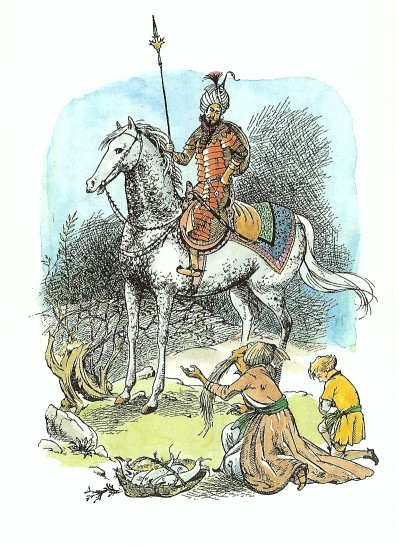
見知らぬ人は、アルシーシュに、今晩泊めてもらえまいか、とたずねました。アルシーシュは、もちろんいやとはいえません。その晩、アルシーシュは、タルカーンの夕食のために、家中のとっておきのものを全部出してもてなしました（もっともお客はそれほどにも思っていないようすでした）。シャスタはといえば、アルシーシュの漁師仲間がきたとき、いつもそうされるように、一かたまりのパンをあてがわれて、小屋から追い出されました。シャスタは、そんなときには、いつも、わらぶきの馬小屋で、ロバといっしょに寝ることにしていました。でも、今夜は、まだ寝るには時間が早すぎましたから、小屋のそばに腰をおろし、板壁の割れ目からきこえてくるおとなたちの話に耳をかたむけていました。シャスタは、立ちぎきは悪いなどとは教えこまれたことがなかったのです。きいた話は、こんなことでした。
「ところでご主人、」とタルカーンはいいました。「じつは、おまえの息子をゆずりうけたいと存ずるが......。」
「だんなさま、」と漁師がこたえました（シャスタは、きげんをとるようなその声の調子から、そういう時の欲深そうな父親の顔つきが目に浮かびました）。「どのくらいの値段でお申しつけになるおつもりで......。いくら、あっしが貧しいからといって、たったひとりのわが子を、この身の片われを、どれいに売ろうっていうんですぜ。詩人のだれかさんもいってるじゃありませんか？『親子の情はスープにまさり、骨肉のきずなは紅玉石にもかえがたし』とね。」
「なるほど、それはそうにもせよ、」と客の男の声は冷ややかでした。「べつの詩人はこうもいっている『賢者をあざむこうとするものは、むちを受けようとみずから背中をむき出したものよ』とな。老いぼれ口でうそっぱちを申すな。この少年がおまえの息子ではないことは明らかだ。よいか。おまえの頬は、わしと同じように黒っぽいが、あの少年は白く美しく、まさに、北のはてにすむ、あのいまわしいが、美しい野蛮人のものだ。」
「『剣はたてでふせげもするが、智者の目はいかなかまえもつきとおす』とはよくもいったもの。おそれいりました、お客さま。それでは申しあげましょう。あっしは、どん底の貧乏人で、妻をめとったこともなく、子どももありません。ところが、忘れもしない、ティスロック王（み代とこしえに！）あのかしこくも慈悲深い王がみ位につかれましたその年のことでした。ある夜のこと、あまりみごとな満月なので、あっしは、どうしても眠れなくなってしまいました。そこで、このあばら家のベッドから起きあがって、海の月を眺めながら、冷たい空気でも吸ってこようと、海岸の方へ出かけていきました。すると、まもなく、水面をこちらにむかってこいでくるかいの音につれて、なにか低い泣き声がきこえてくるのです。それから一ときして、小舟が一そう、潮に乗って、岸に流れつきました。その舟に乗っていたものは、ひどい飢えとかわきでやせ細った男で、それもほんのいましがた息をひきとったようでした（まだ、からだにぬくみが残っていましたっけ）。それに空の水入れと、まだ生きている赤ん坊が乗っていました。『こいつはきっと』とあっしは思いました。『難波した大きな船から逃げてきたにちがいない。たとうべき神のおはからいで、親は飢えながらもこのいのちを守りつづけ、陸が見えたので力つきて死んだものにちがいない。』そういうわけで、つまり困窮しているものを助け、あわれみの心をいだく者には、神の報いがないはずがないというわけでして......（あなたさまのどれいであるこのあっしは、やさしい心の持ち主でしてな）。」
「ぬけぬけとじぶんをほめあげておるのもいいかげんにせい。」タルカーンはさえぎりました。「おまえが子どもをとったことがわかればよい。そして、だれでも知っているように、あの子をこきつかって、あの子の日ごとのパン代の十倍もとりあげていたくせに。さあ、いったい、いくら欲しいか、よいからただちに申せ。おまえのおしゃべりにはうんざりしたわ。」
「まさに、あなたさまのおっしゃるとおりでして！」アルシーシュはいいました。「あの子の働きは、あっしにとって、はかりしれない値うちがございますでな。値をつけるについては、この点をたっぷりおふくみいただきませんと......、かりにあの子を売れば、代わりに働く者を買うか、やとうかしなければなりませんからな。」
「では、十五クレセント(１)払おう。」とタルカーン。
「十五クレセントですと！」アルシーシュは泣き声とも悲鳴ともつかぬ声を出しました。「十五クレセント！あっしの老後の支え、目のよろこびを！いくらそちらさまがタルカーンだろうと、あっしのしらがひげをごまかしちゃなりませんぞ。あっしのつけ値は、七十クレセントなんでさ。」
ここまでくると、シャスタは立ちあがり、しのび足で出ていきました。知りたいことは、みなきいてしまったのです。もうその先は、シャスタが、村でとりひきをしている場面を見ききして知っていました。アルシーシュは、結局シャスタを、十五クレセントよりは高く七十クレセントよりは安く売ることになるでしょう。でもふたりの話がまとまるまでには、まだ何時間もかかるにちがいありません。
その時のシャスタの気もちは、親たちがわたしたちをどれいに売る相談をしているところを小耳にはさんでしまった場合のわたしたちの気もちを想像してみただけではわからないでしょう。というのは、まず第一に、シャスタのくらしが、どれいとあまりかわらなかったからなのです。それでシャスタには、どうみても、あのりっぱな馬に乗った貴族らしいよその人の方が、アルシーシュよりよくしてくれるのではないかと思えるのです。第二には、じぶんが小舟の中で見つかったという話をきいて、シャスタは心がわくわく高なるとともに、ほっと安心したのです。なにしろ、息子は父親を愛さなければいけないとは知っていて、いくらアルシーシュを愛そうとつとめても、どうしても漁師がすきになれないで、しばしば気がとがめてなりませんでした。それがいま、アルシーシュとはなんの血のつながりもないことがはっきりしたので、心の荷がおりたというわけなのです。
「ふうん、ぼくはいったいだれの子なんだ！」とシャスタは思いました。「タルカーンの子かもしれないし、ティスロック王（み代とこしえに！）の子かもしれないし、神のみ子かもしれないぞ。」
小屋の前の草原にたたずみ、シャスタは、思いにふけりました。たそがれがあたりにせまってきて、空には、星が一つ、二つあらわれました。でも夕日の名残が、まだかすかに西空をそめていました。シャスタのいる近くには、あの貴族の馬が、ロバ小屋の壁にとりつけてある鉄輪に、ゆるくつながれていて、あたりの草を食んでいました。シャスタは、馬のそばに歩みよって、その首を軽くたたきました。馬は草をちぎるのに夢中で、シャスタの方を見むきもしません。
「あのタルカーンは、いったいどういう人なんだろう？」新しい疑問がわいたシャスタは、声を出していいました。「もし、あの人が、親切な人だったら、どんなにいいだろう。大貴族のおやしきに使われているどれいたちの中には、ほとんどなにもしないでくらせる者もいるとかいう話だ。どれいたちは、りっぱな衣服を着て、毎日、肉を食べてるんだそうだ。もしかしたら、あの人はぼくを戦争に連れていくかもしれない。そしたらぼくは戦場であの人のいのちをたすけ、あの人が、ぼくを自由の身にしてくれた上に、じぶんの息子になれといって、宮殿も、二輪戦車も、鎧かぶとまでくれるということになるさ。ああ、でも、あの人が、恐ろしくて残酷な人だったらどうしよう。ぼくを鎖につないで苦役に送るかもしれない。ああ、いったいどんな人なのだろう？なんとかわからないものかなあ。この馬ならきっと知ってるはずだけれど、話ができさえすればなあ。」
馬は、頭をあげていました。シャスタが絹のようにすべすべしたその鼻づらをかるくたたきながら、「おまえに口がきけたらなあ。おい、」といいました。
すると、その一瞬、シャスタは、じぶんが夢を見ているんだと思いました。低い声ではありますが、まことにはっきりと「口はきけますよ。」と馬がいったのです。
シャスタは、その馬の大きな目をまじまじと見つめて、おどろきのあまり、じぶんの目も、馬の目ほどに大きくなっていました。
「どうしてそんなに口がきけるようになったのさ？」とシャスタは、たずねました。
「しっ、そんなに大きな声をださないで、」と馬はこたえました。「わたしのいたところでは、たいていの動物がものをいうんですよ。」
「それは、いったいどこなの？」
「ナルニアです。」と馬がこたえました。「ナルニアは、しあわせの国なんです。ヒースのしげる山々があり、タチジャコウ草のかおる草原があり、たくさんの川が流れ、さわさわと小川のわたる谷間があり、苔むす洞穴があり、小人たちのつち音がひびく深い森のある国ですよ。ああ、ナルニアの空気のおいしいこと！ナルニアに一時間くらせば、カロールメンに千年いるよりは、ずっといいんですよ。」こういってさいごにつけ加えたいななきの声は、ちょうどため息のようにきこえました。
「それじゃ、どうして、きみはここへきたの？」とシャスタ。
「さらわれたんです。」と馬はいいました。「ぬすまれたとも、つかまったとも、いえますね。まだ、わたしが、ほんの子馬のころでした。母から、南の斜面を通って、アーケン国やそのさきの土地へは、いってはいけないととめられていましたのに、わたしは、きいちゃいませんでした。そこで、ライオンのたてがみにかけて、てきめんにじぶんのおろかさのばつを受けてしまったのです。ここ何年も、わたしは、じぶんの本性をかくし、人間たちに使われている馬たちのように、口がきけず頭がまわらないふりをして、人間たちのどれいとなってきましたよ。」
「どうしてほんとうのことを、いわなかったの？」
「それほどばかじゃありませんもの。いいですか？わたしがものをいう馬だとわかってごらん。市場で見せものにされてしまい、ますます用心して見張られてしまうでしょう。そうすれば、もう、わたしの逃げるチャンスは、それっきりですからね。」
「それじゃ、どうして......」と、シャスタはつづけようとしましたが、馬がそれをさえぎりました。
「さ、いいですか？ わたしたちはここで、だらだら質問をつづけて、時間をむだにしてはいられません。あんたは、わたしの主人のタルカーン・アンラジンのことを知りたがっていましたね。あれは、悪い人だ。わたしには、そんなに、ひどくはしませんがね。というのも、戦馬はとても高いんで、そまつにできないだけなんです。でも、あんたはちがう。明日あの人のやしきでどれいになるくらいなら、今夜死んだ方がましですよ。」
「じゃあ、ぼく、逃げだした方がよさそうだね。」シャスタの顔は、まっ青になりました。
「そう、その方がいい。どうです、わたしといっしょに逃げようじゃありませんか？」
「きみも逃げるつもりなの？」とシャスタ。
「ええ、あんたがいくつもりなら、」と馬はこたえました。「いまこそわたしたちふたりのチャンスですよ。ねえ、もし、わたしが、乗り手もなしで逃げだしたら、ひとは、わたしを見かけてまよい馬だといい、すぐさま追っかけてきます。乗り手があれば、逃げのびることもできます。つまり、あんたは、わたしを助けてくれることになるんです。それに、あんたにしてみても、たかが二本の足で、追いつかれないほど遠くへいかれるわけがない（まったく、人間て、ばかばかしい足をもってるんですね）。でも、わたしに乗れば、この国のどの馬もひきはなしてしまえますよ。つまり、これがわたしの方で、あんたをお助けできるわけです。それはそうと、あんた、馬には乗れるんでしょうね？」
「ああ、乗れるとも、もちろん。」とシャスタ。「だって、ロバになら乗ってたもの。」
「なあーんに乗った、ですって？」と馬は、ひどく見くびった調子できき返しました（少なくとも、ばかにしたつもりがこもっていました。たしかにそれは『ナハハハハーンに乗った、ですって』と、いななくように、きこえましたが、人のことばをつかう馬たちは、ふんがいするといつもその発音が、ずっと馬らしくなるのです）。
「と、いうことは、つまり、」と馬はいいました。「あんたは、馬には乗れないということですよ。そいつはまずいな。それじゃ、みちみち、乗りかたを教えてあげましょう。では、乗るのがだめなら、落ちるのはどうですね？」
「落ちるなんて、だれだってできるよ。」とシャスタ。
「わたしのいうのは、落ちても、泣かずに立ちあがり、また乗って、また落ちる、それでも落ちるのが平気か、ということですよ。」
「ぼ、ぼく、やってみる。」とシャスタ。
「かわいそうに。」と、馬はやさしい声音になりました。「あんたが、ほんの坊やだっていうことを忘れていましたよ。おいおいにあんたをりっぱな乗り手にしてあげますよ。ところで──小屋のふたりが寝るまでは、わたしたちは、出かけちゃなりませんよ。その間に、ひとつ計画をたてましょう。わたしの主人は、じつは、北の大きな都タシバーンにある、ティスロックの宮殿にいくとちゅうだったのですよ。」
「ちょっと......」とシャスタは、びっくりしたように口をはさみました。「ティスロック王の名を口にしたら、み代とこしえに、っていわなけりゃ。」
「どうしてです？」と馬はいいました。「わたしは、自由なナルニア人ですからね。どれいたちや道化たちの口真似をする必要が、どこにあるんです？わたしは、ティスロックが、いつまでも生きていてほしいとは思わないし、だいいちその人は、わたしがどう思おうとおかまいなく、いずれ、死んでしまいますとも。それにあんただって、自由な北の国からきたものだとわたしは思いますね。そのあんたもわたしも、もう、こんな南の国のちんぷんかんぷんはごめんこうむりましょうよ。ではわたしたちの計画の話にもどりましょう。さっきもいったように、あの人は、北タシバーンにいくとちゅうでした。」
「というと、ぼくたちは、南へいった方がいった方がいいというの？」
「そうじゃない。」と、馬はいいました。「いいですか？あの人は、わたしがほかの馬たちと同様、口がきけず、頭がないと思ってます。じっさいにそんな馬でしたら、わたしが道にまよえば、じぶんのうまやにもどっていくでしょう。あの人のやしきまで、ここから南へ二日かかります。ですからあの人は、かならず、そこへ、わたしを探しにきます。わたしが、かってに、ひとりで北へいくなんて、考えてもみますまい。ともかく、あの人は、こう思うでしょうよ。ここまでくる間に、いちばん最後の村で会っただれかが、ここまであとをつけてきて、わたしをぬすんだんだろう、とね。」
「ばんざーい！」とシャスタは叫びました。「じゃあ、北へいこう。ぼく、いままでずっと、北へいきたいとばかり思ってたんだよ。」
「そりゃあ、そうでしょうとも。」と馬はいいました。「そりゃ、あんたのからだの中の血のせいですよ。あんたは、きっすいの北国人の血すじにまちがいありませんさ。だけど、あまり大きな声を出さないで......。もう、そろそろ、ふたりが寝てもいいころだが......」
「ぼくがそーっといって、見てこようか。」
「そりゃあ、いい考えだ。でも、見つからないようにしてくださいよ。」
もうあたりは、かなり暗くなっていました。そして静まりかえっていました。きこえるものは、海岸に打ちよせる波の音だけで、それはシャスタにとって、昼となく夜となくきこえているので気にとまらなくなっていたのです。小屋に近づいて見ると、なかのあかりは、すでに消えています。戸口のそばで、耳をすませても、なんの音もきこえません。ぐるっとまわって、一つしかない窓のところまでくると、ほどなくあの年より漁師のききなれた高いびきがきこえてきました。今夜のことがうまくいけば、二度とこれもきかなくなると思うと、おかしい気がしました。シャスタは、うれしいうちにも、ちょっとこの漁師が気のどくな気もしながら、息をひそめて、草の上をしのび歩いて、ロバ小屋へいき、鍵のかくし場所から手探りで鍵を見つけ出すと、戸を開けて、夜のうちにしまっておいた馬のくらと馬具や手綱を見つけ出しました。それから、前かがみになって、ロバの鼻にキスをしました。「おまえをつれていかれないで残念だよ。」とシャスタはいいました。
「やれ、やれ、やっときましたね。」シャスタのもどったのを見て、馬がいいました。「どうかしたのじゃないかと、心配してましたよ。」
「きみのものを、ロバ小屋から出してきたんでね。さあ、これのつけかたを教えてくれないか？」
それからしばらくの間、シャスタは、金具の音をさせないように注意して、「腹帯をもっときつくしめて、」とか、「しめ金は、もっと下の方ですよ。」とか、「あぶみは、ぐっと短くしなければだめですよ。」とか、いちいち、馬にさしずされながら、仕事にかかりました。すっかり馬具をつけおわった時、馬はいいました。
「さあ、これで、あとはかっこうをつけるために手綱をつけなければ......でも、あんたが使うためじゃありませんよ。それを、くらの前輪にゆわえといてください。ゆるうくしといてくださいよ。そうすれば、わたしは頭をすきなように動かせますからね。それに、いいですか──手綱にはさわらないこと。」
「それなら、手綱はいったい、なんのためにあるの？」とシャスタはたずねました。
「普通ならこれは、わたしを進む方向にむけるためのものですがね。こんどの旅行は、わたしがゆく先をきめていくつもりですから、あんたは手を遊ばせといてくださいよ。それから、もう一つ。わたしのたてがみにはつかまらないでもらいたいんです。」
「だって、困るなあ。」とシャスタは、途方にくれていいました。「もし、手綱にも、たてがみにもつかまっちゃいけないなら、何につかまっていたらいいの？」
「両ひざでからだを支えていらっしゃい。それが上手な乗りかたの秘けつです。あんたの両ひざで、わたしのからだをできるだけきつくはさむんです。棒みたいにまっすぐに姿勢を正すんです。ひじをからだにつけて......。ところで、拍車は、どうしました？」
「かかとにつけたよ。もちろん。いくらなんでも、それくらい知ってるさ。」
「じゃあ、それをはずして、くら袋の中へ、おしまいなさい。タシバーンについたら、売れるかもしれないから。さ、いいですか？乗ってごらんなさい。」
「ああ、きみは高すぎるよ。」と、シャスタは、さいしょのこころみに失敗して息をはずませていいました。
「わたしは、ただの馬ですよ。あんたのそんなかっこうを見たら、みんなが、わたしを干し草の山じゃないかと思うでしょうよ。それ、ああ、さっきよりましだ。さ、そこで、しっかりすわって、ひざのことを忘れないように。これでもわたしは、騎兵の突撃の先頭をきったこともあるし、レースに勝ったこともあるんですよ。それが、あんたのような下手くそをくらに乗せて走ることになるとはねえ......。考えてみれば、おかしなものだ。ともかく、出かけましょう。」馬は、ひやかし笑いではなく、くすくす笑いました。
さていよいよ、用心しいしい、夜の旅がはじまりました。まずはじめに、漁師の小屋から真南の、小川が海に流れこんでいるところへいき、そこで、泥地の上に、南をさすひづめのあとをいくつかはっきりと残るようにしました。浅瀬の中ほどまでくると、こんどは上流の方へむきを変えて、川の中を、あの小屋よりも約一キロほどおくへはいったところまで歩きました。それから、馬は、足あとを残さないうまい砂利州をえらんで、北がわの岸にのぼりました。そこから、馬は相かわらず歩み足で北にむかって進み、とうとう、あの小屋も、一本だけ立っている木も、ロバ小屋も、入江も......シャスタがいままで見なれてきたすべてものが、夏の夜のうす暗がりの中に消えていってしまいました。丘の上へのぼってきた馬と少年は、ようやく尾根にたどりつきました。その尾根こそは、シャスタの知ってる世界のさかいだったのです。シャスタは、その先にひろびろとつづいている草原のほか、何も見ることができませんでした。はてしないながめでした。あれさびれて、さびしくて、自由でした。
「どうです？」と馬は口をきりました。「駆け足にもってこいの場所じゃありませんか。」
「やめようよ。」とシャスタ。「まだしないでよ。ぼくには、無理だから......ねえ、馬くん、まだきみの名まえを知らないんだ。」
「ブレーヒー・ヒニイ・ブリニー・フーヒー・ハーハ」と馬はこたえました。
「とても、そんな名まえ、いえないな。ブレーって呼んじゃいけない？」とシャスタ。
「ま、そうとしかいえないというなら、仕方ないでしょう。ところで、わたしは、あんたを、なんと呼びましょうか。」と馬。
「ぼく、シャスタって、いうんだ。」
「ふふん、」とブレー。「なるほど、いいにくい名まえって、あるもんですね。ところで駆け足のことですがね。おぼえさえすれば、早足よりかずーっとやさしいんですよ。腰を浮かしたり落としたりしなくてもいいんだから、ひざでしっかりわたしのからだをはさみ、目はわたしの耳の間か、前をまっすぐ見なさい。けっして地面を見てはいけませんよ。もし、落ちそうになったら、ひざをもっときつくしめ、姿勢を正しくする......。......用意はいかが？さあいこう！ナルニアさして、北をめざして！」
(１)クレセント──カロールメンのお金の単位。一クレセントはおよそ三百五十円ぐらい。
２ とちゅうの冒険
次の日、シャスタの顔の上を、なにか暖かくてやわらかいものが動いているけはいで目をさましたのが、かれこれ、ひるごろでした。目をあけると、すぐ前に、馬の長い顔がありました。その鼻づらと口がシャスタにさわりそうでした。シャスタは、前の晩の心おどる事件のかずかずを思い出して、からだをおこしました。ところが、思わずうめき声をあげました。
「うう、ブレー、痛いよ、からだじゅうが。とても動けないよ。」
「おはよう、坊や。」とブレー。「ちょっとまいったかなと思ってましたよ。あんなの、落ちたうちにはいりゃしない。せいぜい十一、二回ぐらいでしょ。それに、落ちるのが楽しいくらい、すてきな、はずみのいい、やわらかい芝生ですもの。ただ一つ、ハリエニシダのしげみにひっかかったのが、まずかったねえ。でも、まあ、馬乗りは、だれでも、最初は、こたえますよ。ところで、朝ごはん、どうします？わたし、もう、すませました。」
「ああ、朝ごはんなんか、やなこった。なにもかもいやだ。ぼくは動けないといっただろう？」とシャスタ。それでも、馬は、鼻づらをシャスタにこすりつけ、ひづめでやさしくかきながらせかすので、シャスタも立ち上がらないわけにはいきませんでした。そこで、はじめてまわりを見まわし、じぶんたちがどんなところにいるのかを知りました。シャスタたちのうしろは、こじんまりした雑木林になっています。前方は、白い花々がてんてんと咲く芝地が、ゆるくくだり、そのさきは崖で、崖の下、潮騒もかすかにしかきこえないほどはるか下方に、海がありました。シャスタは、いままで海を、こんなに高いところから見おろしたこともなく、こんなにひろびろと見渡したこともなく、しかもこんなにいろとりどりの美しいものだとは思ってみたことがありませんでした。右を見ても、左を見ても、海岸は、はるか遠くまでのびていて、岬のさきにまた岬があり、その突端には、白い波頭が岩にあたってくだけ散るのが見えますが、あまり遠いので、そのひびきはきこえません。カモメが数羽、頭上を飛びかっています。大地には、かげろうがゆらめいています。明るい上天気でした。けれども、ことのほかシャスタの注意をひいたのは空気でした。はじめ、何かがないような気がしたのですが、やがて、空気に魚のにおいがないことに気がついたのです。むりもありません。いままでのシャスタの生活は、小屋にいても、網のそばにいても、魚くささから離れたことがありませんでした。ところが、この新鮮な空気のなんとおいしいことでしょう。これで、シャスタの古いくらしのいっさいがっさいが、すっかり遠ざかったような気がして、一瞬、傷のことも、からだのあちこちが痛むことも忘れるほどでした。
「ねえ、ブレー、いま、朝ごはんのことをいっただろ？」
「ええ、いいましたとも。」とブレー。「くら袋の中に、何かあると思いますよ。ほら、袋はあの木の上に、昨夜、いや、今朝早くあんたが掛けておいたところにありますよ。」
馬と少年は、くら袋の中を探しました。すると、すばらしいじゃありませんか！ちょっと古くなっただけのソーセージと、ほしイチジクがひと山と、生チーズが一かたまり、ブドウ酒の小びんが一本、それにお金が約四十クレセントばかりはいっていました。シャスタにとって、こんな大金は見たこともありません。
シャスタは、痛さをしのんで、そっと木によりかかってすわりながら、まずソーセージにかぶりつくと、ブレーも、シャスタにつきあって、さらに草をほおばりました。
「あのお金、使ったら、ぬすむことにならないかしら？」と、シャスタがたずねました。「うう、」と馬は、口いっぱいに草をほおばりながら、顔をあげて、「そこまでは考えなかったな。自由な馬や、ものいう馬は、もちろん、ぬすみなんかしちゃいけませんがねえ。でも、いいんじゃないですか。わたしたちは、敵国の囚人で、とらわれの身だったのですから、あの金は、分捕り品ですよ。それに、あの金を使わずに、どうやってあんたの食べ物を手にいれますか？あんたも人間だ。草だのカラスムギを、そのまま食べるというわけにはいきますまい。」
「いかないさ。」
「やってみましたか？」
「やってみた。でも、とてものみくだせやしない。きみがぼくだったら、やっぱりできっこないさ。」
「おかしな生きものだなあ。人間ってものは。」とブレーは、意見をのべました。
シャスタが朝ごはんを（シャスタにしてみれば生まれてはじめてのすばらしいものでした）食べおえたとき、ブレーは、「くらをつける前に、ちょっといちころがりするかな。」といって、ことばどおりにそのことをやり出しました。「ああ、いい気もちだ。こりゃ、いいぞ。」みると、背中を芝草にこすりつけ、四つ足をつったててぶらぶらさせています。「どうです、あんたもやってみなさいよ。シャスタ。とてもせいせいするから。」とひくい鼻声でいいました。
シャスタは、馬の格好に大笑いして、「おかしいよ。そんな、ひっかくりかえったりして！」
「おかしいなんてことないでしょう、何も......」といいながら、ブレーは、それでも、くるりと、からだを横転させて首を立てると、少し息を切らしながら、真剣な表情でシャスタを見ました。
「ほんとに、おかしく見えますか？」その声は、ちょっと心配そうでした。
「うん、おかしいさ。でも、いいじゃないか、そんなこと。」とシャスタはこたえました。
「ものいう馬がするようなことじゃないと考えてるんでしょ、ええ？ふざけた下品な遊びを、口のきけない馬たちから教わったと考えているんでしょ？ナルニアへ帰ってから、下品な悪いくせを、ずいぶん身につけたことがわかって、じぶんでも、ぞっとするでしょうよ。どうです、シャスタ？正直にいってください。わたしの気もちはかまわずに......ほんとうの自由な、口のきける馬が、でんぐり返しをやると思いますか？」
「そんなこと、ぼく知らないよ。でも、ぼくがきみだったら、そんな、つまらないことしようとは思わないよ。さあ、ぼくたち、出かけなくちゃ。きみは、道を知ってるの？」
「タシバーンへいく道は、よく知ってますよ。そこからあとは、砂漠になります。砂漠はなんとかやっていきますから、心配しないでくださいよ。さあ、それから、北方の山々が見えてきます。考えてもごらんなさい！ナルニアへいくんですよ。北の方へ。もう、そうなれば、だれもわたしたちをじゃますることはできませんさ。タシバーンを通ってしまえさえすれば、しめたものなんです。私たちは、町からはなれている方が安全ですからねえ。」
「町をさけるわけには、いかないの？」
「ずっと奥地の方をまわっていかなけりゃだめです。それも畑地や大通りを通っていくことになりますし、その道をよく知りません。いや、それならば、海岸ぞいにこっそりいきさえすれば、いいんだ。この高原地帯をいくかぎりは、会うとしてもヒツジとウサギとカモメ、それにヒツジ飼いの二、三人ぐらいでしょう。じゃあ、出かけましょうか。」
シャスタの足は、馬に、くらをつけてまたがると、ひどく痛みだしました。しかし、馬はとても親切で、その午後はずっと、静かに歩いてくれました。たそがれが迫ってきたころ、馬と少年は、谷間の方へくだっていく急な小道にさしかかりました。谷間には、村がありました。シャスタは、村へつく前に馬からおりて、大きなパンとたまねぎと赤大根を買いに、歩いていきました。馬は、夕やみの野を早足でまわり道して、遠くでシャスタを待っていました。この方法は、馬と少年が二晩めごとにするきまりのようなものになりました。
シャスタにとって、えらくこたえる日々がつつぎましたが、からだの筋肉が強まるにつれて、日一日と調子があがり、あまり落馬もしないようになりました。シャスタが一応きたえられてからでさえ、ブレーは、シャスタのことをくらの上に乗っかった粉袋のようだというのでした。「もし大通りを通っても安全だとしてもね、坊や。大通りでこのざまを見られちゃ、恥ずかしいねえ。」ことばこそぶしつけでしたが、ブレーは辛抱強い先生でした。それに、馬の乗りかたを教えるのに、馬にまさるものはありません。シャスタは、早足、並足、跳躍など、いろんなことをおぼえました。それから、戦いのさいちゅうでは、いつ、どんなことにぶつかるかもわからないので、こんなことも必要だといって、急にとまったり、思いがけないときに右や左へらかだをゆすったりしても、くらから落ちない訓練をさせられました。そんなおりにはもちろん、シャスタは、ブレーがタルカーンをその背に乗せて加わったという、かずかずの戦いの話をしてくれとせがむのでした。すると、ブレーは、強行軍のこと、急流の徒渡りのこと、突撃のこと、騎兵と騎兵のはげしいわたりあいのことを話してくれましたが、そんな白兵戦になると、軍馬たちは、かみ方、けり方ばかりか、騎手の振りおろす刀や戦斧が敵のかぶとをはっしと打つように、馬と騎手の全体重が、ちょうどよいタイミングでそのひと振りにかかるよう、後足で立つ立ち方などの、はげしい訓練までうけているので、その戦いぶりは、人間におとらずいさましいものでした。しかし、ブレーは、シャスタが始終ききたがるほど、戦争の話をしたがりませんでした。「その話は、やめにしましょうよ。」とブレーはいうのでした。「それは、ティスロックの戦争の話で、わたしは、その戦争で、ただどれいとして、口のきけない動物として働いただけですからね。これが、ナルニアの戦争であってごらんなさい。わたしは、わが国人にまじって自由な馬として、戦いますよ。それこそ、語るにたる戦いというものですよ。ナルニアへ、北の方へ！ふれー、ひ、ひいん！」
シャスタもそのうち、ブレーがこんなしゃべりかたをするときは、駆け足をしようとしているのだな、とさとるようになりました。
それから、おぼえきれないほどたくさんの入り江や、岬や川や村をすぎて、何週間も馬と少年は旅をつづけていきました。そして、昼のうちぐっすり寝ておいて、夕方、ふたたび旅に出かけたある月の美しい晩のこと、高原をあとに進んでいくと、左手八百メートルほどさきに、森のあるひろい野原が見えてきました。右手には、ちょうど野原と同じほどさきに砂丘があって、そのかげに、海が見えました。馬と少年は、一時間ほど、ゆるい早足になったり、並足になったりして、進んでいきましたが、急に、ブレーが立ちどまりました。
「どうしたの？」とシャスタ。
「しいっ！」とブレーは、首を左右にひねり、耳をぴくつかせながら、「何かきこえるでしょう？ほら！」
シャスタは、ちょっと耳をすませてから、「どうやらぼくたちと森の間に、もう一頭の馬がいるらしいね。」といいました。
「ええ、たしかに馬です。それが、どうも気にくわないんだ。」
「きっと、お百姓が馬に乗って、おそく家へ帰るところだよ。」シャスタは、あくびまじりでいいました。
「そうじゃない。あれは、お百姓の乗りかたじゃない。それにあの馬は、農馬でもない。ひづめの音でわかりませんかね。あれは名馬です。しかも、名騎手が乗っているにちがいない。はっきりいいましょう。シャスタ。森のはずれにタルカーンがひとりいるんです。でも、あれは軍馬に乗っているんじゃないな。軍馬にしては身軽すぎますからね。りっぱな血統の雌馬にちがいないぞ。」
「なんだかしらないが、とまったようだよ。」
「そのとおりです。でも、こっちがとまると、むこうもとまるのは、なぜでしょう？シャスタ。こりゃあ、とうとう、だれかにあとをつけられてるんだ。」
「どうしよう？」シャスタは、いままでよりも、声をおとしていいました。「ぼくたちが見えたり、音がきこえたりしているのかしら？」
「じっとしていれば、このくらいのあかりでは見えますまい。ほら、見てごらんなさい。ちょうど雲がきます。あの雲が月をかくすまで、待ちましょう。そしたら、できるだけそっと、右手の海岸の方へ逃げるのです。そうすれば、どうころんでも、砂丘と砂丘の間に、かくれられますからね。」
馬と少年は、雲が月をかくすのを待って、最初は並足で、それから静かな早足で、海岸へむかいました。
はじめ見かけた時より大きな、あつい雲で、まもなく、闇夜になりました。「もう、そろそろ、砂丘のあたりにつくころじゃないのかな。」とシャスタがひとりごとをいった瞬間、心臓がとびあがるほどおどろきました。目の前の暗闇から、突然、恐ろしい音がきこえたのです。長く尾を引くうなり声で、やるせないような、ひどくたけだけしいひびきをもっていました。ブレーは、いちはやく身をひるがえし、この上ない早さの駆け足で、ふたたび陸地へとってかえしました。
「なんだろう？」とシャスタは、息をはずませていいました。
「ライオンです！」とブレーは、歩調をおとさず、ふりむきもせずにいいました。
それからしばらくの間は、ただ、駆けるに駆けるだけでした。幅ひろい浅い川の流れを、ざぶざぶと向こう岸に渡ってから、やっとブレーは立ちどまりました。シャスタは、からだがふるえ、大汗をかいていることに気がつきました。
「この川で、あいつがわたしたちのにおいをつけてくるのがたちきれますよ。」ブレーも、やっと息をついていいました。「しばらくは歩いてもいいでしょう。」
歩きはじめてから、ブレーは、いいました。「シャスタ。わたしははずかしい。そこらの口のきけないカロールメンの馬と同じように、たまげちゃいましたからねえ、まったく。なんだかこれじゃ、ものいう馬のような気がしないな。刀も槍も矢も怖くはないが、あいつらだけはごめんです。どれ、少しばかり早足をしますよ。」
でも、それもわずかの間でした。ブレーは、またにわかに駆け足になりましたが、むりもありません。あのうなり声が、ふたたびきこえてきたのです。こんどは、左手の森の方からでした。
「二ひきいるぞ。」とブレーは、うめくようにいいました。
しばらくの間、うなり声をきかずに駆けつづけたのち、シャスタがいいました。「ほら、あのもう一頭の馬が、ならんで駆けてるよ。ほんの、すぐそばだよ。」
「そ、そりゃ、ちょうどいい。」とブレーは、あえぎながら、「馬に乗っているのはタルカーンだ。刀でわたしたちを守ってくれるでしょう。」
「でも、ブレー、ライオンに殺されるのも、タルカーンにつかまるのも、同じさ。ぼくはそうさ。」とシャスタ。「もしかしたら、馬泥棒だといって、あいつらは、ぼくをしばり首にするかもしれない。」ブレーとちがって、ライオンにおそわれたことのないシャスタは、ライオンをそんなに恐ろしいとは思わなかったのです。
ブレーは、それにこたえずに、鼻をならしただけで右の方へ走っていきました。すると、妙なことに、もう一頭の馬は、左の方へ走り去ったようすで、まもなく、二頭の馬の間は、大きく離れてしまいました。次の瞬間、またライオンのうなり声がつづいて二つ、一つは、右から、もう一つは左からきこえ、二頭の馬の間がまたせばめられました。したがって、ライオンたちもそうなりました。二ひきの野獣のうなり声がおそろしく迫り、もはや、駆ける二頭の馬にたやすく追いつきそうに思われました。そのとき、空をおおっていた雲が切れました。おどろくほどあかるい月の光が、真昼のようにこうこうと、地上をあまねく照らし出しました。二頭の馬とふたりの騎手は、さながら競馬のように、首もひざも、ふれんばかりにならび走っています。あとになってから、ブレーは、カロールメンでこれ以上みごとな競争を見たこともないといいましたが、そのとおりでした。
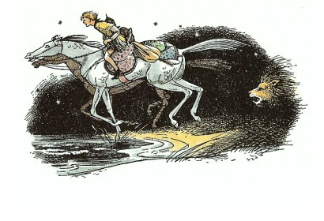
もうだめだと観念したシャスタは、ふしぎに落ち着いて、こう考えはじめました。──ライオンに殺されるとしたら、すぐにかぶりつかれるかな？それとも、ネコがネズミをもてあそぶように、ゆっくりと殺されるかな？どんなに痛いだろうな？それと同時に（もっとも恐ろしい瞬間に、よくこんなことになるものですが）、シャスタは、何もかも見てとってしまいました。あちらの乗り手は、あごひげを生やしていない、たいへん小がらな、やせた人で、くさりかたびらを着て（それが月にかがやきました）、馬の乗りこなしのすばらしくうまい人だとわかったのです。
何か平たくて、ぴかりと光るものが、目の前にひろがりました。シャスタが、なんだろうと考えるひまもなく、大きな水しぶきがあがって、口の中が塩水だらけになりました。光るものは、細長い入江でした。二頭の馬は泳ぎ出し、水はシャスタのひざをひたしました。怒りくるったうなり声がうしろにきこえるので、シャスタがふりむくと、大きなもじゃもじゃの毛の恐ろしい形のものが、水べりにかがんでいるのが見えました。ライオンは、一ぴきでした。「もう一ぴきのライオンは、ふり切ってきたんだな。」とシャスタは思いました。
ライオンは、ぬれてまでも餌はいらないと思ったようです。ともかく、水にはいってまで追いかけてくるけはいはありません。二頭の馬は、並んで、すでに入江の中ほどまできていました。行手に、対岸がはっきりとのぞめます。タルカーンは、まだ、ひとこともしゃべりません。「でも、そのうちに、何かいうにちがいない。陸へあがればすぐに話しかけてくるだろう。そしたら、なんていったものか。何か考えておかければ。」とシャスタは考えました。
すると、突然、二つの声が、シャスタのそばでしました。
「ああ、とてもくたびれました。」と片方がいいました。
「おだまり、フイン、とんでもないことよ。」と、もう片方がいいました。
「夢でもみているのかな」と、シャスタは考えました。「しかし、たしかにあっちの馬もしゃべったようだぞ。」
まもなく、馬たちは泳ぐのをやめて歩き出しました。そして、大きな水音を立てて、脇腹やしっぽの水をふりはらい、八つのひづめで、小石をざくざくとやかましくふみならして、入り江につづく浜辺へあがりました。シャスタがおどろいたことに、馬上のタルカーンは、まだ何も話かけてこようとしないのです。おまけに、シャスタの方を見ようともせず、ひたすら、じぶんの馬を急がせようとばかりあせっているようでした。しかし、ブレーは、すぐさま相手の馬の行手に、立ちふさがってしまいました。
「ブルー、フー、ハー！」と、ブレーは、鼻をならしました。「おひかえください。ききましたとも、あなたのことばを。しらばくれなさるな。姫君。たしかにききましたよ。あなたは、ものいう馬だ。わたしと同じナルニアの馬だ。」
「もし、この馬が、そうだからといって、あなたになんのかかわりがあろうか？」と、馬の乗り手は、刀のつかに手をかけて、きつい声でいいました。しかし、そのことばの調子から、シャスタには何かがわかりました。
「なんだ、女の子じゃないか！」とシャスタは叫びました。
「わたしが女の子だからといって、あんたの知ったことじゃないでしょ？」と、そのひとは、シャスタにむかってつっけんどんにいいました。「あんただって、ただの男の子じゃないの。ただ乱暴な、ふつのう男の子よ。きっと、主人の馬をぬすんだどれいでしょ？」
「知ってるのはそれだけかい。」とシャスタ。
「この子は、泥棒じゃありませんよ。タルキーナのおじょうさん。」と、ブレーはいいました（タルキーナという呼びかたは、タルカーンの女の人にいう名なのです）。「もし、ぬすんだというのなら、わたしこそ、この子をぬすんだといってください。あの、それから『あんたの知ったことじゃない。』とおっしゃるのは、わたしと同じ種族の姫君とこの見知らぬ国で出会いながら、ことばもかけずにいきすぎろとおっしゃるいみじゃございますまいね？ことばをかけるのが、あたりまえだと思いますよ。」
「ええ、それはしごくあたりまえだと、わたしも思います。」と、雌馬がいいました。
「おまえは、だまっていなさい、フイン。」と女の子がいいました。「ごらんよ、おまえのために、こんな面倒なことになって。」
「何も面倒なんてないじゃないか。」とシャスタはいいました。「あんたが、その気になれば、それでおしまいになるのに。ぼくたちは、あんたをつかまえておくつもりはないもの。」
「あたりまえだわ。」と少女。
「人間というものは、けんかがすきですねえ。」とブレーが、雌馬にいいました。「ロバよりしまつが悪い。もう少し、もののわかった話をしませんか。お見受けするところ、あなたの身の上も、わたしと同じではないでしょうか？子馬のころつかまって、何年もカロールメンでどれいにされていたのでしょう？」
「まったく、おっしゃるとおりですわ。」と、雌馬は悲しげにいななきました。
「で、いま──逃げだしていらっしゃるところ？」
「よけいな口を出すなといいなさい、フイン」と少女はいいました。
「いいえ、いいませんわ、アラビス。」と、雌馬は、耳をうしろへ動かしていいました。「あなたが逃げていらっしゃると同じように、わたしも逃げているんですもの。誓って申しますけどこれほど気高い軍馬が、わたしたちを裏切るまねをしますものか。わたしたちは、ナルニアへむかって逃げるところです。」
「申すまもでもなく、わたしたちもそうです。」とブレー。「もちろん、とっくにおわかりのようでしたが、ぼろをまとった少年が、夜の夜中に軍馬を駆る（駆るつもり、というべきかもしれません）のでは、何かで逃げているとしか、考えようがありますまいからね。ところで、高貴な生まれのタルキーナが、兄上のよろいをまとって、夜中にひとり馬を駆り、人目をさけて、ものをおっしゃろうとしないなんて──それがあやしくないというのなら、わたしを駄馬と呼んでくださってけっこうですとも。」
「それなら、いいましょう。」とアラビス。「あなたのお考えどおり、フインとわたしは、逃げていくところです。ナルニアへいこうとして。さあ、まだ、ほかにいうことがあって？」
「おや、それならわたしたち、みんないっしょにいってもかまわないじゃありませんか。」とブレー。「ねえ、フイン姫。あなたを道中何かとお助けもし、お守りすることもあると思うのですが、あなたはそれを受けてくださるでしょうね。」
「なぜわたしとでなく、わたしの馬とばかり話すの？」と少女はブレーにたずねました。
「失礼ですが、タルキーナ、」とブレーは（かすかに、耳をうしろへかしげて）いいました。「それは、カロールメンでのいいかたです。フインもわたしも、自由なナルニア人です。もし、あなたが、ナルニアへ逃げのびようとなされるなら、あなたも、そうなりたいということでしょう。そうならば、フインは、もう、あなたの馬ではなくなります。あなたは、フインの人間だといったっていいわけです。」
少女は、口を開いて話しかけようとしてやめました。あきらかに、少女は、そんなふうに考えてみたことが、なかったのです。
「でも、やはり、」と少女は、少し考えてからいいました。「それほどみんないっしょにいかなければならなないわけがあるとは、思えません。よけい目立つのじゃなくって？」
「ぎゃくですよ。」とブレー。雌馬もこういいました。「ねえ、そういたしましょう。その方が、ずっと気分が楽になりますわ。じつはわたしたち、道もろくに知らないのです。これほどりっぱな軍馬のあなたなら、わたしたちより、ずっとよく知ってらっしゃるはずですもの。」
「もう、いいよ。ブレー。」とシャスタ「むこうはかってにいかせたらいいじゃないか。ぼくたちといっしょにいきたいなんて、思ってやしないもん。」
「いっしょにいきたいんです。」とフイン。
「ねえ、ちょっと、」と少女がいいました。「軍馬さん、あなたとごいっしょなのはかまいませんけれどね。この男の子はどうなんです？スパイじゃないとは、いえないでしょ？」
「どうして、はっきりとぼくが気にくわないといわないのさ？」とシャスタ。
「まあまあ、お静かに、シャスタ。」とブレー。「タルキーナのうたがいも、むりはありませんよ。タルキーナ、この子のことは、わたしが受けあいますよ。この子は、いつも、わたしにうそをついたことのない、いい友だちなのですよ。それに、まちがいなくナルニア人かアーケン国の人か、どちらかなのです。」
「いいわ、わかりました。じゃあ、いっしょにいきましょう。」とアラビスはいいましたが、シャスタには、声をかけません。アラビスが好意をもったのは、ブレーで、シャスタでないのは確かでした。
「よし、すてきだぞ！」とブレー。「それじゃどうでしょう。あの恐ろしいけものたちとの間は、水でへだてられていますから、ここらで人間のおふたりは、くらからおりて、おたがいの身の上話でもしながら、みんなで一休みしていこうじゃありませんか。」
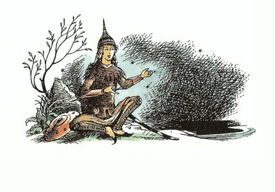
少年と少女がくらをはずし、馬たちは、草を食みました。アラビスは、かなりけっこうな食べ物をくら袋から出して、シャスタにもさし出しました。しかしシャスタは、すねていて、お腹がすいていないから、いらないとことわりました。そしてシャスタは、なんとか、じぶん流に、重々しい格式ばった態度をとろうとしましたが、漁師小屋は、礼儀作法をおぼえる場所ではありませんでしたから、その結果は目もあてられませんでした。これは失敗だとうすうす気づくと、シャスタは、ますます気をわるくし、ますますしゃちこばってしまいました。二頭の馬たちの仲はといえば、じつにうまくいっています。馬たちには、ナルニアでの同じ思い出の場所に、「ビーバー・ダムのすぐ上の草地」がありましたし、うつり住む前は、おたがいがまたいとこのような間柄にあったこともわかりました。それがかえって、人間たちの間をいっそう気まずくさせてしまいました。そして、とうとうブレーがいい出しました。「さあ、タルキーナ。こんどは、あなたの話をしてくださいませんか。ゆっくりとね。わたしはいま、とてもいい気分なのです。」
アラビスは、きちんとすわって、いつもとは、どこか口調も話ぶりもちがった感じで、話しはじめました。カロールメンでは、イギリスの少年少女が作文や綴り方を習うのと同じように、話し方（実話でも作り話でも）というものを習うのです。ちがうところは、話をききたがる人たちはいくらでもいるのに、作文を読みたがる人はひとりもいない、というところなのです。
３ タシバーンの入口で
「わたしの名は......」とすぐに少女は語りはじめました。「アラビス・タルキーナといって、タシの神の直系の子孫であるアルテーブ・ティスロックを父として生まれたイルソンブレ・ティスロックの息子のキドラシ・タルカーンの、その息子のリシティ・タルカーンのそのまた息子のキドラシ・タルカーンのひとり娘です。父は、カラバール地方の領主でティスロック王（み代とこしえに！）のおん前でさえ、くつをはき、立ったまま伺候することを許されたものたちのひとりなのです。母（神々よ、平和をあたえたまえ）はなくなり、父はあらたに妻をめとりました。わたしの兄は、はるか西方におこった反乱をおさえるために出陣して、戦いでなくなりました。弟はまだ子どもです。ところで、父の妻、つまり、わたしの継母は、わたしをにくむあまり、わたしが父の家にともに住んでいるかぎり、太陽さえも暗く見えるというほどでした。そこで継母、わたしをアホーシタ・タルカーンにめあわせようと、父を説きふせました。このアホーシタ・タルカーンという男は、このごろでこそ、へつらいと悪だくみによって、ティスロック（み代とこしえに！）のお気にいりになり、いまではタルカーンにとり立てられて、かずかずの町の領主となり、いまの総理大臣なきあとは、その跡をつぐのではないかとさえいわれておりますが、もとはいやしい生まれのひとりです。おまけに、この男は、少なくとも六十歳にはなっていて、小男で、サルのような顔をしております。それにもかかわらず、父は、このアホーシタには富も権力もあり、妻にも説きふせられたため、アホーシタに使いをやって、わたしを妻にしないかと申し入れました。この申し入れは、こころよくうけ入れられ、アホーシタは、ことしの真夏ごろに結婚したいといってきました。
この知らせをきかされて、わたしは太陽がまっ暗になったような気がしました。わたしは、寝室に閉じこもり、一日中泣きくらしました。けれども次の日、わたしは、ベッドから起きでて顔を洗い、雌馬のフインにくらをつけさせ、西方の戦いに兄上がもっていった先のとがった短剣をつけて、ひとりでとび出してきたのです。まもなく、父の家も見えなくなり、人家のない、とある森の中の草地へきたとき、わたしはフインからおりると短剣をとり出しました。それからわたしは、着ているもののちょうど心臓にあたると思われるあたりを切り裂きました。そして、わたしが死んだらすぐに兄上といっしょになれるようにと神々に祈りました。わたしは、目をとじ唇をかみしめて、心臓に剣をつきさそうとかまえました。あわや、ひとつきというとき、この雌馬が、人間の娘のような声で、『おお、ご主人さま、どのようなことがあろうとも、みずからわが身をほろぼすことはなりませぬ。いのちあってのものだねですわ。死んでしまえばなにもかもおなじ土ですもの。』と申したのです。」
「わたしは、その半分もうまくいえませんでしたわ。」とフインは、口ごもりながらいいました。
「しずかに、しずかに！」と、アラビスの話にひきいれられたブレーはいいました。「アラビスさんは、格式のあるカロールメン調で語っておられるのです。ティスロック宮廷ひろしといえども、これほどの語りじょうずはいないでしょう。さあ、どうぞ、おつづけください。タルカーンさん。」
「わたしの馬がことばをしゃべったのをきいたとき、」とアラビスはつづけました。「わたしはじぶんにこういいきかせました。死が恐ろしいために理性がみだれ、まぼろしにとりつかれたのにちがいない、と。わたしは、カがくうほどにも死をおそれない家すじをかえりみて、心からはずかしく思いました。そこで、ふたたび剣をとりなおして突き立てようとしましたが、フインがそばによりそって、わたしのからだと剣とのあいたに頭をさしいれ、いろいろともっともらしい理屈をならべて、母親が娘にするように、わたしを戒めるのでした。そこでわたしはあまりにおどろきましたため、死のうとしたことも、アホーシタのことも忘れてしまいました。そしていいました。『おお、わが馬よ、おまえはどうして人間の娘のような口をきくことをおぼえたの？』すると、フインは、もうみなさんもごぞんじの、ナルニアにはものいう動物たちがいることや、フインがほんの子馬のころにナルニアからさらわれたことを話してくれました。フインはまた、ナルニアの森や海や、城や大きな船のことなども話してくれました。フインの話がおわるや、わたしはこういいました。『タシの神、アザロスの神、そして夜の女神ザルデーナの名にかけて、ぜがひでもナルニア国にいってみたい。』するとフインがいいました。『ああ、ご主人さま。あなたはナルニアへいらっしゃったら、きっと、おしあわせになりますとも。あの国では、娘がいやがるのに結婚させるなどということは、ぜったいありませんから。』
こうして、すっかりうちとけて長く話しあううちに、わたしの胸にはふたたびのぞみがよみがえり、やはり死ななくてよかったと思うようになりました。しかも、フインとわたしとは、いっしょに逃げようということになり、こういう計画をたてたのです。わたしたちは、ひとまず父の家に帰ると、わたしは、もっているうちでもいちばんはなやかな衣装をつけて、父の前へいき、父がとりはからってくれた結婚をさも喜んでいるように見せかけるために、うたったり、踊ったりしました。そしてこう父にいいました。『おお、わたしの目の喜びであらせられる父上よ、どうか、わたしに、侍女のひとりをつれて三日の間森へ出かけることをおゆるしくださいませ。おとめたちが嫁ぐ日にそなえて、夜とおとめの女神ザルデーナのご加護にわかれをつげるにあたって、どのおとめもなすべきこととしていたしますように、ザルデーナにひそかな捧げ物をいたしたいのでございます。』すると父はこたえました。『ああ、わが目の喜びなる娘よ、そのようにするがよい。』
わたしは、父の前から引きさがるとすぐに、父の召使のなかでいちばん年よりの、父の御用係のところへまいりました。この老人は、小さいわたしをひざの上であやして、空気や光よりも大事にかわいがってくれたのでございました。そして、その召使にぜったいに秘密をまもるように誓わせて、ある手紙を書いてくれるようにたのみました。召使は、さめざめと泣いて、わたしの決心を変えるようにたのみましたが、とうとうあきらめていいました。『おおせ、かしこまりました。』そして、わたしの願いをきいてくれました。わたしは手紙に封をして、大事にふところにしまいました。」
「手紙にはなんて書いたのです？」とシャスタがたずねました。
「しずかにしてなさいよ。」とブレーはいいしまた。「じゃまだてしちゃいけませんよ。手紙のことは、話すべきときにちゃんと話してくれますよ。さあ、あとをつづけてください、タルキーナ。」
「それからわたしは、森へいっしょにいってザルデーナの儀式を行なうことになっている侍女を呼んで、夜が明けたら、すぐに起こすようにいいつけました。そしてその晩は、侍女と陽気に時をすごし、侍女に酒をあたえました。わたしは、その酒のなかに、のんだら一日一夜の間眠りつづけるような薬をいれておいたのです。家じゅうのものが眠りにつくと、すぐにわたしは起きあがり、じぶんの部屋にかたみとして大事にしまっておいた、兄上のよろいを着けました。わたしはありたけのお金と、いくらかのめぼしい宝石を腰帯につけ、食べ物も用意して、雌馬にみずからくらをつけ、夜中の二時にやかたを立ちいでました。わたしは、父が考えつきそうな森の方角ではなしに、北西のタシバーンへむかいました。
さて、三日やそこらは、父がわたしのことば真にうけて、探しにこないだろうことはわかっていました。四日目に、わたしたちは、アジム・バルダの町につきました。アジム・バルダは、たくさんの道が交わる地点にあって、ティスロック（み代とこしえに！）家の駅伝は、ここから王国じゅうのあらゆる地方へ、早馬で出かけます。そして、タルカーン一族でもおもだったものは、この早馬をつかって便りを送る権利と資格があたえられているのです。そこで、わたしは、アジム・バルダの王室駅伝本陣にいって、駅伝のつかさに申しつけました。
『おお、便りをはこぶ者よ。わたしの叔父アホーシタ・タルカーンから、カラバールの領主ギドラシ・タルカーンにあてた手紙だ。さあ、この五クレセントで、この手紙を配達させるように。』するとつかさはいいました。『おおせ、かしこまりました。』
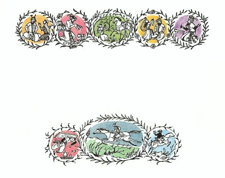
この手紙は、アホーシタが書いたようによそおってあり、その内容は、次のとおりでした。
『アホーシタ・タルカーンからキドラシ・タルカーン殿へ。あいさつと平和を。ぜったいにして侵すべからざるタシの神のみ名において申しあげます。ほかでもありませんが、さきごろ、あなたのむすめごアラビス・タルキーナとそれがしとの結婚の約束をはたさんがため、あなたのやかたへむかって旅立ちましたところ、なんというしあわせでありましょうか。おとめのならわしに従って、おりからザルデーナの儀式と捧げ物をすませたアラビス姫に、森でお会いしましたしだい。美しさと分別とをかねそなえたむすめごを、あらためて見知ったそれがしは、愛情のほのおを一時にあおられ、すぐにも結婚しなければ、この世も闇だと思われました。そこで、それがしは、必要な捧げ物をととのえ、むすめごとお会いしたその場にてただちに結婚し、ともどもにわがやかたへもどってまいりました。この上は、われらふたりは、お目にかかっておことばをたまわればうれしくぞんじますゆえ、あなたが一刻も早く、当地へお越し下されるよう祈っております。なお、このたび、そうとうな負担と出費あいつぐによりまして、ぜひそれがしの妻の持参金をおもちくだされたく。また、あなたと友愛深いよしみに免じまして、あなたのむすめごに対するそれがしのせつなる愛情のゆえにほかならぬ、このあわただしい結婚につきましては、おいかりをまねくこと万々ないものと信じます。あなたの上に、神のご加護の厚からんことを。アホーシタ・タルカーン。』
わたしは、これだけのことをすませるやいなや、追ってのこないことを願うとともに、この手紙を受けとった父が、アホーシタに使者を出すか、父自身で出かけるかしてくれればよいがとのぞみつつ、事があらわれないうちに、タシバーンのさきへいかなければならないと、急ぎ馬にうちのって、アジム・バルダを出発しました。これが、ライオンに追われて、あのしお辛い水を泳いでいるうちに、あなたがたにお会いした今宵にいたるまでのわたしの身の上のあらすじです。」
「それでその娘、あなたが薬をのませた侍女は、どうなっただろう？」と、シャスタはたずねました。
「きっと、寝ぼうしたのでむち打たれたでしょうよ。」とアラビスは、冷ややかに、いいました。「でも、あの侍女は、わたしの継母の手先で、スパイだったのですもの。あの子が打たれて、かえってうれしいわ。」
「でも、そんなの、よくないなあ。」とシャスタはいいました。
「わたしは、なにもあなたを喜ばすためにいろいろしてきたわけじゃないのよ。」とアラビス。
「それに、もう一つ、その話の中でわからないことがあるんだ。」とシャスタ。「きみは、まだおとなじゃない。ぼくより年上とは、思えないもの。ぼくと同いどしでさえないだろ。だのに、どうして、きみの年で、結婚ができるの？」
アラビスは、だまっているだけでしたが、ブレーがすぐにいいました。「よく知りもしないことをやたらにいうんじゃありませんよ、シャスタ。名門のタルカーン家ともあれば、そのくらいの年で結婚するものなんですよ。」
シャスタは、まっ赤になり（あたりが暗くて、ほかの者にはそれがわかりませんでしたが）、なんだかばかにされたような気がしました。アラビスが、こんどは、ブレーに身の上話をするようにいいました。ブレーは話しだしましたが、シャスタは、じぶんがブレーの背から落ちたことや、その乗りかたの下手なことを、ブレーが必要以上に大げさに話していると思いました。ブレーは、それがおかしくてならないようでしたが、アラビスはひとつも笑いません。ブレーが話しおわってから、一同はみなぐっすりやすみました。
次の日、四人は、つまり二頭の馬とふたりの人間は、そろっていっしょに旅をつづけました。シャスタにとっては、ブレーとだけで旅をしていたときの方が、ずっと楽しかったと思いました。なぜなら、いまでは、ほとんど、ブレーとアラビスとばかりが話しているのです。ブレーは、カロールメンにながいあいだ住んで、タルカーンの人々や、タルカーンの馬たちといっしょにいましたから、当然アラビスとは、同じ人々、同じ場所を知っていました。アラビスが「もし、あなたが、ザリンドレーの戦いにいってたなら、わたしのいとこのアリマシュに会ったと思うんだけど。」というようなぐあいにいうと、「ええ、知ってますよ。アリマシュね、あのかたは、二輪戦車隊の隊長でしたね。どうも、二輪戦車やそれをひくような馬とは、うまがあいませんでしてねえ。ああいうのは、騎兵とはいえませんもの。でもあのかたは、真の貴族でした。テーベスを占領した後、わたしのかいば袋に、砂糖をいっぱいつめてくださったっけ。」と、ブレーがこたえます。また、ブレーの方が、「あの夏、メズリールの湖にいってましてね。」といえば、「ああ、メズリール！あそこにはラサラリーン・タルキーナというあたしのお友だちがいてよ。なんて、すばらしいところでしょ。あのさまざまのお庭やら、千佳香の谷の美しいこと！」とアラビスがいいます。ブレーは、シャスタをのけ者にしようなどとは、すこしも思っていませんでしたが、シャスタは、時々、どうもそんな気がしてしまうのでした。いろいろと共通のことを知っている人たちは、どうしても、そのことを話し合わずにはいられませんし、それを知らない人がその場にいれば、どうしても、じぶんがのけ者にされているように感ずるものです。
フインはといえば、ブレーのようなりっぱな軍馬の前に出ると、どちらかといえば、はにかんで、あまり話しません。それに、アラビスは、話さないですむような場合には、シャスタには話しかけませんでした。
けれど、まもなく、一行は、もっともっと大切なことを考えなければならなくなりました。いよいよ、タシバーンに近づいたのです。あたりの村の数もしだいに増し、村の大きさも大きくなり、道をゆきかうひとびとも数しげくなりました。一行は、いままではほとんど夜のうちに旅をつづけ、昼間はできるだけかくれるようにしていました。そして休むたびごとに、いつもタシバーンについたらどうしようかと、さかんに議論しあうのでした。だれも、この難題をさけて、先へのばしてきていたのですが、いまはもう、これ以上のばせません。この問題の話しあいをするたびに、少しずつ、ほんの少しずつではありますが、アラビスはシャスタに親しくなったきました。ひとはもともと、とくべつに話すこともないときよりも、何かをしようとする時の方が、たがいにうまくいくものです。
ブレーは、都をぬける間に、もし運悪く、はなればなれになったとしても、タシバーンから遠くはなれた地点でおちあえるように、まずその場所からきめようではないか、といいました。ブレーは、いよいよ砂漠がはじまるきわにある古代の王たちの墓が、いちばんふさわしい場所だといいました。「石でできた大きなハチの巣のような形で、いやでも見おとすはずがありませんよ。それになによりもいいのは、カロールメンのひとたちは、死者をくう鬼どもが出る場所だと信じてこわがっていて、だれも近よらないことですよ。」というのでした。アラビスは、ほんとうに鬼が出るのかと、ブレーにたずねました。ブレーは、じぶんは自由なナルニアの馬だから、そんなカロールメンの話などは信じないといいました。するとシャスタも、じぶんだってカロールメンの人間ではないから、そんなばかばかしい化物の話なんかはすこしも気にしないさ、といいました。でもそれはほんとうの気もちではありませんでした。しかし、シャスタのこのことばにアラビスは感じいったようすで（ほんとうのところ、ちょっと気にもさわって）、もちろんアラビスも、わたしだって、そんな鬼なんて、いくら出ようと平気よ、といいました。そこで、タシバーンを通りぬけてからのおちあい場所は、墓場ときまりました。こうして、みんながたがいにうちとけるようになったところで、フインが、わたしたちのいちばんの問題は、タシバーンを通ったらどこへいくかではなくて、その都をどうやって通りぬけるかということじゃないかしらと、えんりょがちに指摘しました。
「それは、あしたきめましょうよ、フイン姫。」とブレーがいいました。「もう時間ですよ。少しやすもうじゃありませんか。」
けれごも、それは簡単にはいきませんでした。アラビスははじめ、タシバーンにはふみこまずに、都の下流のほうを泳ぎ渡ろうといいだしました。しかし、ブレーが二つの理由をあげて、それに反対しました。一つは、河口がたいへんひろくて、フインには、このひとを乗せて泳ぎ渡るのは、距離が長すぎてむりだし（ブレーは、じぶんにとっても、長すぎると思ったのでしたが、そのことにはふれませんでした）、もう一つは、船のゆききが多すぎて、どこかの船の甲板から、二頭の馬が泳ぎ渡るところを見かければ、もちろんあやしまないはずはないということでした。
シャスタは、タシバーンのずっと川上へいって、川はばの狭くなったところを渡ったらどうだろうといいました。しかし、ブレーの説明によると、そこには両岸に何キロにもわたって、たくさんの庭園や遊び場がならんでいて、タルカーンやタルキーナたちがいく家族もそこにくらしたり、道で馬を駆ったり、川の上で水上パーティを開いたりしているというのです。事実、そのあたりは、アラビスやブレー自身すら見おぼえているだれかれに、いちばん出くわしやすい場所なのでした。
「ぼくたち、変装しなけりゃだめだ。」とシャスタがいいました。
フインの意見は、人ごみのなかではかえってひとに気づかれないものだから、むしろ都のなかを、表門から裏門まで、まっすぐ通りぬけた方が安全かもしれないというのでした。しかし、変装の思いつきには、フインも賛成しました。雌馬は、「人間のおふたりさんともぼろを着て、お百姓かどれいに見せる必要があります。そうしてアラビスのよろいや、わたしたちのくらなどはまとめてつつんで、わたしたちの背中に乗せて、お子さんたちがわたしたちをひいているように見せかけなければいけません。そうすれば、通りすがりの人々は、わたしたちをただの荷馬だと思うでしょうからね。」といいました。
「まあ、フインったら！」とアラビスは、ちょっと軽べつしたように、いいました。「どんなに変装させたって、ブレーが軍馬以外のものに見まちがえられるものですか！」
「それはわたしも、見まちがえられないと思いますね。」とブレーは、鼻を鳴らし、耳をすこしばかりねかせながらいいました。
「ええ、それがいちばんの策だとは思いませんけれど、」とフイン。「でも、それしかないんじゃないでしょうか。それに、わたしたちは、もう何日も手入れをされていないし、わたしたち自身、もとの姿には見えないと思うのです（少なくとも、わたしはそうです）。ですから、泥をよくぬりたくって、いかにも疲れてたいぎなように、足をひきずるようにして、首をたれて歩いていけば、気づかれないでのではないでしょうか。それから、わたしたちのしっぽも短く切らなければいけないでしょう。きちんとじゃなく、ほら、ざんばらにね。」
「ねえ、フイン姫」とブレー。「そんなかっこうでナルニアについたら、どんなにいやーな気がなさるか、心に思いうかべてみましたか？」
「でもねえ、」とフインは、つつましやかにいいました（フインは、とてもかしこい雌馬でした）。「でも、大事なのは、むこうへいきつくことですわ。」
だれもそうしたいものはいなかったのですが、結局、フインの案がとりあげられることになりました。ただし、この案は面倒なところがあって、シャスタのいう「ぬすみ」、ブレーのいう「襲撃」というものを、いくらかはおかさなければならないのです。その夜、ある農家では二、三の袋がなくなり、またある農家では一巻の縄がなくなりました。また、アラビスに着せるための、少年用のぼろの古着などは、村で、ちゃとんお金をはらって買わないわけにはいきませんでした。シャスタが、それらのものをもって意気ようようと帰ってきたのは、ちょうど日がとっぷりくれるころでした。ほかの者たちは、道の行手の正面にあたって、木々のこんもりした丘がつづくそのふもとのしげみのかげで、シャスタを待ちうけていました。みなは、ここが最後の丘だというので、心おどるものがありました。一行がその丘の頂きにある尾根につきさえすれば、タシバーンが眼下に見おろせるのです。「どうか、無事にあそこを通りぬけたいものだねえ。」とシャスタがフインにささやきました。「ああ、ほんとに！ぜひとも、ね。」とフインが力をこめていいました。
その夜、一行は、森のなかをうねうねと通っているきこりの道を、丘の尾根へとあがっていきました。やがて、森をぬけて、丘の頂きに出ると、目の下の谷あいに、数千の灯の海をながめおろすことができました。シャスタは、いまだかつて、こんなに大きな都があるなどということを考えたこともなく、すっかりおじけづいてしまいました。一行は、夕食をとり、子どもたちは、ひと眠りしました。しかし、あくる朝早く、馬たちはふたりを起こしました。
空にはまだ星々が光り、草はひどく冷たく、露でぬれていましたが、一行のまむかいの海の彼方から、ちょうど夜が明けかかろうとしていました。アラビスは、森へ五、六歩ふみこんでいって、やがて新調のぼろ服を着、いままで着ていたものを包みにしてかかえながら、おかしなかっこうでもどってきました。この包みやよろいや楯、三日月形の刀、二つのくらやそのほかのりっぱな馬具などは、みんな袋のなかにつめこまれました。ブレーとフインとは、すでにもう、じぶんたちのからだを思いきり汚したり、泥んこにしたりしていましたから、あとはしっぽを短くするだけでした。ところが、それのできる道具は、アラビスの三日月形の刀だけでしたから、それをとり出すために、もういちど荷物をほどかなければなりませんでした。しっぽを切るのは手間のかかる仕事で、かなり馬たちを痛がらせました。
「やれ、やれ、」とブレーはいいました。「これで、わたしがものいう馬でなかったら、ひとけり、あんたの顔に、おみまいするところなんですよ。切りとってくれるのかと思っていたら、これじゃあ、まったく、むしりとるというもんですよ。」
うす暗がりの中で、しかもかじかんだ手でやったのではありましたけれど、結局、すべてをやりおおせて、大きな荷物が馬の背にゆわえられ、縄のはづなは（いままでのくつわや手綱のかわりにつけられました）、子どもたちの手ににぎられて、ふたたび旅がはじまりました。
「いいですか、」とブレー。「できるだけ、いっしょにいきましょう。それがだめなら、古代の王たちの墓でおちあいましょう。だれでも、そこへ先についたものは、きっとみんなを待つんですよ。」
「それから、もうひとつ、」とシャスタ。「きみたち、馬の方は、どんなことがあったって、うっかりしてことばをしゃべりだしてはいけないよ。」
４ シャスタ、ナルニア人とめぐり会う
はじめ、シャスタが目の下の谷間を見おろしたとき、見えたものは、一面の霧の海と、わずかにそこからつき出した円屋根と尖塔のいくつかばかりでしたが、次第にあかるくなって、霧もうすらいでくるにつれて、だんだんいろいろなものが見えるようになりました。幅ひろい川が二すじにわかれて、その流れにはさまれた島に、この世のふしぎの一つ、タシバーンの都がありました。島のまわりは、縁にそって高い壁がめぐらされ、そのすそ石は流れに洗われ、高壁は、シャスタがかぞえはじめてみたものの、すぐ、うんざりしてやめてしまったほどたくさんの塔でかためられています。壁の内がわは、島ぜんたいが一つの丘のようになっていて、その丘は、ティスロックの宮殿とタシの大寺院がある頂にいたるまで、びっしりと建物でおおわれ、段庭の上に段庭を重ね、大通りの上に大通りを走らせ、ジグザグにつづく道や、大きな石段がそうそうとつづき、道や石段の両がわにオレンジの木やレモンの木が植えこんであります。また屋上庭園、バルコニー、深いアーチのトンネル道、柱廊下、とんがり屋根、胸壁、祈りの塔や小尖塔などでいっぱいなのです。そのうち、とうとう朝日が海からのぼり、大きな寺院の銀板ぶきの円屋根が日の光を反射させるので、シャスタは目がくらみそうでした。
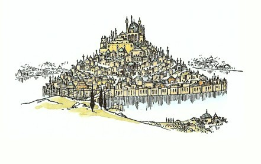
「さあ、進みましょう、シャスタ。」とブレーがさっきからいっていました。
谷の両がわの川岸は、庭園がぎっしり連なっていて、ちょっと見るまで森かと思うほどですが、だんだん近よっていくと、無数の家々が木立ちのかげからその白壁をのぞかせています。やがて、シャスタは、花と果物の甘い香りに気がつきました。十五分もたつと、両がわにつづく白壁から木の枝がたれさがっている平らな道の上を、花や果物につつまれて、てくてくとあるいていました。
「ねえ、」とシャスタは感にたえない声でいいました。「すばらしいところだなあ、ここは。」
「まあ、ね。」とブレーはいいました。「でも、なんとか無事に、ここを通りぬけて、向こう側へ出てしまわないことには。北の方ナルニアへ！」
ちょうどその時、低い、びりびりひびきわたるような音がつたわってきて、だんだんとたかまり、谷じゅうがその音でゆれるようでした。そのひびきは音楽的ですが、とても力強く、おごそかなので、何かすこし恐ろしい気もちがしました。
「あれは、都の門がいま開くという知らせの角笛ですよ。」とブレーがいいました。「わたしたちも、すぐそこへつきます。さあ、アラビスさん、もうすこし肩をおとして、足どりを重く、なるべく、姫君らしく見えないように、気をつけてくださいよ。しょっちゅう、けられたり、ひっぱたかれたり、ののしられてくらしてきたひとになったつもりでね。」
「そんなにいうんだったら、あなたはどうなの。」とアラビス。「もうちょっと頭をさげて、首をそんなにそらせないで、軍馬らしくなく見えるようにしたらどう？」
「しいっ」とブレー。「さあ、つきましたよ。」
そのとおり、いよいよタシバーンにつきました。ついたところは川のほとりで、一行のいく道は、弓形の橋げたをならべる長い橋を通ってつづいていました。川の流れは、朝早い日に輝いておどっています。はるか右手の川口近くには、船のマストがいくつも見うけられます。橋の上には、ほかにも旅人が五、六人、先を歩いていますが、たいてい、荷物をつんだロバやラバをひいているか、でなければ、頭にかごをのせている農夫たちでした。ふたりの子どもと二頭の馬は、その人たちのむれの中にはいりました。
「どうかしたの？」とシャスタは、おかしな顔つきをしているアラビスの耳もとにささやきました。
「あなたはどうってことないでしょ。」とアラビスはすこし無作法ないいかたをしました。
「タシバーンについたからって、あなたにとってはなんでもないわ。だけれど、わたしの場合、ほんとなら、こしに乗り、兵士たちを先頭に、うしろにはどれいを従えて、さしずめ、ティスロック（み代とこしえに！）の宮殿で開かれる大晩餐会にでもよばれていくところなのよ。こんなふうにこっそりとじゃあないわ。だけど、あなたは別よ。」
シャスタは、アラビスはずいぶんつまらないことを考えているなと思いました。
橋のいちばんはずれに、都をかこむ城壁があおぎみるほど高くそびえ、その入口に、真ちゅうの扉が開かれていました。門は、ほんとうはずいぶんひろいのですが、高さがとても高いためにせまく見えます。門の両がわには、五、六人の兵士が槍によりかかって立っていました。「もし、わたしがだれの娘だかわかったら、この兵士たちはみんなおどりあがって、気をつけをし、敬礼するにちがいないわ。」とアラビスは思わず考えました。けれども、ほかのものたちは、どうやってそこを通ろうか、兵士たちが何もとがめないでくれればいいが、と考えただけでした。さいわい、兵士たちは、何もいいませんでした。ところが、そのひとりが農夫のかごからニンジンを、ぽいとつまみ上げたかと思うと、意地わるそうに笑いながら、シャスタにそれを投げつけて、こういったのです。
「おい、馬ひき！ そんな乗馬を荷馬につかったりして、おまえの主人に見つかってみろ。ひどいめにあうぞ。」
シャスタは、兵士のこのことばをきくと、やはり、少しでも馬のことを知っているものは、ブレーを荷馬にまちがえるはずがないことがわかって、ひどく心配になってしまいました。
「ご主人のいいつけなんだぞ。何いってるんだ。」とシャスタはいい返しましたが、そんなことは、いわなければよかったのです。そういったとたんに、兵士のびんたが横面にとんできて、シャスタは、あやうく倒れるところでした。「こいつでもくらえ、あかだらけの小僧め。ちゃんとした人間さまに、お話するのにはな、作法ってものがあらあ。」それでもどうやら一行は、とめられずに、都のなかへはいりこむことができました。シャスタは、いままでもこんなに強く殴られることはなれていましたから、あまり泣き顔を見せませんでした。
タシバーンの門の中に入って、まず気がついたのは、この都が遠目ほどすばらしいところではないことでした。最初の通りはせまく、両がわの家々の壁には、窓もろくにありません。通りは、シャスタが思ったよりも、ずっとこんでいました。一行といっしょに町にはいってきた農夫たち（市場にいくところです）もいますが、そのほかに、水売り、菓子売り、人足、兵士、乞食、ぼろをまとった子どもたち、めんどり、まよい犬、素足のどれいなどもいます。みなさんがそこにいあわせたら、みなさんはまず、風呂にもはいらない人たち、洗ってもらったことのない犬、香料、ニンニク、タマネギ、いたるところにあるごみの山からくるにおいが気になるでしょう。
シャスタは、馬をひいてるふりをしていましたが、じっさいに道を知っているのはブレーで、鼻さきをちょっと動かしては、シャスタにゆく先を合図しているのでした。みんなは、まもなく左へ道をとり、急な高台へのぼりはじめました。その道の両がわは並木になっていて、家並みも右がわにしかなく、前よりもずっと清潔で気もちのよい通りです。左手には、低い町並みの屋根が見おろされ、かなり川上の方まで見わたされます。やがて、道は右に大きく折れまがり、そこからさらにのぼりつづけました。道はジグザクにおりかえして、タシバーンの町の中心へとのぼっています。まもなく、一行は、りっぱな通りへ出かけました。そこには、カロールメンの神々や英雄たちの大きな彫像が、ぴかぴかかがやく台座にたっていました。像の多くは、見て気もちがいいというよりも、むしろ強烈な感じをあたえるものでした。ヤシ並木や円柱の立ちならぶ屋根つきの歩廊が、やけつくような敷石の道にかげを投げています。立ちならぶ宮殿のアーチ形の門を通して、緑の枝や、涼しそうな噴水や、きれいに刈られた芝生がシャスタの目にはいりました。なかはどんなにいいだろう、とシャスタは思いました。
曲がり角にくるたびに、シャスタは、こんどは人ごみから出られないかと願うのですが、どこまでいっても、そうはいきません。そのため、みなの進みかたはとてものろくなり、時には立ちどまってしまわなければならないことさえありました。それは、たいてい、「下にーい、下にー、タルカーンさまのお通り。」とか、「タルキーナさまのお通り。」とか、「第十五席の大臣さまのお通り。」とか、「大使閣下のお通り。」などと大声でふれながらやってきたときで、どんな人ごみも塀ぎわに押しやられてしまうのです。そしてシャスタは、ひとびとの頭ごしに、からだのとても大きなどれいが四人か時には六人もかかって、はだかの肩にかついでいるこしの上に、そのさわぎのご本尊のりっぱな貴族や貴婦人が、のんびりとすわっているのをたびたび見かけました。タシバーンでは、あまりえらくない人は、もっとえらい人たちに道をゆずらなくてはならないという交通規則が一つあるだけなのです。それを守らないものは、むちで一打ちされるか、槍の石づきでこづかれるかされてしまいます。
都をのぼりつめたところ（その上にあるのは、ティスロックの宮殿だけです）に近いあるりっぱな通りにさしかかったとき、いちばん大がかりな交通どめにあいました。
「下に！ 下に！ 下に！」という声がきこえてきました。「ティスロック（み代とこしえに！）のお客、白い野蛮国の王さまのお通りだ。ナルニアの貴族がたのお通りだ。」
シャスタは、道をさけるため、ブレーをさがらせようとしました。しかし、馬というものは、ナルニアのものいう馬であっても、うしろへさがるのは、やさしいことではありません。そこへシャスタのまうしろの角ばったかごをもった女の人が、そのかごをシャスタの肩にぐいと強く押しつけていうのです。「何さ、人を押して！」すると、まただれかが横からシャスタをおしたので、あわてた拍子にブレーをうっかりはなしてしまいました。しかもそのうちに、シャスタのうしろは、人の群れがぎっしりと、すきもなくつまってしまい、ひとつも身動きできなくなりました。そのため、シャスタは、心ならずも、いちばん前の列に押し出されてしまい、むこうからやってくる行列の人たちをまるまるながめることになりました。
それは、その日に見たほかの行列とは、まったくちがっていました。先頭に立って、「下にい！下にー」とどなっているふれ役だけが、その行列の中でただひとりのカロールメン人でした。こしは一台もありません。だれもかも歩いています。全部で六人ほどでしょうか。シャスタがまだ見たこともないような人たちでした。まず第一に、その人たちは、シャスタと同じように、白い肌で、ほとんどが金髪です。その服装も、カロールメンと大ちがいで、まず大ていの人が足をひざまでむき出しています。上着は、森の緑、あかるい黄色、目のさめる青のような上品で、あかるくて、はっきりした色です。また、頭には、ターバンの代わりにはがねか銀のふちなし帽をかぶり、その帽子には、宝石のはめてあるものもあり、両がわに羽根かざりをつけているものもあります。帽子をかぶっていないひとも、何人かいます。また、腰につけている刀は、長くてまっすぐで、カロールメンの人たちの三日月刀のように曲がってはいません。それに、カロールメンの人たちは、たいてい、重々しく、もったいぶっているのですが、この人たちは、腕や肩をらくにふって軽やかに歩きながら、話したり、笑ったりしています。口笛を吹くものもありました。その人たちは、親しくしてくる相手なら、だれとでも仲よくしようとし、そうでないなら、気にとめないように見えました。シャスタは、こんなにすばらしいことに出会ったのは、生まれてはじめてだと思いました。
ところが、その楽しさも束の間、まことに恐ろしいことがおこりました。金髪のなかまの中心の人が、突然、シャスタを指さして叫びだしました。「や、ここだ！われらが逃亡者がおられたぞ！」そして、シャスタの肩をつかんだのです。次の瞬間、シャスタは、ぴしゃりとたたかれました。泣き出すほどのひどい打ちかたではありませんでしたが、恥を思い知らせるするどさのこもった一打ちです。そして、シャスタをゆさぶりながら、さらにいいました。
「ほんとにこまったおかただ！ との、はずかしはくないか！スーザン女王は、あなたのために、目を真っ赤に泣きはらしておられるぞ。なんとしたことだ、一晩じゅう遊びあるいたりして！どこへ行っておられたのだ。」
シャスタは、ちょっとのすきでもあれば、ブレーのからだの下にかけこみ、人ごみの中にまぎれこんでしまおうとしたのですが、あっという間に、金髪の男たちにかこまれ、とりおさえられてしまいました。
はじめ、シャスタはよっぽど、じぶんがアルシーシュという貧しい漁師の息子にすぎず、この外国の貴族が、じぶんをだれかほかの人とまちがえているのだと、いおうとしました。しかし、このおおぜいの前で、じぶんがどういうもので、何をしようとしているのかを打ちあけるようなことは、もっともまずいことでした。そういう話をはじめようものなら、この馬はどこで手に入れたのか、アラビスとはだれかなどとすぐにきかれ、あげくのはてに、タシバーンを通りぬけるチャンスは、永久になくなるでしょう。次に、シャスタの心にうかんだ考えは、ブレーに目で、そのたすけをもとめることでした。けれど、ブレーは、この人だかりの前で、じぶんがものいう馬だと知られたくないために、つとめて普通の馬らしく、ぽかんとして、つっ立っています。アラビスに対しては、シャスタは、ひとの注意をひくことをおそれて、その方を見ることさえできません。さて、どうしようと考える間もなく、そのナルニア人の中心人物は、こういいました。
「さあ、ベリダン、この若ぎみの片手をおさえなさい。わたしがもう一方の手をとろう。では、さきへ。この小さなやっかいものが、わたしたちの宿所に、無事でいるのを見られたなら、姉ぎみも、さぞご安心なさろう。」
こうして、タシバーンを半分もいかないうちに、シャスタたちのたてた計画がすっかりくずれ、シャスタは、ほかのものたちに別れをつげるひまもなく、見知らない人たちの行列にまじって遠ざかっていき、これからいったいどうなるのかという見当さえつかなくなりました。ナルニアの王は──ほかのものが中心人物に話しかける態度から、シャスタは、王にちがいないことがわかりはじめました──シャスタに、たてつづけに質問をあびせかけました。いったい、どこにいってたのか、どうやってぬけ出していったのか、着ていたものはどうしてしまったのか、これほどのわんぱく坊主とは知らなかった、とか......。ただ、王は、わんぱく坊主とまではいわずに、「わんぱく」ということばを使いました。
シャスタは、ひとことも返事しませんでした。しゃべっても大丈夫なことが何ひとつ思いつけなかったからです。
「どうしたな！ 口がきけなくなったか？」と王はたずねました。「王子よ、はっきり申すが、このあさましい沈黙は、ぬけ出したことよりも、さらにあなたの生まれにふさわしくないぞ。ぬけ出していったことは、多少元気もあって、子どものいたずらですまされよう。しかし、アーケン国の王のご子息たるものは、みずからなしたことをあきらかに申すべきだ。カロールメンのどれいのように、首などたれるでない。」
シャスタは、前からずっと、この若い王のことを、とびきり感じのいいおとなの人だと思っており、じぶんのこともいい印象をもってもらいたいと思っていましたので、王にこういわれると、本当につらい気もちがしました。
外国人の一行は、シャスタの両手をしっかりつかまえて、せまい道を通り、ゆるい一ながれの階段をくだり、もう一ながれの階段をのぼって、こい緑のイトスギが両がわに一本ずつそびえ立っている白壁の入口までつれていきました。アーチの門をくぐると、そこは壁にかこまれた中庭で、花園になっています。庭の中央には、すんだ水をたたえた大理石の水盤があって、そこに落ちこむ噴水の水で、たえまないさざ波をたてています。そのまわりは、なめらかな草のなかに植えられたオレンジの木がかこみ、芝生をかこむ四方の白壁は、ツルバラでおおわれています。さわがしい音も、ほこりも、通りの人ごみも、きゅうに遠くへ去ったように思われました。シャスタは、急いで庭園を横切って、暗い戸口の中へつれていかれました。おふれ役はそとに残りました。それからシャスタは、ほてった足のうらには冷たくて気もちのよい石の廊下を通り、階段をいくつかのぼりました。まもなく、シャスタは、どの窓も北に大きく開いていて、太陽の光のはいらない、ひろびろとした部屋の中にいれられ、その部屋のあかりの中で目をぱちぱちさせました。床には、シャスタがいままで見たともないようなすばらしい色合いをしたじゅうたんが敷かれ、その上を歩くと、まるで、厚いコケでもふんでいるように、ふかふかと足が沈むのです。ぐるっと壁にそって、ふっくらしたクッションのある低いソファがすえられてあり、部屋はひとでいっぱいのように見えました。その中にはずいぶん変な人がいるなと、シャスタは思いました。けれども、考えているひまもないうちに、まだ見たこともないような美しい女のひとが立ちあがって、シャスタを抱きしめ、キスをして、こういいました。
「ああ、コーリン、コーリン、まあ、どうしたというの？あたなの母ぎみがなくなられて以来、あなたとわたしは、仲のよい友だちであったはず......あなたなしで、帰ろうものなら、あなたの父ぎみになんと申しわけできましょう。遠い昔から親しかったアーケン国とナルニアも、これがもとで、戦になったかもようしれぬ。こんなにひとさわがせをして、友よ、あなたはほんに手におえぬいたずら者ね。」
「どうやらぼくは、」とシャスタは、心のなかで思いました。「アーケン国とかいう国の王子とまちがえられているんだ。そうして、この人たちは、ナルニア人にちがいない。だけど、ほんとうのコーリンは、どこへいったんだろ？」しかし、いろいろ考えてみたところで、それを口に出すわけにはいきません。
「いままでどこにいたのです、コーリン？」貴婦人はシャスタの肩に手をかけたままたずねました。
「ぼ、ぼく、わかりません。」シャスタは、口ごもりました。
「このとおりですよ、スーザン、」と王がいいました。「まことにせよ、うそにせよ、わたしは、この子から、なんの話もききだせなかった。」
「スーザン女王、エドマンド、殿がた！」という声がきこえてきました。シャスタは、だれの声かとふりむいたとたん、おどろきのあまり、思わずとびあがりそうになりました。その声の主は、シャスタが部屋にはいってきたばかりのときに、ちらりと目にとまった、あの奇妙なひとたちのひとりだったのです。そのひとの背たけは、ほとんどシャスタと同じでした。腰から上は人間のようですが、両足は、ヤギのように毛が生え、その形もヤギそっくりで、足の先がヤギのひづめになっており、ヤギのしっぽが生えています。そのひとの肌は、赤味をおびていて、髪はちぢれ、とがった短いあごひげをはやし、二つの小さい角が生えています。そのひとは、まさしくフォーンでしたが、シャスタのほうは、絵で見たことはもちろん、話にきいたことさえなかったのです。もし、あなたが『ライオンと魔女』という本を読んでいたら、スーザンの妹のルーシィが、ナルニアへいく道を見つけた最初の日に会ったタムナスという名のフォーンこそ、このひとだということがおわかりになるはずです。しかし、このひとも、いまはずいぶん年をとりました。なにしろ、ピーター、スーザン、エドマンド、ルーシィが、ナルニアの王や王女になってから、もうなん年もたっているのですから。
「殿、」とそのひとはいいました。「若ぎみは、太陽の熱におかされたのでございますよ。ごらんください。ぼーっとしておられます。ごじぶんがどこにおられるかもおわかりにならないのです。」
そこで、一同は、シャスタをしかったり、問いただしたりすることはもちろんやめて、シャスタを大事にあつかい、ソファの上に寝かせて、頭の下にはクッションをあて、金のコップにもった冷たいシャーベットをすすめ、静かにしているようにというのでした。
シャスタにとって、こんなめにあったことは、いままで一度だってありませんでした。こんなソファのような気もちのよいものに横たわったり、こんなシャーベットのようなおいしいものを食べようなどとは、想像したことだってなかったのです。シャスタは、いまでも、みんなどうなっただろう、みんなにお墓で会うためにどうやって逃げたらいいだろう、本物のコーリンがもどってきたらどういうことになるだろうなどと心配してはいましたが、現在のじぶんがあまり快適なので、そんな心配もさしせまったこととは思えませんでした。きっと、もうじき、おいしいものが出るぞ！
ところで、このひろびろとした涼しい部屋にいる人たちには、たいへんに興味をひかれました。フォーンのほかにはふたりの小人がおり（シャスタは、こんなものを、今まで見たこともありません）、それに、とても大きなカラスがいます。あとはみんな人間で、おとなばかりですが、みな若くて、男のひとも女のひとも、普通のカロールメン人たちより、みんな顔立ちもよいし、声音もすてきです。やがて、シャスタは、いつ間にかみんなの話に興味をもってききいっていました。
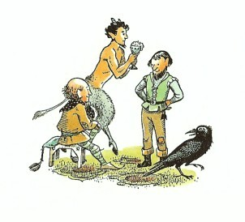
「ところで、姉ぎみ、」と王はスーザン女王（シャスタにキスをした貴婦人）に話しかけていました。「どうお思いですか？わたしたちは、この都にまる三週間おります。あなたをしたうあの黒い顔のラバダシ王子と結婚なさるのか、なさらぬのか。おこころはまだきりませんか。」
貴婦人は頭を横にふりました。「わたしは、いやです。たとえタシバーンじゅうの宝石をやるといわれたとて。」と女王はこたえました。（「おやおや、」とシャスタは思いました。「この人たちは、王や女王だけど、ふたりはきょうだいで、結婚した仲じゃないんだな。」）
「じつをいえば、姉ぎみ、」と王。「姉ぎみが、あの王子と結婚されるようなら、姉ぎみをさほどおしたいできなくなるところでした。では、申しますが、ティスロックの大使が、このの結婚のことで、はじめてナルニアへきた時も、その後、王子がケア・パラベルへわれらの客としてみえた時も、あなたが、王子に対する心からなるこよなき好意をしめされたことが、わたしにはふしぎ千万でしたよ。」
「エドマンド、あれはわたしがおろかだったせいです。ゆるしてくださいね。」とスーザン女王。「それにしても、ナルニアにて、われらとともにすごされたときの王子と、ここタシバーンでのふるまいとでは、まるでちがいます。たとえば、一の王の兄ぎみが王子のためにもよおされたあの盛大な馬上試合や槍の試合で、王子の見せたすばらしい早わざといい、それに、われらとすごされた七日の間の、おだやかな礼儀正しいふるまいといい、みなも知ってのとおりでした。ところが、ごじぶじんのこの都では、別の顔をお見せになりましたね。」
「ああ、」とカラスが、一声鳴きました。「むかしのことわざにいいますよ。『クマの本性を知るには、まずその穴をのぞけ』とね。」
「ほんとにそのとおりだ。黄足のぬし、」と小人のひとりがいいました。「こんなことわざもあるぞ。『いっしょにくらせば、わたしがわかる』とね。」
「そのとおりだ。」と王。「いまこそ、あの王子がどういう人間かわかった。つまり、この上なく高慢で、残忍で、ぜいたくで、無慈悲で、わがままな暴君なのだ。」
「では、アスランの名にかけて、」とスーザンはいいました。「今日すぐにも、タシバーンを離れましょう。」
「それが、ちょっと、やっかいですぞ、姉ぎみ。」とエドマンドがいいました。「というのは、この二、三日、いや、それよりもっと前から、わたしの心にそだってまいった考えをあらいざらいお話しましょう。ベリダン、戸口へまいって、だれかぬすみぎきをしておらぬか、どうかをたしかめてまいれ。しかとよいな。では、申しましょう。このことは、われらの間の秘密にしておかねばなりませんから。」
みんな、きゅうに真剣な顔つきになりました。スーザン女王は、とびあがって弟王の方へかけよりました。「おお、エドマンド、」と女王は叫びました。「どうしたのです？あなたの顔に、おそろしいものがうかがえますが......。」
５ コーリン王子
「わが愛する姉ぎみ、こよなくすぐれたもう姫よ、」とエドマンド王はいいました。「いまこそ、あなたの勇気をみせていただかなければなりません。かく申すは、まったくのところ、われらは少なからぬ危険にさらされておるからなのです。」
「してそれは何事です、エドマンド？」と女王がたずねました。
「それはかかるしだいです。」とエドマンド。「われらがタシバーンを出ていくのは、決してやさしいこととは思えません。王子があなたに望みをかけていたときには、われらはたいせつなお客でした。しかし、あなたにきっぱりとことわられれば、もはやわれらは、とらわれの身となることは、ライオンのたてがみにかけて、受けあいます。」
小人のひとりは、ひゅーと低く口笛をならしました。
「との、わたしが申しあげたとおりです。陛下に申しあげたとおりです。」と、カラスの黄足のぬしがいいました。「入るはやすく、出ずるはかたしと、エビとりかごのなかでエビが申したではありませんか？」
「わたしは、今朝、王子といっしょでしたが、」とエドマンドがことばをつづけました。「王子は、いままで何事も思いどおりにならなかったことがほとんどなかったのです（かわいそうなことですが）。それが、あなたにながながと待たされ、返事もにえ切らぬところから、ひどくいらだっております。今朝、王子は、あなたのお心が知りたいと、強くつめよられた。わたしは、王子の望みを少しでもくじこうというつもりもあって、女心の気まぐれをたねに、かるい冗談をまじえて話し、王子の願いははたされまいとほのめかしました。王子は、だんだん怒りだして、険悪になりました。話すことばつきは相かわらずいんぎんさをよそおっていましたが、あきらかに、おどかしがこもっておりました。」
「そのとおりです。」とタムナス。「昨夜、わたしが総理大臣と食事をしたときもそうでしたよ。総理大臣は、わたしに、タシバーンが気にいったかとたずねました。そこで、わたしは（まさか、石ころにいたるまできらいだとはいえませんし、さりとてうそもつけませんから）、こう申しました。夏のさかりも近づいたいま、わたしの心は、ナルニアの涼しい森や露のおりた丘の斜面がなつかしいのです、とな。総理大臣は、にやりと笑っていいましたよ。あちらで、ふたたびひとおどりなさりたいなら、かくべつのことはござらぬぞ、ヤギ足どの。われらの王子殿下に、花嫁さえいただければ、ひきかえにいつでも、ここを離れられますぞ、とね。」
「それでは、王子が、なにがなんでもこのわたしを妻にしようということね？」とスーザンは声をあげました。
「それをおそれているのです、スーザン。」とエドマンド。「妻か、どれいか......いずれが不幸であろう。」
「しかし、どうしてそのようなことができましょうぞ。ティスロックの王家は、兄ぎみの一の王が、さような無法もだまってとおると思っているのか？」
「陛下、」とベリダンが王にいいました。「かれらとて、それほど血まよったことはいたしますまい。ナルニアには、刀も槍もなかろうと考えましょうか？」
「だがいかんながら、」とエドマンド。「わたしの想像では、ティスロック家は、ナルニアをさほどに恐れてはおるまい。われらの国は小さい。大国のそばにある小さな国は、すべて、大国の領主たちにとって目ざわりなものだ。領主どもは、その小国を消し去るか、のみこむかしたくなるものだ。ティスロックが、はじめて、王子をケア・パラベルに、あなたの求婚者としておとずれることをゆるしたのは、ことによると、われらをせめる機会をうかがっていただけなのかもしれぬ。おそらく、ナルニアを、アーケン国ともども、ひとのみにしてしまうことこそ、かれの望みであろうぞ。」
「やらしてみたらいいでしょう。」と、もうひとりの小人がいいました。「わたしたちは、海の戦いでは負けはいたしません。もし、陸からせめてこようとすれば、砂漠を横ぎらなければなりませんよ。」
「まさに、そのとおり。」とエドマンド。「しかし、砂漠が、はたしてたしかな守りとなってくれるだろうか？どう思う、黄足のぬし？」
「わたしは、あの砂漠を、よく知っております。」とカラス。「何しろ、若いころは、縦横無尽にその上を飛びまわっておりましたのですからね。」（この時、たしかにシャスタの耳が、ぴくりと動いたようでした）。「このことだけはたしかです。つまり、もしもティスロックが、大オアシスの方からまわってくるとすれば、ぜったいに大軍をひきいてアーケン国にはいることはできません。と申しますのは、行軍第一日の暮れかたに、オアシスへつくことはできても、そこの泉の水は、おおぜいの兵士やつれてきたけものたちのかわきをみたすほどゆかたではないのです。けれど、もう一つ、べつの道がございます。」
シャスタは、じっとして、ますます注意深く耳をかたむけました。
「その道を見つけようとするには、」とカラス。「大むかしの王たちの墓から出発しなければなりません。そして、二つ根山の二つの頂きが、いつも、真正面に見えるように、北西へむかって進みます。そのようにして、馬でまる一日かそこらで、岩だらけの峡谷の入口にたどりつきますが、その谷間はとてもせまいので、そのそばまで何度きてみても、そこに谷があるのに気づかないほどです。この峡谷の底を見おろしても、草もなく、水もなく、何も目をよろこばすものは見えません。でも、ずっとおくまではいっていくと、やがて川に出て、その流れにそって、アーケン国までいきつけるのです。」
「して、カロールメンの者たちは、この西の方の道を知っていようか？」と女王。
「かたがた、」とエドマンド。「このような長話がなんの役にたとう。もし、ナルニアとカロールメンが戦わば、いずれが勝つかを論じていたのではなかったはずだ。われらは、女王の名誉を守り、そしてわれら自身もこの悪魔の都からぬけ出さんためには、いかなるてだてがあるかを論じていたはずだ。たとえ、わが兄ぎみの一の王ピーターが、ティスロックをいくたび打ちまかそうとしても、そのとおのむかしにわれらの首がとび、女王陛下も、カロールメンの王子の妻に、いや、それよりも、どれいになりはてていたのでは、なんの益があろう。」
「王よ、わたしたちには、武器がございますぞ。」とはじめの小人。「それに、このやしきは、敵を防ぐのに、けっこうつごうよくできております。」
「戦うとならば、」と王。「われらはおのおの、よせくる敵を相手にたやすく討ち死にするわけがない。女王を得んとするには、まず、われらの屍を乗りこえずばなるまい。しかし、われらがいかに戦おうとも、とどのつまりは袋のネズミというものだ。」
「おおせのとおりで。」とカラスがしわがれ声でいいました。「まことに、やかたにこもって討ち死にするわれらの最後は、りっぱな物語をかずかず残しましょうが、だからといって、それがなんになりましょう。はじめに二、三度おいはらわれると、敵は、焼き打ちをしかけてくるのが常道でございます。」
「わたしのために、こんなことになって、」とスーザンは、わっと泣き出しました。「ああ、ケア・パラベルをはなれさえしなければよかったのです。カロールメンから大使たちがくるまでは、どれほど楽しかったことでしょう。モグラたちは、果樹園をつくってくれていましたし......ああ......、ああ。」女王は、顔を手でおおって泣きじゃくりました。
「元気を出しなさい、スー、元気を出して、」とエドマンド。「よろしいか、姉ぎみ、ぜひ──おや、タムナスどの、どうなさったのか？」この時フォーンのタムナスは、頭をささえるように両手で二つの角をおさえ、おまけに頭がいたむようにからだをゆすって身もだえしていました。
「わたしに、話しかけないで、話しかけないで。」とタムナス。「今、考えているところです。息もできないほど、じっと考えているんです。待って、待って。」
しばらくはとうわくして、みんなしんとしてしまいましたが、やがてフォーンは、顔をあげ、深く息を吸って、額の汗をふくと、「ただ一つの難点は、どうやって、食料も用意して、だれにも見られず、とがめられずに、われらの船までいきつくかだが......」
「そうとも、」とひとりの小人が、皮肉をこめて、「ちょうど、乞食が馬に乗りたいが、ただ一つ難点は馬をもっていない、というのと同じさ。」
「まあ、まあ、待って、」とタムナスが、じれったそうに、「いまなによりかんじんなのは、今日、船までいって、荷物を運ぶうまい口実なのさ。」
「それで？」とエドマンド王は、けげんそうにいいました。
「では、こうしましょう、」とフォーンのタムナス。「明日の晩、わたしたちの大帆船、かがける鏡の海号の甲板で開かれる大宴会に、両陛下が王子を招待されることにしては、いかがなものでしょうか？王子へのことづては、女王陛下の結婚の約束めいたことさえ書かなければ、ことばづかいを、できるだけやさしくなさるとよい。そして、女王の気もちがいくらかかたむいてきたのではないかと、王子に望みをもたせるようにするのです。」
「それは、まことにすぐれた考えですぞ、との。」カラスがなきたてました。
「さすれば、」と、タムナスのことばには熱がこもってきました。わたしたちが、お客をまねく支度をするために、一日じゅう、船にいっているのだろうと、だれもが思うでしょう。そして、なかまのだれかれを市場へつかわして、ありたけのお金で、果物屋や菓子屋や酒屋で買いものをして、ほんとうに宴会の用意をしているように見せかけるのです。魔術師や手品師、踊り子たちや笛吹きたちにも、明日の晩は、船に乗るようにいいつけさせましょう。」
「なるほど、なるほど。」とエドマンド王は、手をさすりながらいいました。
「それから、今夜わたしたちは全部、船に乗りこみます。そして、すっかり暗くなりましたら──」とタムナス。
「帆を上げて、こぎかた用意！ か。」と王。
「というわけで、首尾よく海へ！」と、タムナスは、跳ねて踊り出しながら叫びました。
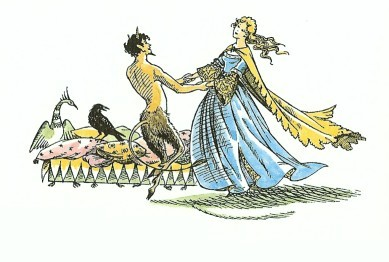
「そして、へさきを北にむけ、」とはじめの、小人。
「船はひたすら、ふるさとへ！ ナルニアさして、北をめざして！ばんざい！」と、もうひとりの小人。
「翌朝、王子が目をさまし、大事な鳥が逃げたわい！」と、膝をたたいて、ベリダン。
「ああ、タムナスどの、われらのタムナスどの。」と女王は、踊っているタムナスの手をとり、いっしになってからだをゆすりながらいいました。「あなたのおかげで、みんなが助かりました。」
「王子が追いかけてくるでしょう。」と、シャスタのまだ名を知らない、ひとりの貴族がいいました。
「その心配はご無用。」とエドマンド。「わたしは、川に浮かんでいる船を全部見たが、大型の戦船は一つもなく、船足のはやいガレー船も見えなかった。追うなら、追ってみよ。かがやける鏡の海号は、王子がどんな船であとを追わせようと、みんな沈めてみせよう──たとえ、うまく追いついたとしても、だ。」
「陛下、」とカラスがいいました。「こうして、わたしどもがこれから七日間会議を開いても、フォーンが考えたこの計画よりもよい考えは出てきますまい。さあ、今こそ、わたしども鳥仲間でいう、卵を生むまえに巣を作れ、です。つまり、まずせっせと食べる物を食べて、すぐさま仕事にとりかかりましょう。」
このひとことで、みんな立ちあがり、扉が開かれると、王と女王を通すために、貴族や動物たちがわきへ並びました。シャスタは、どうしたらいいかとまよっていますと、タムナスどのがいいました。「そこに横になっておいでなさい、殿下。あなたには、後ほどすぐに、ごちそうを運んできてさしあげます。わたしたちの船に乗る用意がすっかりととのうまでは、動いていただくことはありません。」シャスタは、そこで、また枕に頭をおろしましたが、やがて部屋にはだれもいなくなりました。
「これは、えらいこにとなったぞ。」とシャスタは思いました。このナルニア人たちに、一切をうちあけることも、助けを求めることも、シャスタの頭には、とても浮かびませんでした。アルシーシュのような、がんこなけちんぼに育てられたシャスタは、おとなに、必要なことのほかは、ぜったいに何もいわないくせがついていました。どうせ、何をしようとしても、おとなたちは、それをぶちこわすか、じゃまするか、どっちかだと思ったからです。それに、もし、ナルニアの王が、二頭の馬は、ものいうナルニアのけだものだといって、ひいきにしてくれたとしても、カロールメンのおとめアラビスを目のかたきにして、どれいに売りとばすか、せいぜいアラビスの父親のもとへ送りかえすにちがいない、と思いました。シャスタは、じぶんのことについては、「ともかく、今のところは、ぼくがコーリン王子ではないということはだまっていよう。」と思いました。「ぼくはみんなの計画をすっかりきいてしまった。もしぼくがみんなの仲間じゃないということがわかったら、きっと、ぼくを生かしたまま、このやしきから出さないにちがいない。あの人たちは、ぼくが裏切って、ティスロックにつげ口をすると思うだろう。だからきっと、ぼくを殺す。それに、もし、本物のコーリンが帰ってきて、ほんとうのことがわかったら、それこそ、ぼくは、かならず殺されるな。」
そうです。シャスタは、しんに気高い、自由な身に生まれた人たちが、どうふるまうか、まったく知らなかったのです。
「さあ、どうしたら、いいだろう？ どうしたら？」シャスタは、ひとりで思いつづけました。「おお、あのヤギのような小さなのが、またやってきたぞ。」
まるで踊るような足つきで、フォーンが手にほとんどじぶんと同じくらいの大きさの盆をもって、小走りにやってきました。そして、その盆をシャスタのソファのわきの象眼細工のテーブルの上におくと、じゅうたんを敷いた床の上に、ヤギ足を組んですわりました。
「さあ、王子さま、たんとめしあがれ。これは、タシバーンでのさいごのお食事となりますよ。」
それは、カロールメンふうのすばらしい食事でした。みなさんには、それがお気にめすかどうかはわかりませんが、シャスタは、とても気にいりました。エビとサラダ、アーモンドとショウロをつめたシギ料理、鳥のもつと米とほしブドウと木の実をあしらった、手のこんだ料理があり、それに冷やしメロンとスグリのクリームとクワの実のクリーム、それからおいしい氷菓子のあらゆる種類が、ずらっと並んでいるのです。ほんとうは黄色いくせに、「白」とよばれているブドウ酒まで、一びんついています。
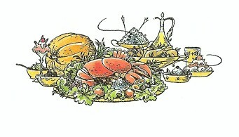
シャスタが、まだ暑気あたりで目がまわっているとばかり思っている親切な小さいフォーンは、ふるさとへ帰ってからの楽しみのあれこれや、王子のやさしい年をとった父であるアーケン国のリューン王のことや、王子の住んでいる山の南の斜面にある小さなお城のことなどを、シャスタが食事をしている間じゅう、話してきかせました。「それから、これは忘れてはいけませんよ。」とタムナスはいいました。「この次のあなたの誕生日には、はじめて着るよろい一そろいと、はじめて乗る軍馬一頭が約束されていますよ。そして、殿下は、馬に乗って槍を使うけいこをはじめるのです。そうして、すべてがとどこおりなくいけば、二、三年うちには、ピーター王おんみずから、あなたをケア・パラベルの騎士にとり立てようと、父ぎみにお約束なさいました。そうなれば、ナルニアとアーケン国との間には、山々の峠を越えて、当分ゆききがはげしくなるでしょう。ああ、それから、夏祭りには一週間、わたしといっしょにすごすという約束を、お忘れになりますまいね。森では、かがり火をたき、フォーンや木の精のおとめドリアードたちが、森のまんなかで、ひと晩じゅう踊りあかすのです。それに、それそれ──もしかすると、アスランに会えるんですよ！」
食事が終わると、フォーンは、シャスタに、そのままじっとしているようにといいました。
「それから、少しおやすみになるのも悪くありませんよ。」とフォーンは、つけ加えました。「船に乗るまぎわに、お起こししましょう。さあ、いよいよ、帰りです。ナルニアさして、北をめざして！」
シャスタは、夕食がとてもおいしく、それに、タムナスの話してくれたことが、あまり楽しかったので、タムナスが出ていって、ひとりになってみると、がらりと考えが変わってしまいました。今となっては、シャスタは、コーリン王子が、まにあわなくなるまで帰ってこなければよい、そうすれば、船でナルニアへ連れていってもらえるのだからと、それだけを願うようになりました。ほんもののコーリン王子が、タシバーンに残されたら、どういうことになるかというところまでは、考えなかったようです。墓地でシャスタを待つことになっているアラビスとブレーのことは、少し気がかりでした。けれどそれも、じぶんにこういいきかせました。「だって、ぼくにはどうしようもないじゃないか。」そして、「なんといっても、アラビスは、ぼくなんかといっしょにいく身分じゃないと思っているんだ。だからひとりでいく方が、ずっとうれしいのさ。」それと、もう一つ、ナルニアへ行くのに海からの方が、あくせく砂漠を歩いていくよりも、ずっとすてきだと思わずにいられませんでした。
ところで、あなただったらいかがです？ 朝早くから起きでて、長い道のりを歩き、つぎつぎとたまげるような事件にでっくわし、とびきりのごちそうを食べ、とても涼しい部屋のソファに横になって、音といえば、大きくあけひろげた窓からハチが一ぴきとびこんで、ぶんぶんいっているだけという時に、あれこれ考えているとしたら、きっとあなたもそうなるように、シャスタも、ぐっすり眠ってしまいました。
がちゃん、という大きな音で、シャスタは目をさましました。シャスタは、ソファからとびあがって、目を大きくあけました。部屋をちょっと見まわしただけで、四、五時間は眠ったにちがいないとわかりました。光やかげのようすが変わっていました。そして、その大きな音の起こったわけもわかりました。窓じきいの上に置いてあった、値うちのある磁器の花びんが、木っぱみじんに床にくだけとんでいたのです。けれどもシャスタには、そんなものはたいして気になりませんでした。シャスタの目にとまったものは、外がわから窓じきいをつかんでいる、二つの手でした。その手のつかみかたがだんだん強くなって（指の節々が白くなってきて）、やがて、頭が見え、つぎに肩が見えてきました。そしてまもなくそこにあらわれたのは、シャスタと同じ年ごろでの男の子で、窓じきいをまたいで腰をかけると、片足を部屋の内がわでぶらつかせているのでした。
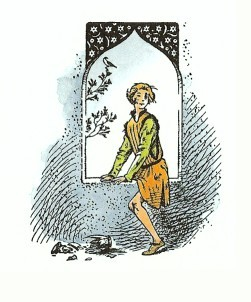
シャスタは、じぶんの顔を、鏡にうつして見たことは、これまで一度もありません。あったとしても、その少年が（普通の時だったら）ほとんど生きうつしといっていいほどシャスタに似ていることに、気がつかなかったかもしれません。この時その少年の顔は、とてもだれかに似ているといえるものではありません。というのは、この少年の目のまわりには、めったに見られないくらいみごとな黒あざがあり、歯が一本かけていて、その着ている服は（着たばかりの時は、さぞかし、すばらしかったろうと思われます）、ぼろぼろでどろだらけで、顔にも、血と泥がついていました。
「きみは、だれだ？」と、その少年は小声でそっといいました。
「あなたは、コーリン王子ですか？」とシャスタがいいました。
「もちろん、そうさ。だけど、きみこそ、だれだ？」と少年。
「ぼく、だれでもないんです。とくべつ、だれそれってもんじゃありません。」と、シャスタ。「エドマンド王が、通りで、あなたとまちがえてつかまえたんです。きっと、ぼくたち、おたがいに似てるんですね。あなたのはいってきたところから、ぼく、出ていけますか？」
「うん、よし。のぼりかたさえうまければできるよ。」とコーリンがいいました。「だけど、どうしてそんなに急ぐのさ。ねえ、ぼくたち、おたがいにまちがえられたのなら、それで何かいたずらができそうじゃないか。」
「いいえ、とんでもない。」とシャスタがいいました。「ぼくたちは、すぐさまいれかわりにならなければなりません。もし、タムナスさんがもどってきて、ふたりともここにいるのを見つけたら、たいへんなことになる。ぼくは、あなたであるようなふりをしていたんですから。それに、あなたがたは、今夜、出発なんですよ、ひとに知らせずにね。ところで、いままでどこへいってたんです？」
「通りにいた男の子が、スーザン女王のことで、ひどい悪口をいってたんだ。」とコーリン王子。「だから、そいつをなぐりたおしてやった。そしたら、そいつは泣きながら家の中へかけこんでいって、かわりに、そいつの上の兄が出てきた。だから、そいつもなぐりたおしてやった。すると、ふたりが追いかけてきて、てんでに槍をもった、年ぱいの三人の男たちにぶつかったのさ。三人の男は、番兵だったんだ。ぼくは、その番兵とやり合ったけれど、とうとうなぐりたおされてしまったよ。もう、その時は、くらくなっていたんだ。番兵たちは、ぼくをどこかへとじこめにいこうとした。だからぼくは、お酒を一杯のまないかときいてみた。すると、番兵たちは、それもよかろうというんだ。そこでぼくは、やつらを酒屋へつれていって、酒をのませた。番兵たちは、すわりこんで、酔っぱらったすえ、寝てしまったのさ。ぼくは、逃げ出すのはいまのうちだ思って、そっと、出てきたら、はじめの男の子が──こんなやっかいごとのたねをまいたやつがまだ、そのへんにぶらついてたんだ。そこでぼくは、もう一度なぐりたおしてやった。それから、樋をよじのぼってどこかの家の屋根へ出て、屋根の上で、夜が明けるまでそっと横になっていた。そのあとは、ずっと、ここへ帰る道をさがしていたんだ。ねえ、そこに何か飲むものないか？」
「ありません。ぼくが飲んじゃった。」とシャスタ。「さあ、それじゃ、ここにどうやってはいってきたのか、教えてください。一分もむだにできないんです。あなたは、ソファに横になってらっしゃい。ずっと、そうしていたように......いや、それじゃ、だめだ。その傷と、目のまわりの黒あざでは、それもだめだ。ぼくが無事にここから出たら、みなさんに、ほんとうのことをおっしゃるほかありませんね。」
「おい、ほんとのこと以外に、ぼくが何をいうと思うんだ？」と、王子は、おこったような顔で、いいました。「それに、いったい、きみはだれだ？」
「時間がありません。」とシャスタは、小声で、せきこんでいいました。「ぼくはナルニア人です。きっとそうです。ともかくどこか北方の者でしょう。けれど、ずっといままで、カロールメンで育てられたのです。そして、いま逃げていくところです。砂漠をこえて、ブレーというものいう馬といっしょにね。だから、さあ急いで！どうやったら出られるの？」
「いいかい。」とコーリン。「この窓から、ベランダの屋根へおりるんだ。だけど、爪先でそっとやれよ。でないと、だれかにきかれるよ。それから、左手にずっといくと、あの塀の上にあがれるよ、よじのぼるのが少しでも得意ならね。そして、その塀の上を角のところまでいったら、塀の外にあるごみの山の上へとびおりるんだ。それでおもてさ。」「ありがとう。」とシャスタは、もう、窓じきいにまたがりながらいいました。ふたりの少年たちは、たがいに顔を見つめましたが、突然、ふたりは友だちだと感じ合いました。
「さよなら、」とコーリン。「元気でね。うまく無事で逃げ出せるようにね。」
「さよなら、」とシャスタ。「あなたも、たいへんな冒険をやりましたね。」
「きみとはくらべものにならないさ。」と王子がいいました。「さあ、とびおりろ。そっとだよ。」そして、下へシャスタに、声をかけました。「アーケン国で会おう。ぼくの父ぎみリューン王のところへいって、ぼくの友だちだといえ。気をつけて！だれかやってきたぞ。」
６ 墓をさまようシャスタ
シャスタは、屋根の上を爪先でそっとかけていきました。屋根は、シャスタの素足に熱く感じられました。屋根のはずれまでくると、ほんの二、三秒で、塀によじのぼり、そのはじまでくると、その下には、むっとにおう、せまいとおりが見え、コーリンのいったとおり、塀の外がわにつみ上げたごみの山がありました。シャスタは、とびおりる前に、すばやくあたりに目をくばって、じぶんがどのへんにいるのかを見きわめました。どうやら、シャスタのいる位置は、タシバーンの都にきずかれた島の高台のてっぺんのようでした。目の前に、平屋根の下にまた平屋根と、都の北がわの城壁の塔や胸壁まで、すべてが斜面をなしてつづいています。そのさきに川があり、川のむこうには、庭園のつづくせまい斜面があります。しかし、そのまたむこうには、シャスタが見たこともないもの、黄ばんだ灰色のひろがりが、ないだ海のように平らに、何十キロにもわたってつづいています。そのはるかさきの方に、ごつごつしたばかりに大きくて青いものが、そのふちを鋸の歯のようにぎざぎざさせ、なかには先を白く光らせたものもあります。「砂漠だ！山脈だ！」とシャスタは思いました。
シャスタは、ごみの山へとびおりると、くだり坂のせまい通りをどしどしかけおりました。まもなく人通りの多いひろいとおりに出ました。はだしでかけていく、ぼろを着た男の子なんかに、目をくれるものはありませんでしたが、それでもシャスタは、心配で落ち着かず、町角をまわって、やっと目の前に城門が見えたときは、ほっとしました。シャスタは、同じく町から出ていこうとするおおぜいの人に、ちょっとおされたり、つかれたりしました。城門をすぎて橋の上までくると、通る人かずもへって、もう人ごみというよりはちらほらというところでした。ここまでくると、橋の両がわには澄んだ水が流れていて、タシバーンの町のにおいも暑さもさわぎもなく、気もちがよいほどせいせいしました。
橋を渡りきると、道をいく人群れも、次第に散っていきました。いずれも、川岸にそって左か右へいくようでした。シャスタは、庭園の間をぬけて、あまり人の通ったことのなさそうな道をまっすぐに進みました。しばらくいくと、もうひとりぼっちで、さらに進んでいくと、坂のてっぺんに出ました。シャスタは、立ちどまって、目を見はりました。そこは、まるで、この世のはてにきたようでした。草のみどりは、シャスタの目の前、一、二メートルのところでにわかにとだえ、砂地がはじまってつづいていました。砂地は、砂浜のように平らにどこまでもつづいていますが、波をかぶらないので、砂浜のようになめらかではありません。前方の山脈は、さっき見たときよりも遠くにかすんで見えます。そこから五分ほど左手に歩いていくと、やれやれ、ありがたや、ブレーが話してきかせてくれた墓にちがいないと思われるものが見えました。少し細めながら、巨大なハチの巣の形の、くずれかけた大きな石のかたまりです。ちょうど夕日がそのままうしろに沈もうとするところで、墓のむれは、黒々としてぞっとするようでした。
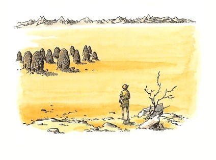
シャスタは、西にむいて、墓の方へとっとと歩きました。夕日がまともに顔を照らすので、ほとんど何も見えないほどですが、どこかに仲間がいやしないかと一生けんめい探しまわらずにはいられませんでした。「だけど、どうせみんなは、いちばん遠くの墓のむこうがわにまわっているにちがいないや。こっちがわは町からまるみえだものな。」とシャスタは考えました。
墓は全部で十二ほどあり、その一つ一つに、弓形をした低い入口があり、ぽっかりと何も見えない暗闇を開いています。どれもみな、てんでばらばらに建っているので、こっちをめぐり、あっちをめぐりして、どの墓のどのまわりも見おとしなくたしかめるのには、ずいぶん時間がかかりました。シャスタは、こうやって一つも残さず見てまわりましたが、どこにもだれも見つかりませんでした。
砂漠のさかいになっているそのあたりは、おそろしく静かです。はや、夕日も沈んでいました。
突然、うしろの方から、すさまじい音がきこえてきました。シャスタの心臓はとびあがり、シャスタはやっと舌をかんで、叫び声をおしころしました。が、まもなくその音の正体がわかりました。タシバーンの城門が閉まるのを知らせる角笛の音だったのです。「ばかばかしい、この弱虫！」とシャスタはじぶんにいいきかせました。「なんだい、今朝きいたのと同じ音じゃないか。」そうはいうものの、朝、仲間たちいっしょに、門の中にはいれるときの音と、日がくれてただひとり、門から閉め出されてきく音とでは、たいへんなちがいがあります。そして、城門がしまったいまとはなっては、今夜ほかの仲間と会える望みは、もはやなくなったと、シャスタはさとりました。「みんなは、今晩、タシバーンの町から出られなくなったかな？」とシャスタは考えました。「それとも、ぼくをおいて、先へいってしまったかもしれない。アラビスなら、しそうなことだ。だけど、ブレーは、そんなことしない。ぜったいにしないさ......でも、どうかな？」
シャスタは、アラビスがどんな人かについて、またしてもまるで考えちがいをしていました。アラビスは、誇りが高く、かなり気むずかしいところもありますが、はがねのように誠実で、すききらいにかかわりなく、ぜったいに仲間をおき去りにできないたちなのです。
さてシャスタは、たったひとりで夜をすごさなければならないことをさると（あたりは刻々と暗くなってきます）、この場所がますますいやになってきました。これらのおしだまっている巨大な石のかたまりには、何か不気味なものが感じられました。シャスタは、墓をあばいて死肉をくうという鬼のことを考えまいとして、ずいぶんむりをしていましたが、どうしても考えずにはいられなくなりました。
「あっ、ああっ、助けて！」シャスタはふいに悲鳴をあげました。いきなり何かが足にさわったのです。シャスタのように、こんな場所で、しかもすでにおびえている時でなくてさえ、うしろから何かがやってきてさわったとしたら、だれだって声をあげずにはいられますまい。とにかく、シャスタは、すっかりおびえきって、かけ出すこともできません。うしろに何がいるか、ふりむいてたしかめもせずに、むかしの王たちの墓を、ぐるぐる逃げまわるほど、ばかげたことはないでしょう。シャスタは、そんなことはしないで、この場にのぞんでもっとも賢いやりかたをしました。思いきってふり返って見ました。そして、心の底からほっとしたのです。シャスタにさわったのは、ただの一ぴきのネコでした。
あたりがあまり暗いので、そのネコが大きくて、いかめしそうに見えるほかは、よく見わけられません。ネコは、長い長い年月を、その墓場の中で、ただひとり暮らしてきたかのように見えました。その目をみると、ひとにはいえない秘密を知っているように思われました。
「ネコや、ネコや、」とシャスタは呼びかけました。「おまえは、ものいうネコじゃないだろうね。」
ネコは、ますます、じいっとシャスタを見つめました。それから、その場を立ち去ろうとしました。もちろん、シャスタもそのあとについてきました。先をいくネコは、墓場をまっすぐ通りぬけて、砂漠のがわに出ました。そこまでくると、ネコは尾を足にまきつけ、前足をすっくと立ててすわり、まるで、敵を見張るように、砂漠の方へ、そしてナルニアの方へ、北の方へ、じいっとその顔をすえました。シャスタは、ネコの方に背をむけ、顔は墓の方にむけて、ネコのそばに横になりました。だれでも、おくびょうになっているときは、危険のある方に顔をむけ、暖かいもの、信頼できるものを背にするにこしたことはないからです。砂の上に寝るのは気もちいいものではありませんが、もう何週間も地面の上に寝てきたシャスタにとっては、ほとんど気になりません。たちまちのうちに、シャスタはぐっすり眠ってしまいましたが、夢の中でも、ブレーやアラビスやフインがどうなったのかと思いつづけました。
突然、きいたこともないような音に、シャスタは目をさましました。「きっと、夢でうなされたのかもしれない。」とシャスタは思いました。と同時に、背中のネコがいなくなっているのに気がつき、いてくれればいいのにと思いました。シャスタは、しかし、目をあけようともせずに、そのままじっと、横になっていました。もし、起きあがって、墓やあたりのさびしさを見まわしたら、もっとこわくなることがわかっていたからです。ちょうど、わたしたちが、頭から布をかぶって、じっと横になっている、あの気もちです。けれども、またしても、砂漠の方から、荒々しい、つんざくような叫びがきこえてきました。こうなっては、シャスタも、目をあけて、起きあがらないわけにはいかなくなりました。
月がこうこうと照っていました。墓は──はじめにシャスタが考えていたよりずっと大きく、ずっと近くに──月の光をうけてあわく見えていました。まったく、墓の一つ一つが、頭ごと灰色の長衣をかぶって、そのすそを引きずっている巨大な人に見えて、身の毛がよだつようでした。見知らぬ場所で、ただひとり夜をすごすのに、こんなものがそばにあって気もちのよいはずがありません。音は、しかし、それとは反対の、砂漠の方からきこえてくるのです。シャスタは、墓に背をむけないわけにはいかなくなり（あまりいい気もちではないのですが）砂漠の表面にじっと目をこらしました。荒々しい叫びが、またきこえてきました。
「また、ライオンじゃなければいいけれど。」とシャスタは思いました。その叫び声は、たしかに、シャスタがアラビスとフインに出会った夜にきいた、あのライオンのほえる声とは少しちがっていて、実のところ、ジャッカルのほえる声だったのです。しかし、もちろん、シャスタの知るところではありません。知っていたとしても、ジャッカルでは、あまり会いたいものではないでしょう。
その叫び声は、何度もくり返してひびきわたりました。「なんだかわからないけれど、一ぴきじゃなさそうだな。」とシャスタは思いました。「おまけに、こっちへやってくるようだ。」
こんな時、シャスタがほんとうに賢い少年だったら、墓を通って、野獣たちがやってきそうもない、人家のある川の近くまでもどったでしょう。しかし、そうするには、死肉をくう鬼がいる（とシャスタが思っている）ところを通るのです。墓場を通ってひき返すには、あの墓のまっ暗な入口をいくつも通らなければなりません。そこから何がとび出してくるでしょう？おろかなことと思うかもしれませんが、シャスタは、それよりも野獣の方がまだましだと感じました。しかし、叫び声がだんだん近づいてくるにつれて、シャスタは考えなおしました。
シャスタが逃げ出そうとしたちょうどその時、じぶんと砂漠との間に、突然大きなけものがおどり出てきたすがたが眼にうつりました。そのけものは、月を背にしているので、まっ黒に見え、シャスタには、とても大きな毛むくじゃらの頭で、四つ足を使っていったということしかわかりませんでした。そのけものは、急に立ちどまって、砂漠の方に頭をむけて、一声高くほえ、その声は墓の間をひびきわたり、シャスタの足もとの砂をゆるがせましたが、そのようすからして、シャスタのいることには気がついていないようでした。先ほどの野獣たちの叫び声はぴたりととまり、シャスタは何かかけ去っていく足音をきいたように思いました。すると、その大きなけものはむきを変えて、シャスタのようすをうかがいました。
「ライオンだ、ライオンにちがいない。」とシャスタは思いました。「もう、だめだ。どんなにひどくやられるだろう。いっそ、早くやってくれ。死んだら、人間はどうなるんだろう？ああっ！やってきた！」シャスタは、目をつむり、歯をくいしばりました。
しかし、シャスタは、歯でも爪でもなくて、何か暖かいものが、足もとに横たわるのにふれました。シャスタは、目をあけて見て、いいました。「なんだ、思ったほど大きくないじゃないか！まるで半分しかない。いや、思っていたのの四分の一しかない。これじゃあ、ネコでしかないぞ。ぼくは、てっきり、馬ぐらいの大きさだとばかり思っていたのに、夢だったのかな？」
シャスタがほんとうに夢を見ていたかどうかはともかく、いま、足もとに横たわって、目ばたきもしない大きな緑色の目が、シャスタを穴のあくほど見つめているのは、ネコでした。たしかに、これほど大きなネコを見るのははじめてですけれど。
「やあ、ネコさん。」と、シャスタは息をつきながらいいました。「おまえにまた会えてよかったな。ぼく、とても恐ろしい夢を見ていたんだ。」そういって、シャスタは、夜になったばかりの時そうしたように、すぐさま、ネコと背中あわせに、横になりました。ネコのからだのぬくもりが、シャスタのからだじゅうにつたわってきました。
「ぼくは、一生、二度とネコにはいじわるしないぞ。」とシャスタは、半分はネコに、半分はじぶんにいいきかせました。「ぼく、一度いじめたことがあるんだよ。飢え死にしかかった、汚いおいぼれの野良ネコに石を投げたのさ。おい！やめてくれよ。」ネコが、いきなりむきを変えて、シャスタを引っかいたのです。「もうよせったら。ぼくのいったことがわかったわけでもないくせに。」シャスタはそういうと、眠りこんでしまいました。
あくる朝、シャスタが目をさましたときは、ネコはどこかへいってしまい、もう日が高くのぼって、砂は熱くなっていました。のどがひどくかわいたシャスタは、起きあがって、目をこすりました。砂漠はまぶしいほど白く、うしろの方から街のざわめきがきこえていましたが、シャスタのすわっているあたりは、まったく静かでした。太陽の光をさけて、目を少し左の西の方に向けると、砂漠の彼方の山脈が、まるで石を投げたらとどくほど近くにあるように、鋭く、くっきりと見えました。山頂が二つのとんがりに分かれている青々とした高い山にとくに目をとめたシャスタは、あれが二つ根山にちがいないと思いました。「カラスのいってた話だと、あれがぼくたちのめざす方角だ。みんながきたときすぐにちゃんとわかるようにしておこう。」シャスタは、そう考えて、二つ根山を正しく指すように、深いまっすぐな筋を一本、足ではっきりとかきました。
次の仕事は、なんといっても、まず食べ物と飲みものを探すことです。シャスタは、小走りに、墓を通ってひき返し──墓は今はもうなんでもなく見え、あんなに恐ろしく思ったのがおかしいほどです──そして川にそった畑の方へおりていきました。城門が開いてから、もうだいぶ時間もたっているので、早朝の人ごみはもうなくなり、あたりにはわずかな人しかいませんでした。ですから、ブレーのいう「襲撃」をするのも、たいしてむずかしくはありません。庭の塀を乗りこえるというやりかたで、えものは、オレンジが三つ、メロンが一つ、イチジクが一つか二つ、ザクロが一つでした。それから、シャスタは、橋から少し離れた川の土手をおりていって、水を飲みました。川の水があまりきれいでしたから、シャスタは、暑苦しい汚れた服をぬいで、ひと浴びしました。海辺でずっと育ってきたシャスタにとって、泳ぐことは、歩くことと同じでした。水からあがって、草の上に横たわると、川むこうのはなやかさと力強さと繁栄にみちたタシバーンの都を見わたしました。そして、同時に、その都でのいろいろな危険なことも思いだしました。シャスタは、ふと、じぶんが水浴びをしている間に、仲間たちが墓についているかもしれない（そして、ぼくをおいてしまったかもわからない）と気がついて、あわてて服を着ると、ものすごい早さでかけもどったので、もどりついたときには、すっかり暑くなって、のどもかわき、水浴びの気もちよさもけしとんでしまいました。
たったひとりで、何かを待ちわびている日は、たいていそうですが、一日百時間もの長さに思われました。シャスタには、もちろん、考えることがたくさんありましたが、たったひとりですわり、ただ考えているのは、とても退屈なものです。シャスタは、ナルニアの人たちのこと、とりわけ、コーリン王子のことを、くりかえして考えました。ずっとソファに横たわりながら、秘密の計画をすっかりきいてしまったのが、じつはコーリンではなかったと知ったとき、かれらはいったいどうしただろう、と考えました。あんなにいい人たちが、じぶんのことを裏切り者だと思っているかと考えると、とてもやりきれない気もちでした。
太陽が、ゆっくりゆっくり、空の真上までのぼりきって、また、ゆっくりゆっくりと西の方へくだりはじめ、それでもだれもこないし、何ごとも起こらないので、シャスタは、ますます心配になってきました。それに、いまになって気がついたことなのですが、墓で待ち合わせようと決めたとき、どのくらい待つかということは、だれも口にしなかったのです。いくらなんでも、これから一生ここで待っているわけにはいきません。まもなく、ふたたび暗くなることでしょうが、また昨夜のような夜をすごさなければならないかもしれません。いろいろな計画が、シャスタの頭にうかび、そして消えていきました。どの計画も、みんなみじめなものばかりでしたが、結局その中でも、とりわけまずい計画におちついてきました。ともかく暗くなるまで待って、それから川へもどり、運べるかぎりのたくさんのメロンをとってきて、今朝砂の上に引いた線をたよりに方角を定め、二つ根山さして、ひとりで出発しようと決めたのです。ほんとうに途方もない考えで、もし、シャスタが、みなさんぐらいたくさん、砂漠旅行の本を読んでいたとしたら、とてもこんなことは考えつきはしなかったでしょう。でも、シャスタは、本を読んだことなど、一度だってなかったのですもの。
ところが、日が沈む前に、また出来事がおこりました。ある墓のかげにすわっていたシャスタが、ふと顔をあげたとき、馬が二頭、こちらにむかってやってくるではありませんか。シャスタの心臓はとびあがらんばかりでした。ブレーとフインなのです。けれど、次の瞬間、シャスタの心臓は、ふたたびしぼんでしまいました。アラビスが見当たらないのです。馬たちは、ひとりの武装をした見知らぬ男につれられていました。かなりの家柄につかわれているどれいのかしららしく、そうとうによい身支度をしています。ブレーもフインも、もう荷馬のかっこうではなく、くらくもくつわもつけています。これは、いったいどうしたことなのでしょう？
「これには、罠だな。」とシャスタは考えました。「アラビスがだれかにつかまって、拷問にかけられ、何もかも白状してしまったんだ。それで、ぼくがとび出して、ブレーのところに走っていって話しかけたら、ぼくもつかまえてしまうつもりなんだ。それでも、もし、ぼくがそうしなかったら、ぼくが仲間に会うただ一つのチャンスを逃がしてしまうかもしれない。ああ、いったいどういうことになっているのか、それがわかればなあ。」シャスタは、墓のうしろにからだをひそめ、時々のぞき見ながら、どうしたら、いちばん危険が少ないだろうと、思いめぐらしました。
７ タシバーンでのアラビス
タシバーンで起こったこととは、実はこうなのです。シャスタがナルニア人に連れ去られて、ひとことも口をきこうとしない（よく心得た）二頭の馬といっしょにとり残されたアラビスは、その時少しもあわてませんでした。ブレーのはづなをつかんで、そのまま静かに、馬たちをおさえていました。アラビスの心臓は早がねをうって、はげしく鳴っていたのですが、少しも表にあらわしませんでした。ナルニアの貴族たちが、すっかり通りすぎてしまうと、アラビスは、やっと動こうとしましたが、一歩進みだそうとしたとたんに、別の先ぶれ（「なんて人さわがせな連中なんでしょう。」とアラビスは思いました）が叫ぶのがきこえました。「下にーい、下に、タルキーナ・ラサラリーンさまのお通り！」先ぶれが通ると、すぐに、四人の武装をしたどれいと、四人のこしはこびがやってきました。そのこしは、ひらひらする絹のカーテンでかこまれ、銀の鈴をちりんちりんとならし、通りじゅうに香料と花の香りをふりまいていました。こしのうしろには、きれいな服をまとった女のどれいたちがしたがい、そのあとに馬丁や使者や小姓たちがつづいています。ここでアラビスは、最初の失敗をしました。
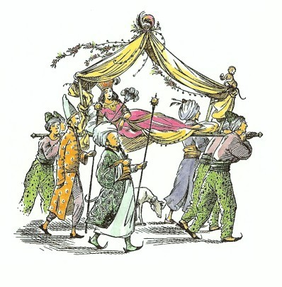
アラビスは、ラサラリーンとは、よく同じやしきですごしたこともあり、およばれの席でいっしょだったこともあるので、まるで学校友だちのようによく知っていました。それで、いまはもう結婚して、そうとうな身分になっているラサラリーンが、どんなようすかを知りたくて、ついつい、顔をあげて見てしまいました。
それが運のつきでした。ふたりの少女の目がぴったり会ったのです。ラサラリーンは、こしの上で身を起こすと、できるかぎりの大声をはりあげました。
「アラビス、いったい、こんなとこで何をしているの？あなたのお父上は......」
さあ、ぐずぐずしてはいられません。アラビスは、すぐさま馬たちを離すと、こしの縁をつかまえて、ラサラリーンのそばまでとびあがり、その耳におこった声でささやきました。
「だまってちょうだい！ わかる？ だまるのよ！わたしをかくしてよ。あなたの家来にそういって......」
「でも、ねえ、」ラサラリーンは、相かわらず大声でいい出しました（ラサラリーンは、じぶんが大勢の人に見られるのを、なんとも思いませんでした。いや、むしろ見られるのがすきなのです）。
「わたしのいうとおりにしてちょうだい。でなければ、二度とあなたとは口をきかないから。」アラビスは、こういって、ラサラリーンをだまらせました。「おねがい、おねがいだから早く、ラス。とても大事なことなの。あなたの家来に、あの二頭の馬を連れていくようにいってちょうだい。こしのカーテンを全部おろして、どこか見つからないところまでいってちょうだい。急いで、ね。」
「わかったわ。」とラサラリーンは、ものぐさそうにいうと、「ちょっと、だれかふたりで、タルキーナの馬たちをつれていきなさい。」どれいたちにいいつけました。「さあ、家へやってちょうだい。ところで、あなた、この昼ひなかに、カーテンをおろした方がいいっていうの？だって......」
けれども、アラビスはもうカーテンをおろしてしまって、ラサラリーンとじぶんを、豪華でいい香りはしますが、テントのように分厚な布でかこってしまいました。
「見られたらこまるのよ。」とアラビス。「父上は、わたしがここにいるのを知らないの。わたし、逃げていくところなのよ。」
「おや、まあ、ぞくぞくするじゃない。」とラサラリーン。「きいただけで死んでしまいそう。あら、あなた、わたしの着物の上に乗ってるわ。ちょっとどいて！ええ、それでいいわ。これ、新しいのよ。どう思って？これを買ったところはね......」
「ねえ、ラス。まじめな話なのよ、」とアラビス。「父上は、どこにいらっしゃるの？」
「まあ、知らなかったの？」とラサラリーンがいいました。「もちろん、ここよ。お父上は、昨日、町にいらして、あちこちと、あなたをたずねまわっていらっしゃるわ。あなたとわたしが、ここにいっしょにいて、お父上がすこしもごぞんじないっていうわけね。こんなおかしなことって、はじめて。」そして、ラサラリーンは、くすくす笑いだしました。そういえば、アラビスはいま思いだしたのですが、ラサラリーンは、ひどく笑い上戸でした。
「ちっともおかしくないわ。」とアラビス。「わたし、とてもまじめな話よ。どこへわたしをかくしてくださるの？」
「それは、いとも簡単よ、あなた。」とラサラリーン。「わたしの家へいきましょう。主人は留守だし、だれにも見られないわ。ひゃーっ！つまんない。カーテンなんかおろしちゃって。わたし、通る人が見たいのに。こんなふうに閉じこめられていたんじゃ。新しい衣装を着てても、全然いみないわ。」
「そんな大声で、わたしに話しかけたりして、ひとにきかれないといいけど。」とアラビス。
「いえ、いえ、大丈夫よ、もちろん。」とラサラリーンは、うわの空で、「だけど、あなた、この衣装のこと、まだ何もいってくれないのね。」
「関係ないわ、」とアラビス。「あなた、あの馬たちを、とくべつ大事にあつかうように、家来たちにいってちょうだい。これも秘密なんだけれど、あの馬たち、じつは、ナルニアからきた、ものいう馬なのよ。」
「まあ、ほんとう！」とラサラリーン。「すてきじゃない！そういえば、あなた、ナルニアからきた、野蛮人の女王を見て？いま、タシバーンにおいでなのよ。ラバダシ王子が女王に夢中だとかいう評判よ。この二週間ばかりというもの、それはすばらしい宴会だの狩りだの、いろいろな催しがつづいたわ。わたしには、あの人がそれほどきれいとは思えないけど。でも、ナルニアの男の人たちの中には、すてきな人もいてよ。一昨日、水上パーティにおよばれしたけれど、その時わたしが着ていったのは......」
「ねえ、あなたが、お客を──それも、乞食の子のような身なりのお客を──家に迎えたなんて、あなたの家来たちがひとにしゃべらないようにするには、どうすればいいかしら？たやすく父上の耳にはいるかもしれないわ。」
「さあ、もうそんなごたごたした話はやめよ、ね。」とラサラリーン。「すぐ、何かてごろな衣装を探してあげますよ。そら、着いたのよ。」
こし運びたちはとまり、こしがおろされました。カーテンがひきあけられて見ると、そこは、やしきの中庭で、それは、ほんの少し前に、シャスタが連れていかれたこの都の別な場所の中庭とそっくりでした。ラサラリーンがそのまますぐに、家の中にはいろうとしますので、アラビスはあわてて、ラサラリーンの耳もとに口をよせて、どれいたちに、奇妙な客のことをかたく口どめしてほしいとたのみました。
「あら、ごめんなさい、あなた。すっかり忘れてたわ。」とラサラリーン。「ちょっと、みんな、そして門番、おまえもよ。今日は、だれも外へ出てはいけません。このお嬢さんのことを話しているところをつかまえたら、まず死ぬほどたたいてから、生きたまま火あぶりにし、そのあと六週間はパンと水だけよ。わかったね。」
ラサラリーンは、死ぬほどアラビスの話がききたいなどといっていながら、しんからききたがっているようすは、まったくありませんでした。ラサラリーンは、ひとの話をきくのより、じぶんの話をする方が、ほんとうはずっとすきだったのです。ラサラリーンは、アラビスに、話があるのなら、まずゆっくりと豪華なお風呂（カロールメンのお風呂は有名です）にはいり、いちばんりっぱな衣装に着かえてからになさいといいはりました。衣装を選ぶときのばか騒ぎには、すっかりアラビスはまいってしまいました。でも、やっと、ラサラリーンがいつもこんなふうで、衣装と宴会ざたとうわさ話にばかり夢中だったことを思いだしました。アラビスの方は、いつも、弓だの矢だの、乗馬や泳ぎの方にずっと心をひかれていました。これでおたがいに相手のことを、なんてばかなんだろうと思っていることがおわかりでしょう。しかし、ふたりが、やっと食事も終わって（それは、おもに生クリームやゼリーや果物や氷菓子のたぐいでした）、きらびやかな柱のある部屋に落着いたとき（ラサラリーンのかわいがっている甘やかされたサルが、しっちょう、あちこちはいのぼったりしていなかったら、アラビスは、もっとこの部屋が気にいったのですが）、ラサラリーンは、やっとアラビスにむかって、どうして家から逃げ出したのかとたずねました。
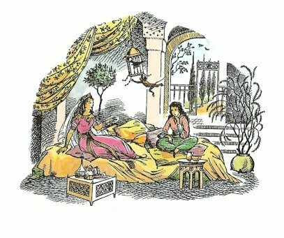
アラビスが話しおわると、ラサラリーンはいいました。「でもね、なぜ、アホーシタ・タルカーンと結婚しないの？みんなあのかたに夢中よ。わたしの主人もいってるけれど、あのかたは、カロールメンきっての大物になるそうよ。あのかたは、年とったアクサルサがなくなって、こんど総理大臣になられたばかりよ。ごぞんじなかったの？」
「そんなこと、どうでもいいわ。あのひとを見るだけでもたまらないの。」とアラビス。
「でも、考えてごらんなさいな。三つの宮殿よ。その一つは、イルキーンの湖のほとりのあのすばらしい宮殿だわ。だんぜん、真珠の首飾りはまちがいなしよ。ロバの乳のお風呂もね。まあ、なんてすばらしいんでしょう。」
「わたしのことだったら、あのひとは真珠も宮殿もくださらなくてすむわ。」とアラビス。
「ほんとうに、あなたは、いつも変わってたわね、アラビス。」とラサラリーン。「それで、いったい、いま何をのぞんでいるの？」
しかし、最後にようやく、アラビスは、ラサラリーンに本気なことをわかってもらい、これからのことの相談にのってもらえるようにさえなりました。こうなれば、もう、二頭の馬が北の門から出て、墓のところまでいくことはむずかしくはないようです。軍馬と婦人用のくらをつけた馬とを川までひいていくりっぱななりをした馬丁を、だれも見とがめたり、尋問したりはしないでしょう。それに、ラサラリーンは、馬を送っていく馬丁を何人でも抱えています。ただ、アラビス自身がどうしたらいいかは、そう簡単に決めることができませんでした。カーテンをすっかりおろして、こしで運び出してもらえないかと、アラビスがいいましたが、ラサラリーンは、こしは町の中だけで使われることになっているので、城門の外にまで乗って出たら、かならずひとにとがめられるといいました。
ふたりは、長いことかかって相談したあげく──とりわけ、ラサラリーンを大事な話からそらさないようにするのがたいへんで、よけいに時間がかかったのですが──ようやく、ラサラリーンが手をたたいていいました。「ああ、いいことがあるわ。城門を通らずに町を出る道がたった一つあるのよ。ティスロック王家（み代とこしえに！）の庭が、川のほとりまでつづいていて、そこに川に出る小さな門があるの。その門は、もちろん、宮殿の人たちだけが使えるのだけど──でも、ね、（ここでラサラリーンは、くすくす笑いました）わたしたち、ほとんど宮殿の人たちなみなのよ。ほんとに、あなた、わたしのところへくるなんて、運がよかったわね。ティスロックさまは（み代とこしえに！）とても親切なおかたよ。わたしたち、ほとんど毎日のように宮殿によばれていて、わたしたちにとっては、第二の家みたいなものよ。わたし、王子や王女たちは大すきよ。まして、ラバダシ王子は、だんぜん、あこがれの的だわ。昼夜すきな時間に、宮殿のどの貴婦人がたにも、すぐに会えるのよ。ですから、暗くなってから、あなたを連れていって、川に出る門から出してあげることぐらい、できないはずはないわ。門の外には、いつも小舟なとが何そうかはつないであるの。それに、もし、わたしたちがつかまったところで──」
「すべてがおしいまになるわ。」とアラビス。
「まあ、そんなに、こうふんしないで、」とラサラリーン。「最後まできいてよ。もし、わたしたちがつかまったところで、いつものわたしのとっぴないいたずらかっていうだけよ。そのことでは、知らないひとはいないわ。ついこの間も──ねえ、きいてよ、すごくおもしろいことがあったのよ。」
「すべてがおしまいになるといったのは、わたしにとって、ということよ。」とアラビスは、ちょっときつくいいました。
「え、あら、そうね。あなたのいういみわかるわ。でも、それならほかに、もっといい考えがあるとでもいうの？」
ほかに考えのうかばないアラビスは、こうこたえました。「ないわ。やってみるよりほかはないわね。いつ、出かけるの？」
「あら、今夜はだめよ。」とラサラリーンがいいました。「もちろん、今夜はだめなの。今夜は大宴会があるのよ（もうすこししたら、髪の手入れにかからなければ）。だから、どこもかしこも明かりでいっぱいでしょ。それに、人の集まりもすごいのよ。明日の夜でなければだめだわ。」
この話は、アラビスにとって都合の悪いことでしたが、そうするより仕方がありません。その午後は、時間がたつのがとてもおそく感じられましたが、ラサラリーンが宴会に出かけていくと、アラビスは、内心ほっとしました。このおしゃべりの友だちのくすくす笑いや衣装の話、宴会だの、結婚だの、婚約だの、うわさ話だのには、つくづく閉口していましたから。その夜、アラビスは早く床につきましたが、このときばかりはうれしくなりました。枕も敷布もそろっているとは、なんとよいことでしょう。
しかし、次の日は、またゆっくりと時間がたっていきました。ラサラリーンは、せっかく決めた申し合わせをやめたがり、アラビスに、ナルニアなんて、悪魔や魔法使いの住みついている、雪と氷に閉ざされた国で、そんなところへいくなんて、どうかしているといいはるのでした。「おまけに、百姓の男の子といっしょだなんて。」とラサラリーン。「考えてもごらんなさいな、つまらないじゃないの。」アラビスも、そのことは、たっぷり考えてみたのですが、今、こうして、ラサラリーンのばかばかしさにうんざりしてみると、はじめて、シャスタと旅をする方が、タシバーンの社交界の生活より、実のところ、ずっとおもしろいと考えはじめていました。そこでアラビスは、ただこう答えました。「わたしたちがナルニアに着いたら、わたしもそのいなかの子とかわらない、ただの人間になるってことを、あなたは忘れてるわ。それに、ともかく約束したのよ。」
「でも、考えてもごらんなさいな」とラサラリーンは、泣き叫ぶばかりになって、「あなたがその気になりさえすれば、総理大臣夫人になれるのよ！」でもアラビスは、馬たちと秘密の話をするために出ていきました。
「あなたたちは、日のくれる少し前に、馬丁といっしょにお墓にいくのよ。」とアラビスがいいました。「もう、こんな荷物はいらないわ。また、くらや馬具をつけるのよ。でも、フインのくら袋には食べ物をいれ、あなたは水をいっぱい入れた皮袋を下げるのよ、ブレー。橋のむこう側についたら、馬丁があなたたちに、水をたくさん、ゆっくりとのませることになっていますからね。」
「それからいよいよ、ナルニアへ、北の方さして！」とブレーがささやきました。「でも、もし、シャスタがお墓にいなかったらどうしましょう？」
「もちろん、待っているのよ。」とアラビス。「あなたたち、居心地はよかったの？」
「こんなけっこうなうまやにはいったのは、生まれてはじめてですよ。」とブレー。「しかし、あなたのお友だちのくすくすやのタルキーナさんのご主人が、馬丁長に、いちばんいいカラスムギを買うようにといって、お金を渡していらっしゃったとしたら、そのご主人は、だまされていますね。」
アラビスとラサラリーンは、柱の間で夕食をとりました。
二時間ほど後には、ふたりは、出かける支度ができていました。アラビスは、大きなやしきの女どれい頭のように装い、顔にはベールをかけました。もし、ひとにきかれた場合には、ラサラリーンが、アラビスを王女のおひとりに献上するために連れてきたのだとこたえることに、うちあわせがきまりました。
ふたりは、歩いて出かけました。宮殿の門までは、ほんのわずかの時間でつきました。もちろん、ここには衛兵たちがいましたが、将校がラサラリーンをよく知っていて、部下たちに気をつけをさせ、敬礼をしました。ふたりは、すぐに、黒大理石の広間にはいりました。ここには、まだかなり大勢の宮仕えの人たちやどれいたちなどが、あちこち動きまわっておりましたが、そのために、かえってふたりがはいっていったのが目立たずにすみました。ふたりは、列柱の広間を通り、それから彫像の広間へ、そして玉座の間の打ち出し細工をほどこした銅の大扉を通って、柱廊下へと出ました。ランプのうす明かりで見たそれらのすべては、筆にも口にもつくせないすばらしさでした。
やがて、ふたりは中庭に出ましたが、そこからは、いくつかの段庭をうもけたくだり斜面になっています。そこを通りすぎると、昔の宮殿に出ました。すでに、あたりはほとんど真っ暗になっていて、ふたりは、壁のところどころに腕木をとりつけられたたいまつだけが照らしだす、迷路のような廊下に出ていました。ラサラリーンは、道が左右にわかれるところで立ちどまりました。
「さ、どんどんいきましょう。さあ。」とアラビスがささやきました。その心臓は、はげしく高なり、父親がどの角からかけよってくるかもわからないような気が、まだしているのです。
「おかしいわ。」とラサラリーンがいいました。「わたし、ここからどっちへいったらいいのか、はっきりは知らないの。たぶん、左の方だと思うけど。そうよ、まちがいなく左だと思うわ。ねえ、なんだかわくわくするわ。」
ふたりは、左手を選びましたが、そちらはほとんど明かりらしいものもない通路で、そのさきは、すぐにくだり階段になっていました。
「大丈夫よ。」とラサラリーンがいいました。「この道でよかったのよ。この階段に見おぼえがありますもの。」ところが、その瞬間、行手に明かりの動くのが見えました。それからまもなく、遠くの角のところをまわって、黒いふたりの男のかげが、高い燭台をもって、あとじさりしながら出てるのが見えました。そうやってあとじさりをする歩きかたは、もちろん、王の前でだけすることなのです。アラビスは、じぶんの腕をラサラリーンがつかんだのを感じましたが、あまり急に強くつかまれたので、まるでつねられたようでした。しんから恐怖におののいた時のつかみかたなのです。もし、ティスロックが、それほどラサラリーンと親しい友だちでしたら、そんなにこわがるはずがないと、アラビスはおかしく思いましたが、それ以上考えているひまはありませんでした。ラサラリーンは、アラビスをせきたてて、階段の上までしのび足でもどると、壁のあたりを夢中で手探りしました。
「ここに扉があるわ。早く。」とラサラリーンがささやきました。
ふたりは、中にはいって、そっと扉を閉めました。中はまっ暗です。アラビスには、ラサラリーンのおびえあがっていることが、その息のつきかたでわかりました。
「タシの神よ、ふたりを守らせたまえ！」とラサラリーンがつぶやきました。「もしここへはいってきたらどうしましょう？かくれるところがあって？」
ふたりの足の下は、柔らかなじゅうたんでした。ふたりは、手探りのまま部屋の奥へ進んで、ソファに突きあたりました。
「さあ、このうしろに横になって。」ラサラリーンは泣き声になっていました。「ああ、くるんじゃなかったわ。」
ソファとカーテンをとりつけた壁との間には、ちょうどすき間があったので、ふたりはそこに寝ころびました。ラサラリーンは、うまく場所をとったので、すっぽり隠れることができました。アラビスは、顔の上の方がソファの横からはみ出てしまっているので、もしだれかが、灯りをもって部屋にはいってきて、ちょうどそちらに目をやったとしたら、見られてしまうでしょう。しかし、もちろん、アラビスはベールをかぶっているのですから、その人たちの見るものが、そのまま額だったり、二つの目だったりするわけではありません。アラビスは、ラサラリーンがもう少し場所をあけてくれるように、必死になって押してみましたが、恐ろしさのあまり、じぶんのことばかり考えているラサラリーンは、アラビスを押しかえしてきて、その足をつねりました。やがてそれもあきらめたふたりは、少し息をあえがせながら、横になってじっとしていました。じぶんたちのはげしい息づかいは、おそろしく大きくきこえますが、そのほかは物音ひとつしません。
「大丈夫？」と、とうとうアラビスが、やっときこえるくらいの声でささやきました。
「そ、そう思うわ。」とラサラリーンも口をききはじめました。「だけど、わたしったらおくびょうで......」ちょうどその瞬間、ふたりにとってもっとも恐ろしい音がしました。扉を開く音でした。そして、光が射しこんできました。アラビスは、もうそれ以上、頭をソファのうしろに引っこめられないので、何もかもが見えました。
まず、ふたりのどれい（アラビスがまちがいなく察したとおり、耳がきこえず口もきけない者たちで、もっとも秘密な会議のときにかならず使われます）が燭台を手にして、あとじさりをしながらはいってきました。そのどれいたちは、それぞれ、ソファの両端にひとりずつ立ちました。これはちょうどいい工合でした。なぜなら、アラビスの前にどれいが立ってしまえば、ひとに見つかりにくくなりますし、こちらからはどれいのかかとの間からのぞくことができるのです。つづいて、さきのとがったき妙な帽子をかぶったぶよぶよに肥った老人がはいってきました。アラビスは、その帽子を見て、その老人がティスロックだということがすぐわかりました。ティスロックのつけているいちばん目立たない宝石でさえ、ナルニアの貴族たちの衣服や武器を全部集めてもおよばないほどの値うちがあります。しかし、ティスロックは肥りすぎていて、それが、ひらひらした縁飾りやひだやレースやボタンやふさ飾りやおまもりなどをごっちゃにしたかたまりのように見えるので、アラビスは、ナルニアふうの衣装（少なくとも男の人の）の方が感じがいいと思わずにはいられませんでした。ティスロックのあとからは、頭に羽根飾りと宝石をちりばめたターバンを巻いて、腰には象牙のさやの三日月刀をつけた背の高い若い男がはいってきました。男はひどく気がたかぶっているようすで、燭台の光がその目つきと口のあたりを荒々しく照らしだしました。いちばんあとからはいってきたのは、背の低いやせこけた年よりで、アラビスは、この男を見るなり、それが新総理大臣であり、じぶんの婚約者であるアホーシタ・タルキーナであることを見てとって、身ぶるいをしました。
三人がはいってしまうと、扉は閉ざされ、ティスロックは、満足げな吐息をついて、長椅子に腰をおろし、若い男は、立ったままティスロックの前に位置をしめ、そして総理大臣は、ひざと肘をついて、顔をぴったりとじゅうたんに伏せました。
８ ティスロックのご殿で
「父ぎみ、わが目の喜びであるかたよ。」とその、その若い男は、たいへんな早口で、きげんわるそうにしゃべりはじめましたが、その口調は、ティスロックが目に喜びをあたえるどころではないといわんばかりでした。「み代とこしえに！さりながら、父ぎみは、わたくしの身をすっかり破滅させてしまわれた。明けがたに、わたくしがあのいまいましい蛮人どもの船がはしり出したのを見つけたとき、もっとも早いガレー船をくださっていたら、きっとあいつらに追いつけたろうものを。だが父ぎみは、あの船は、もっといかりをおろしやすいところへ、場所を移すために動いただけではないのか、まずそれをたしかめよと申された。そして、はや一日がたってしまった。もはや、あいつらは逃げおおせました。わたくしの手の届かぬところへ逃げおおせたのですぞ！あのまやかし女め、あの......」ここで、男は、スーザン女王に対し、ちょっとここで書きしるせないような悪口を、さんざんならべました。いうまでもなく、この若い男はラバダシ王子で、あのまやかし女とは、もちろん、ナルニア国のスーザンのことです。
「おお、わが子よ、気をしずめるがよい。」とティスロックはいいました。「客人たちの出立がもたらした傷は、主人がわの思慮分別さえあらば、たやすくいやされようぞ。」
「しかし、わたくしは、あの女がほしいのです。」と王子は叫びました。「なんとしても手に入れたいのです。あの女を手に入れなければ、わたくしは死んでしまいます。あのうそつきの、高慢ちきな、腹黒い犬畜生の娘が！わたくしは、あの女の美しさのために、夜も眠れず、食べ物も味がなく、目のさきがまっ暗です。なんとしても、あの蛮人の女王がほしいのです。」
「いみじくも才ある詩人も申しております。」と、総理大臣が、じゅうたんから顔（いくらか埃りがくっついたまま）をあげていいました。「理性の泉のふかき汲み水こそ、血気の恋の炎をよく消すもの、とな。」
このひとことは、王子をすっかり怒らせてしまったようでした。「このイヌめ。」と王子はどなりつけ、大臣の尻を、何度もしたたかにけりつけました。「このわたしに、詩の文句など引き合いに出さずともよいわ。格言やら詩の文句やら、一日じゅうあびせかけられて、わたしはもうこれ以上がまんがならぬぞ。」アラビスは、ちっとも大臣に同情しなかったでしょうね。
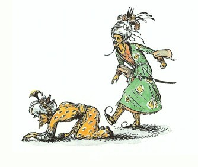
ティスロックは、何か考えこんでいるようすで、長い間じっとしていましたが、このありさまに気がつくと、静かな調子でいいました。
「わが子よ、ともかく、この思慮深く敬うべき大臣をけることをやめよ。価ある宝石は、ちりあくたの山に埋もれていようとも光を失わぬように、この高齢、この分別は、身分低きわが臣下にまじるとも、尊ばねばならぬ。それゆえ、そのようなことはやめ、そなたの望みと願いごとを申してみなさい。」
「わたくしの望みと願いは、父ぎみ、」とラバダシ。「ただちに父ぎみの無敵の軍隊を集め、あのうらみかさなるナルニア国に攻め入り、火をかけて焼きはらい、切りはらって、きゃつらの一の王とその一族をみなごろしにし、かの国を、父ぎみの広大な帝国に加えることです。あのスーザン女王だけは、わが妻とするために生かしておいてください。女王には、まずきびしい見せしめをいたしまするが。」
「よいか、わが子よ、」とティスロック。「そなたがなんと申そうと、わしがナルニアにむかって戦いをいどむようなことはあるまいぞ。」
「み代とこしえなるティスロック王、」と王子は歯をむきだして、「もしあなたが、わが父ぎみでないとしたら、ただいまのおおせは、おくびょう者の文句と申すところです。」
「して、もしそなたが、わが子でないとしたら、よいか、のぼせあがったラバダシよ。」と父王。「そなたがそう申したときは、もはやそなたのいのちは短く、たいくつな死がおとずれようぞ。」（こうこたえたティスロックの冷たいしんとした声のひびきは、アラビスの血をこおらせました）。
「しかし、何ゆえ、父ぎみ、」と王子が、こんどは、もっとかしこまった調子でいいました。「何ゆえ、ナルニアをこらしめるのに、働かぬどれいをしばり首にしたり、くたばりかけた馬を犬の餌にするほどに、かんたんに考えられぬのです？父ぎみのおもちになるいちばん小さな領地の四分の一にもたりぬ国ではありませぬか。槍千本で、五週間もあれば征服できましょうに。父ぎみの帝国のすそにある見苦しいしみのごとき国ですぞ。」
「疑う余地もないことじゃが、」とティスロック。「あの小さな野蛮国どもは、みずからを自由の国と申しておるが（自由とは、働かず、だらしがなく、なんの得もないということと同然じゃ）、神々にとっても、思慮あるひとびとにとっても、いまわしい存在じゃ。」
「しからば、何ゆえ、ナルニアのごとき国を、かくも長い間、征服せぬままに残しておかねばならぬのです？」
「聡明にわたらせられる王子よ、」と総理大臣。「おそれおおくも父ぎみ陛下が、末ながき徳政をお執りはじめになられた年まで、ナルニアの国土は、氷と雪におおわれていたばかりでなく、大そうな力をもった魔女に支配されておりましたので。」
「そんなことは、とうにわかっておるわ、このおしゃべり大臣。」と王子がこたえました。
「その魔女が死んだことも知っておるぞ。そして、氷も解け、雪も消え、いま、ナルニアは、おだやかで実り多き、楽しい国だわ。」
「されば、知識いたらざるなき王子よ、そのように変わりましたのは、まちがいなく、いま、ナルニアの王だ女王だと称しております悪者どもの強力なまじないのききめによるものでございまする。」
「それより、わたしの考えでは、」とラバダシ。「それは、星めぐりの変化か自然の働きがもたらしたものだ。」
「そのようなことは、」とティスロック。「学者どもに議論させておけばよい。わしは、そのような大変化も、年老いた魔女の死も、強い魔術の力をかりずに起ころうとは、とても信じられぬわ。かかることは、人間のことばを話す動物のかっこうした悪魔や、人間と動物とが一体にまじりあった化けものどもがたくさん住んでいるあのような国にはありそうなことじゃ。あのナルニアの一の王（神々もゆめ許したまわぬ）が、いまわしき顔つきとあくなき害意にみちた、ライオンの形をかりた悪魔の助けをかりていることは、すでに知らぬものもないところじゃ。されば、ナルニアに攻め入ることは、望みなき無謀な計画であり、わしは、手を引く前に手を出さぬがましと、心に決めておるのじゃ。」
「神々のお恵みあつきカロールメンよ、」と大臣が、また顔をぴょこんと上げていいました。「かたじけなくも、その支配者に神々のあたえたもうたこの思慮深さと慎重さよ！それにしても、賢さたぐいなきティスロックさまもおおせられたとおり、ナルニアのごときまたとないごちそうを前に、みすみす手をつかねているのは、この上なくつらいことで。いみじくもあの詩人も申したとおり──」とここまでいいかけて、アホーシタは、王子の足先のぴくぴくしているのに気がついて、急にだまりこんでしまいました。
「まことにつらいことじゃ。」とティスロックは、低い静かな声でいいました。「あのナルニアが、いまだ自由の国であることを思うとき、朝の太陽もわが目には暗く、夜の眠りもさわやかさをあたえてはくれぬ。」
「おお、父ぎみ、」とラバダシ。「もしもわたくしが、ナルニアをうばうべく手をのばしながら、万一こころみに失敗した時は、傷手をこうむらずに手を引くことのできるやりかたを、父ぎみにお教えしたらいかがなるものでしょうか？」
「おお、ラバダシよ、そのような方法を教えてくれるなら、こよなき息子じゃぞ。」とティスロック。
「それでは、おききください、父ぎみ。今宵、ただいま、わたくしは、二百騎だけを引きつれて、砂漠を越えてまいります。さすれば、よそめには、わたくしの出かけたことを父ぎみがまったくごぞんじないものと思われましょう。二日めの朝には、アーケン国、リューン王のアンバード城の城門に着きましょう。アーケン国とわが国とは和を結んでおり、なんの備えもしておりませぬゆえ、かれらが軍をととのえるいとまをあたえず、アンバード城を乗っ取ってしまうのです。それから、アンバードの山がわの道を通ってナルニアにくだり、ケア・パラベルに馬を進めます。そこには、一の王はおりますまい。わたくしがかれらと別れを告げたときには、一の王は、北の国境の巨人征伐に出かけるところでしたから。そこで、おそらく、城門も閉ざされていないケア・パラベルに、やすやすと乗りこめるでしょう。わたくしは、じゅうぶん慎重に思慮深くふるまい、ナルニア人の血を流すことは、できるだけひかえるようにします。あとは、そこにとどまって、かがやける鏡の海号が、スーザン女王を乗せて入港してくるのを待つばかりです。わたくしは、逃げた小鳥が浜辺におり立とうとするところをとらえ、くらの上にひきずりあげ、ひた走りに走って、アンバードにもどります。いかがです？」
「だが、わが子よ、」とティスロック。「あの女をうばうには、エドマンドかそなたのずれかが、いのちを落とすようなことにはならぬか？」
「あいつらは少人数でしょう。わたくしは、十人の部下にいいつけて、エドマンドの武器をとり上げ、しばり上げさせます。わたくしのこのつのる気もちをおさえて、あいつめを斬らずにおけば、父上と一の王との戦いのおそれはございますまい。」
「したが、もし、かがやける鏡の海号が、そなたより早く、ケア・パラベルに着いておったら？」
「この風のようすでは、そのみこみはあるまいと思われます。」
「おお、機略にとんだわが子よ。さいごにきくが、」とティスロック。「そなたの説いた方法は、あの蛮国の女を手に入れるには役立つかもしれぬが、わしがナルニアを打ち破るのに役立つことにはならぬな。」
「おお父ぎみ、いかにわたくしや部下の騎兵たちが、弓から放たれた矢のごとく、ナルニアをかけ抜け、かけもどったとしても、アンバードの城は永久にこちらのものになることをききもらされたのですか？アンバードを手に入れておけば、ナルニアはもう目前。父ぎみのアンバードかためを少しずつ増強して、大軍勢になさればよろしいのです。」
「なかなか思慮と見通しをもった話じゃ。だが、ことがうまく運ばぬ場合、わしはどうやって手を引くのじゃな？」
「父ぎみの知らぬまに、お心にそむき、父ぎみの祝福もうけずに、わたくが、恋のはげしさと若ものの軽率さからかってにしたことと申されればよろしいでしょう。」
「では、もしも一の王が、あの蛮国の女を送り返せといってよこしたらなんとするな？」
「おお、父ぎみ、一の王は、そのようなことはいたしませぬ。女の気まぐれがこの結婚をこばむもととなったものの、一の王ピーターは、思慮も分別もある男。わが一門と結ばれて、カロールメンの王座に、その甥やその子孫がすわるのを見るのは、あの王にとって悪いことでもありますまいし、誇りとも思いましょう。それをみすみす失うようなことはいたしますまい。」
「わしがとこしえに生きることは、疑いもなくそなたの望みと思うが、そうであればその時は、ピーターがその血すじのわが王座をつぐことを見る日はおとずれまい。」とティスロックは、ふだんより冷たい口調でいいました。
「それに父ぎみ、わが目のよろこびなるおかたよ。」と王子は、ちょっとばつがわるそうにおし黙ってから口をひらきました。「女王からの手紙のように見せかけて、女王がわたくしを愛していて、ナルニアに帰るつもりはないという手紙を書きましょう。女というものが風見鶏のように気の変わりやすいことは、だれも知っております。もし、かれらが手紙をまるまる信じないとしても、まさか、武装してタシバーンまで女王をとりもどしにはきますまい。」
「何ごとにもものわかりよき総理よ、この変わった申し出について、そちの知恵をかしてもらいたい。」とティスロック。
「おお、とこしえなるティスロックさま、」とアホーシタ。「父親の愛の力というものをそれがしはぞんじませぬが、父親の目には息子たちは紅玉石よりも尊いということをよくきいております。それゆえ、それがしごときが、尊き王子のおいのちにかかわるようなことについて、なんでかってなことを申しあげられましょう。」
「もちろん、そちは申さねばならぬ。」とティスロック。「それを申さぬ場合のそちの危険も同じと、いずれおわかりになろう。」
「おおせ、かしこまりました。」と、みじめな男は、うめき声をだしました。「されば、こよなく道理をわきまえさせたもうティスロックさま。まだ第一に、王子さまの身の危険はさほどのことはあるまいとぞんじます。なんとなれば、神々は、かの蛮族のやからに思慮分別をあたえたまわず、それゆえ、かの国の詩は、わたしどもの詩のように、すぐれた警句やためになる格言に満ちたものとことなり、恋と戦争をうたったものばかりでございます。したがいまして、かれらにとりましては、このようなばかげたくわだてほど、気高く讚うべきものはございませぬ......うううっ！」王子がこの「ばかげた」ということばをきいて、またもけとばしたのです。
「ひかえよ、わが子よ、」とティスロック。「わが尊敬する大臣、そちは、王子がけろうとけるまいと、そちの流れるようなおしゃべりを中断させるではないぞ。ちょっとした不都合など、何くわぬ顔でたえることこそ、威厳と作法をわきまえた者のよくなしうるところじゃ。」
「おおせ、かしこまりました。」大臣は、ラバダシの爪先から、少しでもじぶんの腰を遠ざけようと、からだをよじりながらいいました。「つまり、かの国人どもの目には、このような......そのう......冒険的なくわだて、とりわけ女性への恋のゆえにするくわだては、尊敬とまではいわぬにしても、許されるべきものと見られるでありましょう。したがいまして、もし王子が不運にもかれらの手にとらわれたとしましても、王子を殺しまいらすようなことは、万々ございますまい。それどころか、王子が女王をはこび出すことに失敗されても、その偉大なる勇気と限りなき情熱を見ては、女王の心も王子に傾くこととなるやもしれません。」
「なるほど、うまいことをいう、おしゃべりじじいめ。」とラバダシ。「そちのみにくい頭で考えたにしては上できだぞ。」
「上さまがたのおほめのことばは、わが目の光でございます。」とアホーシタはいいました。それから、第二に、おお、み代とこしえなるべくねがいたてまつるティスロックさま。アンバード城は、神々のお助けによりまして、きっと王子のみ手に落ちることになろうかとぞんじます。そうなれば、ナルニアはもはや、そののどもとをおさえたことになるのでございます。」
それからとても長い間、みなおしだまってしまい、部屋の中であまり静かになったのでふたりの少女は、息をすることもできないほどでした。ようやく、ティスロックが口をきりました。
「ゆけ、わが子よ。そなたの申したとおりするがよい。しかし、わしの支持や援助は、一切あてにするではないぞ。わしは、たとえそなたが殺されようと、その仇は討たぬし、蛮人どもがそなたを牢になげ込んだとて、救い出しにはいかぬ。そして、そなたの試みが成功しようとすまいといずれにせよ、もし、一滴でも余計にナルニア貴族の血を流し、それがもとで戦いとなったらば、わしは二度とそなたに目をかけぬぞ。そして、カロールメンにおけるそなたの地位は、そなたの弟のものとなるぞ。しからば、ゆけ。機敏に、ひそかにやれ。幸運を祈るぞ。ぜったいにして侵すべからざるタシの神よ、お力をそなたの剣と槍にやどらせたまえ。」
「おおせ、かしこまりました。」ラバダシこう叫び、しばらくひざまずいて父の手にキスをしたのち、急いで部屋をとび出しました。ティスロックと大臣とがそのまま部屋に残ったので、アラビスは、からだにひどいふるえがくるほどがっかりしました。
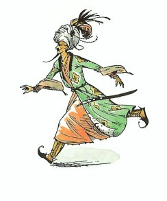
「大臣よ、」とティスロックがいいました。われら三人の今夜のこの会議を、よもや知るものはあるまいな？」
「ご主人さま、」とアホーシタが言いました。「知るもののあろうはずがございません。さればこそ、いまだかつて会議の開かれたこともなく、宮仕えのものたちの出入りすることもない、この昔の宮殿にて、会合することをおすすめ申し、陛下も賢明なる判断をもってご同意なされたのでございますから。」
「よかろう、」とティスロックは言いました。「もしこのことを知ったものがあれば、そやつを一時間とは生かしておかぬぞ。それから大臣、用心深いそちも、このことを忘れさるのじゃ。わしの胸からも、そちの胸からも、王子の計画について、わしは一切消しさるぞ。王子は、わしに何も知らせず、同意も求めず、どこへともいわずに、その気性のはげしさと、若もののもつ無鉄砲さと反抗心のゆえにとび出していったのじゃ。アンバードが王子の手中に落ちたと知って、だれよりもおどろくのは、わしとそちじゃぞ。」
「おおせ、かしこまりました。」とアホーシタ。
「さればこそ、このように、死におもむくにひとしい使命に、わが長男を送り出すこのわしは、この上なく冷酷なる父親だとは、そちは心の奥底ですら考えぬであろうな。王子を好まぬそちにとっては、よろこばしいことにちがいあるまいからな。わしには、そちの心の底まで見とおしじゃ。」
「おお、あやまつことのないティスロックさま、」と大臣。「陛下にくらべますれば、王子も、わたくし自身のいのちも、パンも水も、そして太陽の光さえも愛するにたりませぬ。」
「そちの考えはりっぱで正しいぞ。」とティスロック。「わしも、それらのいずれにもまさって、わしの王位の栄光と力とを愛しておるのじゃ。王子のくわだてが成功したあかつきには、われらはアーケン国をおさめ、次に目ざすはナルニアじゃ。王子のくわだてが失敗におわれば──わしには十八人の息子がおり、ラバダシは、王の長子としては、危険なふるまいが見えてまいったおりじゃ。タシバーンのティスロックのうち、五人以上も世をまっとうせずになくなっておるのは、その長男たる才たけた王子らが、王座を待ちきれなくなったためじゃ。王子は、この地で何もせずに血をわき立たすよりは、遠いかの地で血をひやすほうがよかろう。さて、すぐれたるわが大臣、父親としての心配がこうじて、眠くなったわ。楽師どもにわしの部屋へくるように申せ。じゃが、そちの寝るまえに、わしが第三料理人のために書いてやった死刑ゆるし状をとり消しておいてくれ。どうもわしの腹ぐあいは、明らかに消化不良の気味が見えるでのう。」
「おおせ、かしこまりました。」と総理大臣はいいました。そして、扉のところまで四つんばいになったままあとしざりをすると、そこで立ちあがり、最敬礼をして出ていきました。それでもまだ、ティスロックが身動きもせず静かに長椅子にすわっているので、そのままそこで寝こんでしまったのではないかと、アラビスは気をもみはじめました。しかし、ようやく、ティスロックは、椅子を大きくきしませて、溜息をつくと、ふとりきったからだをもちあげ、どれいたちに明かりをもって先へいくように命じて、部屋を出ていきました。ティスロックが出ていくと扉は閉まり、部屋はふたたびまっ暗になって、ふたりの少女は、やっとのびのびと息をつくことができました。
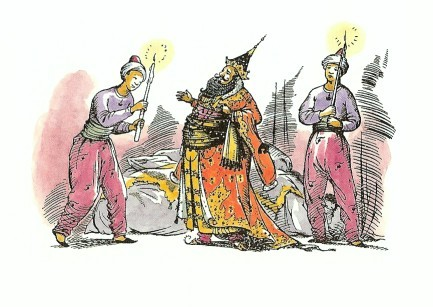
９ 砂漠を越えて
「ああこわい！ ほんとに、なんてこわいことでしょう！」とラサラリーンは泣き声をだしました。「ねえ、わたし、どんなに恐ろしかったか、ほら、からだじゅうふるえているわ。さわってごらんなさい。」
「さあ、いきましょう。」とアラビスは、じぶんもふるえながらいいました。「みんな新しい宮殿の方へいってしまったわ。この部屋から出てしまいさえすれば、もう大丈夫よ。だけど、ずいぶん時間をむだにしてしまったわ。さあ、できるだけ早く、その川に出る門へ連れてってちょうだい。」
「まあ、どうしてそんなことできて？」とラサラリーンは悲鳴をあげました。「わたし、もう何もできないわ──いまはとてもだめ、がっくりしちゃったのよ。もうちょっとこのまま休んで、それから帰りましょう。」
「帰るですって？」とアラビス。
「まあ、わからないひとね、ずいぶん思いやりがないわね。」とラサラリーンは、泣きだしながらいいました。アラビスは、同情している場合ではないと決心しました。
「いいこと！」アラビスは、ラサラリーンをつかんで、ぐいぐいゆすっていいました。「もう一度帰るなんていってごらんなさい。わたしをすぐに川の門まで連れていかないっていうなら、わたし、どうするかわかる？あの通路へとび出していって、大声をあげるわ。そうれすば、ふたりともつかまるのよ。」
「そんなことしたら、ふたりとも、こ、こ、ころされるわ。」とラサラリーン「ティスロックさま（み代とこしえに！）がなんておっしゃったか、きいたでしょう？」
「ええ、きいたわ。でも、アホーシタと結婚するくらいなら、わたし殺される方がよほどましだわ。さあ、いきましょう。」
「あなたったら、不親切ね。」とラサラリーン。「わたしがこんなだっていうのに！」
しかし、最後には、ラサラリーンもアラビスのいうとおりにしないわけにはいきませんでした。ラサラリーンは、アラビスのさきにたって、さっき一度おりた階段をくだり、もう一つの廊下を通って、とうとう外に出ました。ふたりの出たところは、宮殿の庭で、そこから、段庭のくだり斜面が、都の城壁までつづいていました。月がこうこうと照らしていました。いつも冒険につきものの残念さは、とてもすばらしい場所にきたときが、とても気がかりだったり、気がせいていたりして、たいてい景色どころではないことです。そして、アラビスも、灰色の芝生や、静かに水音をたてている噴水や、たけの高いイトスギの木の黒いかげなどをほのかにおぼえているだけなのです（何年もたってから思い出したのですが）。
ふたりがいちばん下までおりてきて、目の前にそびえる高い城壁のところまできたとき、ラサラリーンはがたがたふるえて、門のかんぬきを開けることができませんでした。アラビスが開けました。とうとう川でした。川の表はあまねく月光をうつしていて、小さな桟橋があり、そして舟あそびのボートが二つ三つ浮いていました。
「さよなら、」とアラビスがいいました。「どうもありがとう。わたしが強情っぱりだったらごめんなさい。でも、わたしがなんで逃げていくのかも考えてね。」
「ねえ、アラビス。」とラサラリーン。「考えなおしてみなさい？アホーシタがどんなにえらいひとか、あなたもわかったでしょう。」
「えらいひとですって！」とアラビス。「あのはいつくばりのいやらしいどれいが──じぶんのためならけられたって平気でおせじをいって、あの恐ろしいティスロックに、とりいるためなら息子殺しの計画までたきつけるひとなんて。あんなひとと結婚するくらいなら、父上のところの台所の下働きと結婚した方がよほどましよ。」
「まあ、アラビス、アラビス！ どうしてそんな恐ろしいことをいうの。それにティスロックさま（み代とこしえに！）のことだってそうよ。あのかたのなさろうとすることは、みんな正しいのよ！」
「さよなら、」とアラビスがいいました。「あなたの衣装、みんなすてきだったわ。あなたのおうちだってそうよ。たしかに、あなたの生活はすばらしいと思うわ。ただ、わたしにはそういうのはむかないのよ。わたしが出たら、門をそっと閉めてちょうだい。」
アラビスは、やさしくいく度もだきしめる友だちの手から思いきって離れ、小舟に乗りこんで岸から離すと、まもなく川の中ほどの流れに乗っていました。真上には大きな月があり、そして川の中にもその大きなかげが深く沈んでいました。空気は新鮮で冷たく、むこう岸の土手に近づくにつれて、フクロウのほうほうと鳴く声がきこえてきました。「ああ！ずっといいわ！」とアラビスは思いました。アラビスは、いつも田舎でくらしていましたから、タシバーンの都にいることは、いっときでもいやだったのです。
岸にあがると、地面が高くなっていて、木がしげっているため、月の光はさえぎられて、あたりはまっ暗でした。しかし、アラビスはどうにかこうにか、シャスタが見つけたのと同じ道を見つけ、シャスタのときと同じように、草原がおわって砂地がはじまるところまできてから、左手を（シャスタと同じように）見ますと、黒い大きな墓がいくつも見えました。女の子にしては勇気のあるアラビスも、さすがに心臓がちぢまる思いでした。もし、もしあそこにだれもいなかったらどうしよう！死肉をくうという鬼たちがいたら！けれどアラビスは、あごを（そして舌も少し）つき出すと、まっすぐそちらへむかって進んでいきました。
ところが墓までいかないうちに、アラビスはブレーとフインと馬丁に会いました。
「さあ、もう奥さまのところへ帰っていいわ。ごくろうさま、はい、お金。」とアラビスはいいました（夜が明けて、町の城門が開くまでは帰れないことを忘れているのです）。
「おおせ、かしこまりました。」と馬丁はいって、すぐに町の方へすごい早さで帰っていきました。馬丁に急ぐようにいう必要はありませんでした。馬丁も鬼たちのことばかり考えていたのです。
それからしばらくの間、アラビスは、まるで普通の馬のように、フインやブレーの鼻にキスをしてやったり、首をたたいてやったりするのに夢中でした。
「そーら、シャスタがやってきた！ アスランのおかげさま！」とブレーがいいました。
アラビスが見まわすと、まさにそのとおり、馬丁がいってしまったのを見て、かくれていたところからシャスタが出てきました。
「さあ、一刻もぐずぐすしていられないのよ。」とアラビスはいって、ラバダシの遠征のことを、口早にみんなに話しました。
「裏切り者の犬どもめ！」とブレーはいって、たてがみをふるわせ、ひづめを踏みならしました。「宣戦布告もせずに、平和の時に攻めこむなんて！よし、あいつの計画をだいなしにしてやろう。あいつの着く前にいってしまいましょう。」
「できるかしら？」アラビスは、フインのくらにひらりととび乗っていいました。シャスタは、あんなふうにして乗れたらなあ、と思いました。
「ブルー、フー、」とブレーが鼻をならしました。「さあ、またがりなさい、シャスタ。いいですか！スタートも上手に！」
「あいつは、すぐ出発だっていってたわ。」とアラビス。
「人間はそういういいかたをするんですよ。」とブレー。「けれど、二百頭の馬と二百人の騎兵という部隊に、水を用意し、食料を配り、武装させたり、くらをつけたりして、あっという間に出発ができますか。さて、どっちへいくのかな？真北ですか？」
「そうじゃない。」とシャスタ。「ぼく、知っているんだ。線を引いておいたんだよ。理由はあとでいう。ブレーもフインももう少し左にむいて。ああ、それでよし！」
「ところで、」とブレー。「お話に出てくるような、昼夜駆けどおしなんていうわけには、とてもいきません。並足か早足でいかないとね。でも、きびきびした早足に並足をすこしまぜていきましょう。それから、わたしたちが並足でいるときは、おふたりはいつもおりて歩いてください。さあ、フイン、いいですか？出発！ナルニアさして、北をめざして！」
はじめはゆかいでした。夜もだいぶふけているので、砂も日中太陽からすいとった熱をほとんど出しきって、空気も冷たく、新鮮で澄んでいました。月の光に照らされて、四方八方、見渡すかぎりの砂は、きらきらと輝いて、なめらかな海か巨大な銀のお盆のようでした。ブレーとフインのひづめの音のほかには、きこえる音がありません。シャスタは、ときどき馬からおりて歩きでもしないと、眠ってしまいそうでした。
何時間かは、このようにして過ぎました。それからしばらく月の見えない時間がつづきました。みなは、まっ暗闇の中を、何時間も何時間も乗っているように思えました。そのうち、シャスタは、じぶんの目の前のブレーの首と頭が、少しずつはっきり見えてきたのに気がつきました。そして、ゆっくりと、ほんとうにゆっくりと、灰色のぼう大な平地が四方に見えてきました。それはまったく死の静けさで、死の世界にはいったようでした。シャスタはひどくつかれを感じ、寒くなってきて、唇がかわいていることがわかりました。たえまなくきこえるのは、革のきしむ音とはみのじゃらじゃらいう音、それにひづめの音──それもかたい道をいくぽくぽくいう音ではなく、かわいた砂をいくさくさくという音です。
それから何時間か乗っていくと、ようやく、シャスタははるか右の方、地平線に近い低いところに、青灰色の長い一すじの線が見えてきました。そして、つぎに赤い線。やっと朝がきたのです。けれど、あたりには鳴く鳥一羽だっていません。シャスタはひどく寒くなってきたので、少し歩きたくなりました。
すると急に朝日がのぼって、あたりはいちどに変わってしまいました。灰色の砂は黄色に変わり、ダイヤモンドでもちりばめたようにきらきらき光りました。一行の左手には、シャスタとフインと部とアラビスの影法師が、とほうもなく長く並んでいました。二つ根山の路からはずれているのに気がつきました。「もう少し左、もう少し左、」とシャスタは叫びました。何よりよいことに、うしろをふり返ると、タシバーンが小さく遠くなっていることでした。あの墓も、ティスロックの都の縁のぎざぎざした円い丘にのみこまれ、すっかり見えなくなってしまいました。だれもみな、少しほっとしました。
しかし、それも長いことではありませんでした。はじめ一行がタシバーンを見たときは、とても遠くに見えたのですが、それからいくらいっても、それ以上遠くには見えないのです。シャスタは、なんだかみんながちっとも進んでいないような気がして、ふり返って見るのをやめました。こんどは光がなやみのたねになりました。砂のぎらぎらがシャスタの目をいためました。しかし、目を閉じるわけにはいきません。がまんして目をすぼめて二つ根山を眺めながら、方向をどなって知らせなければなりません。次のなやみは暑さでした。シャスタは、馬をおりて歩かなければならなくなった時にその暑さに気がつきました。馬から砂の上にすべりおりた時、まるでかまどの戸を開けた時に出てくるような熱が顔に当たったのです。その次に馬からおりた時は、もっとひどくなっていました。三度めの時には、素足が砂にさわったとたん、悲鳴を上げて、あっという間に片足をあぶみにもどし、もう片方をブレーの背中にかけていました。
「ごめんよ、ブレー、」とシャスタは、あえぎながらいいました。「歩けないんだ。足がやけそうだよ。」
「もちろんですよ！」とブレーもはあはあいっています。「わたしが気がつけばよかったんですが、乗ってらっしゃい。仕方ありません。」
「あなたは大丈夫でしょう。」シャスタは、フインのそばを歩いているアラビスにききました。「くつをはいてますからね。」
アラビスは、何もいわずにすましています。わざとでなければいいのですが、じつはそうだったのです。
さらに前進です。早足になり、並足になり、また早足になり、ちゃらん、ちゃらん、ちゃらん、きい、きい、きい、むせかえる馬のにおい、むせかえるじぶんのにおい。目もくらむ照り返し、頭痛、何キロも何キロも同じことです。タシバーンは、少しも遠くなりません。山脈もさっぱり近くなりません。ちゃらん、ちゃらん、ちゃらん、きい、きい、きい、むせるような馬のにおい、むせるようなじぶんのにおい。これがどこまでもつづく気もちがわかりますね。
もちろん、時間をつぶすために、頭の中でいろいろなゲームを考えてみるのですが、どれもうまくいきません。また、タシバーンのやしきで食べたシャーベットや、地面にごぼこぼと滴るきれいな湧水や、クリームがうすすぎも濃すぎもしない冷たいなめらかなミルクなど、考えまい考えまいとすればするほど、飲みもののことが頭からはなれなくなるのです。
そのうちに、ようやく変わったことに出会いました。長さがおよそ五十メートル、高さが十メートルほどの岩のかたまりが砂からつき出ているのです。すでに太陽が高く上がっているので、その岩のかたまりの落としているかげはほんのわずかです。それでも一行は、そのかげへ走りました。そこで、食べ物を食べ、水を少し飲みました。馬に皮の水筒から水をのませることはやさしいことではありませんが、ブレーとフインは、その口で上手に飲みました。だれひとりじゅうぶんに食べたり飲んだりしませんでした。だれひとりしゃべりもしませんでした。馬たちは、あわの汗を流し、はげしい息をついていました。子どもたちの顔は青ざめていました。
ほんの少し休んでから、一行はまた出かけました。おなじ音、おなじにおい、おなじまぶしい光、そのうちみんなのかげが右の方に落ちはじめ、だんだん長くなり、やがてこの世の東のはてにまでとどくかと思われるほどになりました。夕日はひどくゆっくりと西の地平線に近づいていきました。そのうちとうとう日も落ち、ありがたいことに、やりきれない照りかえしも消えました。しかし、砂から立ち上がる熱気は、あいかわらずひどいものでした。八つの瞳は、カラスの黄足のぬしが話していた谷らしきものがないかと、一生けんめいに探しましたが、何キロいっても、平らな砂のほかは、何も見あたりません。やかで、とっぷり日がくれて、空には星がいっぱいあらわれましたが、あいかわらず馬たちはさくさくと大きな音をたて、子どもたちは、のどがかわき疲れきったまま、くらの上でからだを立てたりおとしたりしていくのでした。月がまだのぼらぬうちに、シャスタがのどがかわききった時の吠えるような変な声で──叫びました。
「あれだ！」
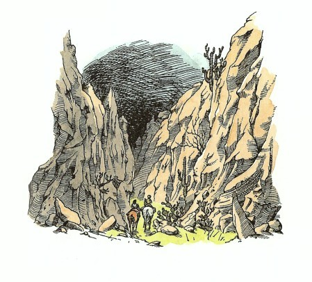
こんどはまちがいありません。前方の少し右手に、とうとう斜面が見えたのです。それは、くだり斜面で、両がわは円い岩の丘になっていました。馬たちは、しゃべるのもたいぎなほと疲れていましたが、くるりとそちらにむきを変え、やがて数分後には、一行はその峡谷にはいりはじめていました。最初のうちは、そこは岸壁と岸壁の間にはさまれて、息苦しいほどでした。その坂道はけわしくくだりつづけ、両がわの岩は高い崖になってそそり立っています。やがて一行は、とげのあるサボテンのような植物や、指をさしそうな雑草などの生えたところにさしかかりました。まもなく、砂をふむひづめの音が、石や小石をふみならす音に、かわっていました。谷にはいくつもの曲がり角がありましたが、みんなは曲がり角にくるたびに、どこかに水がないかと探しました。馬もほとんど力を出しきってしまい、フインはよろめきあえぎながら、ブレーのうしろからのろのろついていきました。一行がもうほとんどだめだとあきらめかかった時、ようやくわずかな湿地を見つけました。今までよりやわらかで質のよい草の間を、ちょろちょろと水が流れていました。そのちょろちょろ水は、少しいくと小川になり、もう少しいくと両がわに草むらのある幅の広い流れになり、その流れが川になったとき、それまで半分居眠りしかけていたシャスタは、とつぜん、たちどまったブレーからすべり落ちて目がさめました（それまでのみんなの失望ときたら、とてもここに記せません）。目のまえに、小さな滝がひろい池に流れ落ちていたのです。二頭の馬は、もう池の中に頭を突っこんでいて、飲むこと、飲むこと、「わーい、」と叫んで、シャスタは池の中にとびこみ──水はひざまでありました──身をかがめて滝に頭を突っ込みました。この瞬間は、シャスタの一生でも最高のときだったでしょう。
みんなが水から出て（ふたりの子どもたちは、ほとんどずぶぬれでした）、あたりに気がついたのは、それから十分ほどたってからでした。月ものぼりきって、谷間いっぱいさしこんでいました。川の両がわにはやわらかな草がしげり、草のむこうには、崖の下までゆるやかな斜面をなして、林やしげみがつづいています。その木立ちのかげの下生えには、すばらしい花の群落があるのでしょうか、林のあいま一帯に、なんともいえないようよい香りがほのかに立ちこめています。そして、林の暗い奥まったかげから、シャスタが一度もきいたことのない声音がきこえてきました──ナイチンゲールでした。
だれもかも、すっかり疲れきって、しゃべる気にも、食べる気にもなりませんでした。馬たちは、くらをはずしてもらうのももどかしく、すぐに横になりました。アラビスもシャスタもそうしました。
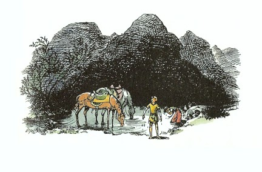
よく気のつくフインが、十分ほどしてからいいました。「でも、わたしたち、眠ってしまうわけにはいきませんわ。あのラバダシより、さきにいかなければならないんですから。」
「そう、眠るわけにはいかない。ちょっと休むだけですよ。」とブレーがのんびりといいました。
シャスタは、じぶんが起きてなんとかなしければ、みんな眠ってしまうと知って、起きていなければと（ほんのちょっとの間ですが）思いました。じっさい、立ちあがって、いこうとせきたてようと、かくごはしたのです。でも、もうちょっと、もう少ししてから、もうほんのちょっと......。
まもなく、月の光がそそぎ、ナイチンゲールが鳴きしきるうちに、ふたりの子どもと二頭の馬たちは、ぐっすり眠りこんでしまいました。
いちばんはじめに目がさめたのはアラビスでした。日はすでに空高く、涼しい朝の時間は過ぎさっていました。「あら、わたしのせいだわ。」とアラビスは、じぶんをせめるようにひとりごとをいってとびあがると、みんなを起こしはじめました。「いくら口がきけるからって、あんなに一日じゅうからだを使ったあとで、馬たちに起きててもらおうと思うなんて。それに、あの子だってもちろんむりだわ。ちゃんとしたしつけも受けてないんだし。でも、わたしだけはもっとわかっていなければならなかったのに。」
ほかのものたちは、眠りがさめきらずに、寝ぼけて、おかしくなっていました。
「やれやれ、ブルル、フー」とブレー。「くらのまんま眠るなんてねえ。もう、こんなことしませんよ。こんな楽じゃないことは──」
「さあ、早く、早く、」とアラビス。「もう朝も半分過ぎてしまったのよ。ぐずぐずしていられないわ。」
「こっちは草のひと口もほおばらぬことにゃ。」とブレー。
「もう、その時間はないと思うわ。」とアラビス。
「どうしてそんなにひどく急ぐんです？」とブレー。「砂漠も乗りこえちゃったというのに。でしょう？」
「でも、わたしたち、まだアーケン国に着いたというわけじゃないのよ。それにラバダシよりさきに着かなけりゃ。」とアラビス。
「ええ、わたしたちは、ラバダシより何キロもさきにいますよ。」とブレー。「わたしたちは近道をしてきたんでしょう？ねえ、シャスタ。あんたの友だちのカラスはこの道が近道だといったんじゃありませんか？」
「ちかいなんてことは、ひとつもいってなかったよ。」とシャスタがこたえました。「カラスはこの道の方がいいといっただけなんだ。だって、この道は川に出るからね。もし、オアシスがタシバーンの真北なら、この道の方が遠いんじゃないかなあ。」
「とにかくわたしは、ひと口食べなきゃ出かけられませんよ。くつわをとってください、シャスタ。」とブレー。
「ど、どうか、お願いです。」とフインがはずかしそうにいいました。「わたしも、ブレーと同じように、出かけるのはむりですわ。でも馬って、人間（拍車などをつけた）乗せている場合には、こんな思いをしていてさえも、どしどしさきに進ませられるでしょう？だからやればできるものよ。つ、つまり──わたしたちはいまでは自由なんですから、それ以上にできなくてはだめね。ナルニアにかけてもね。」
「じつは、フイン姫、」とブレーが自慢そうにいいました。「あなたよりは、ちょっとばかり野戦のことや強行軍のこと、それに馬がどんなにがまん強いかということも、知っているつもりですがね。」
フインは、大かたの育ちのよい雌馬のつねで、とても神経質ですぐにやりこめられてしまうおとなしいたちなので、ブレーのこのことばには、返事をしませんでした。ほんとうのところ、まったくフインのいうとおりです。こんなときでも、もしブレーが背中にタルカーンを乗せていて、いけといわれたとしたら、四、五時間の強行軍には耐えられたでしょう。しかし、どれいの身だったり、人にしいられてする結果のいちばん悪いことは、させる人がいなくなると、じぶんからやろうという力をほとんどなくしてしまうことです。
そこで一同は、ブレーが軽い食事をし、水を飲む間、待っていなければなりませんでした。もちろん、フインも子どもたちも軽い食事をしたり、水を飲んだりしました。こうしてやっと出かけることになった時は、朝もかれこれ十一時近くになっていたようです。それでもまだ、ブレーは、昨日よりずっとのんびりしていました。二頭の馬のうち、弱くてもっと疲れているフインの方が、しゃんとした歩調でさきを進みました。
茶色の涼しそうな川が流れ、草ありコケあり、野生の花やシャクナゲの咲く谷間は、思わずゆっくり馬をすすめたくなるような楽しいところでした。
10 南の国ざかいの仙人
それから四、五時間ほどくだっていきますと、谷は開けて、前方の見とおしがよくなりました。一行が岸づたいにきた川は、左手から右手へ東にむかって流れるもっと大きな川に合流しました。その川が、ごうごうと音をたてて流れるむこうには、ゆっくりと高まって低い丘つづきになる、気もちのいい土地が見え、そのさきは峰に峰をかさねて北方の山なみにつらなっています。右手には、岩山のとがりがならび、その峰の一つか二つは、肩まで雪をかぶっています。左手には、針葉樹のびっしり生えた山はだと切り立った崖、せまい峡谷と青い峰々が、目のとどくかぎりつづいています。シャスタは、もはや二つ根山が見わけられなくなりました。山なみは、ちょうど正面にあたるあたりがへこんでいて、木のしげった鞍部になっていますが、まちがいなく、アーケン国からナルニアへぬける峠道にちがいありません。
「ブルー、フー、フー、北の国だ、緑なす北の国だぞ！」とブレーがいななきました。低い丘のつらなるその一帯は、たしかに、アラビスやシャスタのような南国そだちの者の目には、想像していたよりずっと、緑がこくいきいきと見えました。二つの川が交わるところへ、はしゃいで駆けおりていったみんなは、すっかり元気をとりもどしました。
山なみの西のはずれにあたるもっと高い山なみから流れ出て東へくだる川は、あまり流れが早く、波立っているので、だれも泳いでみたいという気にはなりませんでした。しかし、土手にそって、川上や川下をあちこちさがしてまわって、やっと歩いて渡れそうな浅瀬をみつけました。ごうごう流れるひびき、ぱしゃぱしゃ波うつ音、馬のけづめの毛にさかまく渦、涼しい空気の流れ、すいすいと飛びかうトンボのむれ。シャスタはじめてのことばかりで、心をおどらせました。
「さあ、みなさん、アーケン国にきました！」しぶきをあげ、波をけたてて北がわの土手にあがったブレーがほこらしげにいいました。「いま渡ったのがまがり矢川っていうんでしょう。」
「まにあえばいいけど。」とフインはつぶやきました。
それから一行は、山がけわしいのでゆっくりと、あっちへ曲がりこっちへ曲がりしながらのぼっていきました。見わたすかぎり、道もなければ家もなく、広々と開けた公園のようなところです。あたり一面に、森というほどしげりあわず、木々がまばらに生えています。これまで草ばかりの地方に住んできたシャスタにとって、これほどたくさんの、これほどさまざまな木々を見たことがありません。みなさんでしたら、今シャスタの（知らないで）眺めている木々が、カシ、ブナ、シラカバ、ナナカマド、それにクリの木だとわかるでしょう。のぼるうちに、あちこちにウサギがはねて逃げ、そのうちにこんどは、黄ジカの一群がそっくり、木の間をぬって逃げていくのまで見かけました。
「まあ、なんてすばらしいこと！」とアラビスがいいました。
最初の丘まできたとき、シャスタはくらの上でうしろをふり返って見ました。タシバーンの都はどこをさがしても見えなくなり、みんなのたどってきたせまい緑の峡谷をのぞいては、砂漠が切れ目もなく地平線までひろがっていました。
「やあ！」と突然シャスタがいいました。「あれはなんだ！」
「なにがなんですって？」とブレーがふり返っていいました。フインもアラビスもふりむきました。
「あれだ、」とシャスタは指さしてみせました。「煙のようだけど。火事かな？」
「砂あらしでしょう、きっと。」とブレーがいいました。
「それにしては風がないわ。」とアラビス。
「あら！」とフインが叫びました。「ごらんなさい。何か光ってますよ。ほら！あれはかぶとです、よろいも。動いてますわ、こっちへきますわ。」
「タシの神にかけて、」とアラビス。「軍隊だわ。ラバダシよ。」
「そうにちがいありません。」とフイン。「心配してたとおりだわ。さあ、早く！アンバードにさきに着かなければ。」それだけいうと、フインはさっとむきをかえて、北にむかって駆け出しました。ブレーも頭をふりあげると、フインにならいました。
「早く、ブレー、早く。」とアラビスは肩ごしに叫んでいました。
この競走は、馬たちにとって大そうきついものでした。一つの山の背にたどりつくとまた谷があり、そのむこうにまた山の背があるというぐあいで、しかも、方向はまずまちがいないとわかっていても、アンバードまでどのくらいかかるのかは、だれも知らないのです。二つめの山の背にきたときに、シャスタはもう一度うしろをふり返りました。さっきは砂けむりが砂漠のかなり遠くに見えたのに、こんどは、まがり矢川のむこう岸に、アリのように黒くかたまって動いているのが見られました。黒いかたまりは、浅瀬を探しているにちがいありません。
「川まできたぞ！」とシャスタがどなりました。
「急いで！ 急いで！」とアラビスも叫びました。「アンバードにまにあうように着かなければ、こっちにきたのがぜんぜんむだになるわ。駆け足で、ブレー、駆け足よ。軍馬だってこと忘れないで。」
シャスタも、同じことをもう少しで叫びかかったのですが、「かわいそうに、できるだけのことはやってるんだ。」と思って、口をつぐみました。たしかに馬たちは、全力を出し切っているとまではいかなくとも、少なくともそのつもりで走っていました。でも、つもりでは、だいぶちがいます。ブレーはやがてフインに追いつき、くつわをならべて、芝草の上を地ひびきをたてて走りました。フインはどうやらもう、並んでついていけそうにありませんでした。
その時です。うしろから聞こえてきた音で、みんなの気もちがさっとあらたまりました。その音は、みんながきこえてくると思っていたひづめの音や、カロールメン人のときの声にまじったよろいのがしゃがしゃいう音ではありません。でも、シャスタには、なんの音かがすぐわかりました。アラビスとフインにはじめて会った、あの月夜にきいたのと同じうなり声だったのです。ブレーもそれに気がつきました。ブレーの目は血走り、耳はねて、頭にぴったりくっついていました。その時になってブレーは、じぶんが走れるだけ早く、ほんとうに力いっぱい走っていなかったことに気がついたのです。シャスタには、すぐその変わりかたがわかりました。今こそほんとうの全速力です。そしてまもなく、フインをだいぶさきにぬきました。
「ひどいや！ ここにはライオンはいないと思ったのに。」とシャスタは思いました。
シャスタは、肩ごしにふりかえって見ました。一目りょうぜんでした。ものすごく大きな黄茶色のけものが、たとえば庭にはいってきたよその犬を見て、ネコが木にむかってすばやく芝生を横ぎるときのように、地面にからだをはわせるようにして追ってくるのです。そして、刻一刻と近づいてくるのです。
シャスタがふたたび前の方にむいたとき、気もつかず考えもしなかったものがあるのをみとめました。三メートルほどの高さのなめらかな緑色の築地が、行手をさえぎっているのです。その築地の中央には門があり、門は開かれていました。その門のまんなかに、背の高い男のひとが立っていました。素足のさきまでとどく落葉色の長い衣を着て、杖によりかかっていますが、そのあごひげは、ほとんどひざまでとどいていました。
ひと目で見てとったシャスタは、もう一度うしろをふり返りました。ライオンは、もうほとんどフインに追いついて、今そのうしろ足にかみつこうとするところでした。フインの、泡汗を浮かべて目を大きく見ひらいたその顔には、絶望のいろが見えました。
「とまれ、」とシャスタは、ブレーの耳もとでどなりました。「もどるんだ。助けるんだ！」
あとになってブレーは、この話がでるたびにいつも、シャスタのこのことばがきこえなかった、何をいっているのかわからなかったといいますが、ブレーは根が正直ものですから、ほんとにそのいうとおりなのでしょう。
シャスタは、足をあぶみからぬいて、左がわに両足をすべらせ、ほんの一瞬ためらっただけで、すぐにとびおりました。ずきんとひどい痛みがして、息がとまりそうでしたが、どこをどうけがをしたのかを考えるいとまもなく、よろめきながら、アラビスを助けにとってかえしました。シャスタがこのようなことをするのは生まれてはじめてで、なぜそうするのか、じぶんでもよくわかりませんでした。
フインの口からもれた叫び声は、世にこれほど恐ろしいひびきがあろうかと思われるほどでした。アラビスは、フインの首に低くからだをかがめて、刀をぬこうとしているようでした。アラビスとフインとライオンは、ほとんどシャスタの真上にさしかかるところでした。今、頭上にきたと思ったとき、ライオンは後足で立ちあがり、こんなに大きいライオンがいるとは信じられないほどばかに大きい姿で、アラビスめがけて右足をつき出しました。シャスタは、その恐ろしい爪が全部むき出しになるのを見ました。アラビスは悲鳴をあげて、くらの上でよろめきました。ライオンは、アラビスの肩を引きさいたのです。シャスタは、なかば恐ろしさで気がくるいそうでしたが、ともかくころびそうになりながら野獣にむかっていきました。手には武器がなく、棒ぎれも、石さえもありません。それでも、まるで犬にいうように「しーっ！帰れ！」とライオンにむかって叫びました。ほんの一瞬、シャスタは、猛りくるって大きく開けたライオンの口の中を真正面から見つめました。すると、まったくおどろいたことに、ライオンは後足のまま急に立ちどまり、くるりとむきをかえると、もとの姿勢にもどって、とび去っていきました。
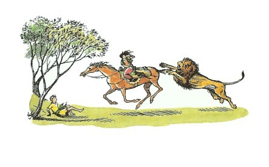
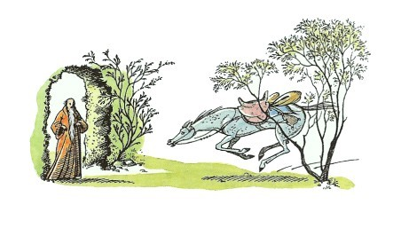
シャスタは、しばらくの間、ライオンがそのままいってしまったとは思えませんでした。そして、やっとさっき見た緑の築地を思い出して、そちらにむかってかけだしました。フインが、よろめき気絶しそうになりながら、その門にはいっていくところでした。そのくらには、アラビスがちゃんとすわっていましたが、背中は血だらけでした。
「おはいり、わが子よ、おいでなさい。」と長い衣を着た長いひげのひとがいい、それから息を切らせながら近づくシャスタにも、「おはいり、わが子よ、さあ。」といいました。シャスタがはいると、門が閉まりました。長いひげのひとは、もうアラビスが馬からおりるのに手をかしてやっていました。
一同のいるところは、緑の芝の高い築地をめぐらした、ひろいまんまるい形の囲いの中です。目の前には、鏡のように水面の平らな池があり、池の水は、なみなみとほとんど地面とすれすにたたえられています。池のかたすみに、シャスタがまだ見たこともないほど大きくて美しい木があって、その枝が、池をすっかりおおうほどのかげをつくっています。その池のむこうに小さな低い石作りの家があり、その屋根は、深々とした昔風のカヤぶきです。どこかでヤギの鳴く声がし、見ると囲いのいちばんむこうみに何匹かのヤギがいました。平らな地面は、美しい芝ですっかりおおわれていました。
「あ、あ、あなたは。」とシャスタが息をはずませたまま、「アーケン国のリューン王ですか？」
老人は、頭をふりました。「いや、わしは、南の国境の仙人じゃ。だが、わが子よ、わしにものをたずねたりして、時間をむだにするでない。わしのいうとおりにせよ。このむすめごはけがをしておいでじゃ。馬たちも疲れきっている。ラバダシは、今、まがり矢川のむこうで浅瀬を探しておるところじゃ。もしそなたが、今すぐ休まずかけていけば、リューン王に知らせるのにまにあうのじゃ。」
このことばをきくと、シャスタは気が遠くなりそうになりました。もうとてもその力はないと思ったからなのでした。そして、こんなことって、ずいぶん思いやりのない、不公平ないいようだと、不満でした。シャスタは、もし何か一ついいことをすれば、そのむくいとして、さらに一つ、もっと困難でもっといいことをするようになっているものだということを、まだ教わったことがなかったのです。しかし、シャスタが大声でいったのはこうでした。
「王はどこにいらっしゃるんですか？」
仙人は、うしろをふり返って、杖で方向をさしました。「ほら、そなたがはいってきたのと反対の側に、もう一つの門がある。それを開けて、まっすぐにいきなさい。どこまでもまっすぐに進むのじゃ。平らなところもけわしいところも、歩きよいところも歩きにくいところも、かわいたところも水のあるところも、かまわずにじゃ。そなたがまっすぐにいけばリューン王に会えることは、わしの術でわかっておる。ともかく走れ。走って走って、走りつづけるのじゃ。」
シャスタはうなずくと、北の門にむかって走りだし、やがてそのむこうにすがたを消していきました。それから仙人は、それまでずっと左の腕でささえていたアラビスを歩かせながら、ほとんど運びこむようにして、家の中に連れこみました。かなりの時間がたってから、仙人はまた外へ出ていきました。
「さあ、いとこたち、こんどはおまえさんがたの番だ。」と仙人は馬たちにいいました。
そして返事も待たずに──ほんとうのところ、馬たちは口もきけないほどくたくたになっていたのですが──おもがいやくつわや手綱やくらなどを、二頭の馬からはずしてやりました。それから、仙人は、王につかえる馬丁だってこれほどにできまいと思われるほど上手に、馬たちをこすってやりました。
「さあ、いとこたち。」と仙人はいいました。「あらゆることをすっかり忘れて、ゆっくりしなされ。水はここ、草はあちらじゃ。ほかのいとこたちのヤギのとこへいって、乳をしぼってしまったら、湯がいた暖かいふすまを進ぜよう。」
「あのう、」とやっと声の出たフインがいいました。「あちらのタルキーナは大丈夫でしょうか？ライオンにかかって死んでしまわれたんではないでしょうか？」
「わしは、わしの術によって、いまおきていることはわかるのじゃが。」と仙人は、にっこりしながらいいました。「これからさきのことは、ようわからんのじゃ。じゃから、今夜、日が沈むころ、世界じゅうのどこの男や女や動物が生きていようかは知らぬ。だが、望みをもってよいぞ。あのむすめごは、寿命のあるかぎりは生きつづけられよう。」
アラビスが気がついたときは、自然のままの石を壁に使った、飾り気のない涼しい部屋で、とくべつやわらかい低いベッドの上にうつぶせになっていました。アラビスは、じぶんがどうしてうつぶせになって寝ていたのかわかりませんでした。そして、むきをかえようとして、熱いやけるような痛みを背中じゅうに感じたとき、すっかり思い出しました。アラビスは、そのベッドが、どんな気もちのよいふんわりした材料でできているのかとふしぎに思いましたが、それは、アラビスが見たこともきいたこともないようなヒース（ベッドにはいちばん上等な）という草でできていたのです。
戸があいて、仙人が手に大きな木のわんをもってはいってきました。仙人は、それをそっと下におくと、ベッドのそばによって、アラビスにたずねました。
「わが子よ、気分はどうかね。」
「背中がひどく痛みますけれど、ほかは大丈夫ですわ、仙人さま。」とアラビスがいいました。
仙人は、アラビスのそばにひざをついて、手をひたいにあて、それから脈をはかりました。「熱はないな。」と仙人がいいました。「大丈夫、よくなろう。これなら、明日は起きられないことはない。しかし、まあこれをお飲み。」
仙人は、木の大わんをとりあげると、アラビスの口へもっていきました。ひと口飲んだアラビスは、つい顔をしかめてしまいました。ヤギの乳というものは、飲みなれないと、なかなか飲みづらいものです。しかし、ひどくのどのかわいていたアラビスは、どうやら全部飲みほしてしまい、気分もずっとよくなりました。
「では、娘よ、いつでも寝たい時におやすみ。」と仙人はいいました。「そなたの傷は、洗ってほうたいをかけておいた。ずきずき痛むかもしれぬが、むちで打たれて切れた傷よりはまじゃ。おかしなライオンじゃの。そなたをくらから引きずり落としてかみつくかわりに、背中に爪をかけただけじゃものな。かき傷は十本じゃ。痛むだろうが、傷は深くないし、いのちにかかわるようなものではない。」
「それでは、ずいぶん運がよかったのですね。」とアラビス。
「娘や、」と仙人。「わしは、これで百と九度めの冬をこの世で送ったが、運などというものに会ったためしがない。いまおこっていることには、わしにわからぬ何かがあるように思うが、知らなきゃならんときには、きっとわかるというものさ。」
「それから、ラバダシと二百騎の方はどうなりましたの？」とアラビスがたずねました。「そのものたちは、ここを通るまい。」と仙人。「ちょうどいま、ここよりだいぶ東の方に、浅瀬を見つけたようじゃ。そこからまっすぐアンバードさして、馬をとばすだろう。」
「かわいそうなシャスタ！」とアラビスはいいました。「もうだいぶ遠くまでいったでしょうか？さきにつけるでしょうか？」
「じゅうぶんまにあうじゃろう。」と仙人はいいました。
アラビスは、ふたたび横になって（こんどは脇を下にして）いいました。「わたし、長いこと、眠っていたのでしょうか？暗くなっていくようですけど。」
仙人は、一つだけある北むきの窓から、外をながめていました。「これは夜の暗さではないのじゃ。」と、しばらくしていいました。「嵐が峰の山頂から、雲がどんどんおりてきているのじゃ。このあたりの悪い天気は、いつもあそこからやってくる。今夜は深い霧になろう。」
次の日は、背中が痛むほかは、アラビスはとてもいい気分でしたので、朝食（おかゆとクリームでした）のあと、仙人はもう起きてよいといいました。アラビスがすぐ馬たちのところへ話しに出ていったのはいうまでもありません。天気も変わって、緑の囲いの中は、まるで緑色の大きなコップに、日の光をたっぷりもりこんだようでした。さびしく、静かで、とても平和なところでした。
フインがすぐにアラビスに駆けより、馬のやりかたでキスをしました。
「だけど、ブレーはどこ？」たがいにからだのぐあいやよく眠れたかなどをたずねあったあとで、アラビスがこうたずねました。
「あそこにおります。」とフインが鼻づらで、まるい囲いのむこうすみをさしました。「あの、どうかいってブレーに話しかけてください。なんだかおかしいんです。何をいっても口をきこうとしませんの。」
フインとアラビスがゆっくりそちらへいって見ると、それがきこえないはずはないのに、ブレーは顔をついと他の方にむけて横になったまま、こちらをふりむきもせず、しゃべりもしません。
「お早よう、ブレー。今朝は気分はどう？」とアラビスがいいました。
ブレーは何か口のなかでいったようですが、だれもききとれません。
「シャスタはまにあうようにリューン王ところへ着くだろうって、仙人がおっしゃったわ。」アラビスはそういってから、「だから、わたしたちの苦労は、もうおわったといってもいいようよ。さあ、とうとうナルニアだわ、ブレー。」
「わたしは、ナルニアへはとてもいけません。」とブレーは低い声でいいました。
「気分が悪いの、ブレー？」とアラビスがいいました。
ブレーは、やっと、馬だけのできるとても悲しげな顔をむけました。
「わたしは、カロールメンに帰らなければなりません。」
「なんですって？」とアラビス。「どれいにもどるつもり？」
「ええ、」とブレーはいいました。わたしにはどれいがいちばん似あうんです。ナルニアの自由な馬たちに、どうしてこの顔が見せられましょう？フインとあなたとシャスタがライオンにくわれようというのに、とるにたらないわが身をたすけようとして、みんなをおいて、大急ぎで逃げたこのわたしですよ。」
「わたしたちみんなが、力いっぱい駆けたのよ。」とフイン。
「シャスタはちがいます。」とブレーは鼻を鳴らしていいました。「少なくとも、シャスタは、正しい方向へ駆けたのです、とってかえしたんです。それがわたしには、いちばんはずかしいのです。じぶんを軍馬と呼び、かずかずの戦いの自慢をしていたこのわたしが、小さな人間の男の子に──刀をもったことも、教えられたこともなく、見ならう手本もなかった子ども、ほんの坊やに負けたのですよ。」
「そう、わたしも同じ気もちよ。」とアラビス。「シャスタはすばらしかったわ。わたしだって、あなたと同じくらいよくないのよ、ブレー。わたしは、あなたたちに会ってから、ずっと、あの子を相手にしないで、ばかにしてたけど、今は、シャスタがわたしたちの中でいちばんりっぱになってしまったわ。でも、ここにいて、わたしたちが悪かったといったほうが、カロールメンに帰るよりましと思うわ。」
「あなたにはそれでけっこうでしょう。」とブレー。「あなたは恥をかいたわけではないのですからね。けれど、わたしは何もかも失ってしまったのです。」
「わが友よ、」と仙人がみんなの知らないうちにそばにきていいました。仙人がはだしで歩くと、露にぬれてしなやかな草は、音がしないのです。「そなたはいい馬じゃ。そなたが失ったのは、うぬぼれだけじゃ。いやいや、わがいとこよ。そんなに耳をふせて、たてがみを振るでないぞ。そなたがさっきいっていたほど、しんからへりくだった気もちでおるなら、ものの道理をきくこともまなばねばならぬ。そなたは、あわれでおろかな馬たちの中にいたため、じぶんをえらい馬だと思うようになったが、それほどえらくはなかったのじゃ。もちろん、そなたは、ほかの馬たちよりも勇ましく利口ではあった。そうならざるをえなかっただけのことじゃ。だからといって、ナルニアでもひとかどのものだというわけにはまいらぬぞ。しかし、そなたが特別なものではないとさとるならば、あれこれと考えてみて、まあ全体としては、そなたはひとかどの馬になれよう。さあ、ではそなたとそちらの四つ足のいとことで、台所の戸口までおいで、ゆがいたふすまの残り半分をしんぜよう。」
11 ありがたくないたびの道づれ
一方、シャスタのほうは、門をくぐると、ヒースのちらばる草つきの斜面がいくらか木立ちのあるところまでのぼっているのを見ました。シャスタは、いまは考えたり、心配したりすることはありません。ただ、走るのです。走りさえすればよいのです。手足はふるえ、脇腹はひどく痛みだし、たえまなく目にはいる汗で、目が見えなくなり、ひりひりしみました。足もとがたしかでなくて、ごろごろ石に足首をねじりそうになったことも一度やそこらではありませんでした。
まばらだった木立ちも、次第に深い林となり、木のないところには、ワラビがしげっていました。太陽はもう沈んでいましたが、少しも涼しくなりません。暑くてうっとうしい日で、ハエがいつもの倍もとんでいるようでした。シャスタの顔にもハエがたかってきましたが、それを追いはらおうともしませんでした。そんなことには、とてもかまっていられないのです。
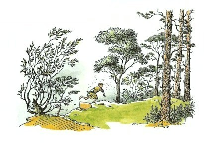
突然、角笛のひびきがきこえてきました。タシの角笛のように人をおどろかすような音ではなく、楽しげに呼びかけるようなチロー、トトー、というひびきでした。まもなく、シャスタが林の中に広々とした草地に出て、じぶんがおおぜいの人の集まっている中にいることに気がつきました。少なくとも、シャスタは、それがおおぜいの人の集まりに見えたのです。そこにいた人の数は、ほんとうは十五人から二十人くらいで、みんな緑色の狩りの服を着て馬をつれたりっぱな人たちでした。あるものはくらにまたがり、あるものは馬の頭の近くに立っていました。その中央には、人を乗せるためにあぶみをおさえている人がいました。馬に乗ろうとしている人は、リンゴのような頬に目のくりくりした、ふとってみるからに陽気な王さまでした。
シャスタが目の前にあらわれると、王は、馬に乗ろうとしていたこともすっかり忘れてしまいました。王は、顔をかがやかせて、シャスタへ両腕をひろげると、胸の奥からひびくようなどっしりとしたふかみのある声で叫びました。
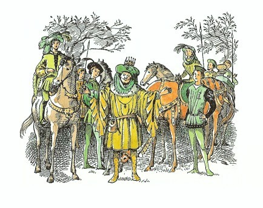
「コーリン！ わが子よ！ 歩いてきたのか、そんなぼろを着て！どうしてまた──」
「ちがいます。」とシャスタは、息をきらせながら首を横にふりました。「コーリン王子ではありません。わたしは......わたしは......王子に似ていることは、知ってますけれど......タシバーンで王子に、お会いしたのです......そしてよろしくと......」
王は、ひどくおどろいたようすで、シャスタを見つめました。
「あなたは、リ、リューン王、へ、陛下ですか？」とシャスタはあえぎながらいいました。そして返事も待たずに、「王陛下......大急ぎで......アンバードへ......門を閉めて......敵が攻めてくる......ラバダシと二百の騎兵で。」
「それがまことと、しかとうけあうか、少年よ？」と別の貴族らしい人がいいました。
「この目で見たのです。」とシャスタ「タシバーンから、ずーっと競争してきたのです。」
「歩いてか？」と、そのひとはちょっと眉を上げていいました。
「馬です......仙人のところにいるんです。」とシャスタがいいました。
「その子に、それ以上たずねることはないぞ、ダーリン。」と王がいいました。「その子の顔を見ればわかる。おのおのがた、馬を走らせよう。この子には、あの空いている馬を。そなたは、馬を早くとばせるかな？」
シャスタは、返事をするかわりに、貸してくれた馬のあぶみに足をかけ、すぐにまたがりました。シャスタは、この二、三週間というもの、もう百回もブレーにまたがってきましたから、まるでほし草の山によじのぼるようだとブレーにいわれた、あの最初の夜のときとは、乗りっぷりがすっかりちがっていました。
ダーリン卿が王に、「陛下、この子は、ちゃんとした馬の乗りかたをこころえております。この子の中には、高貴な血が流れているにちがいありません。」といっているのをきいて、シャスタはうれしくなりました。
「この子の血にな。さよう、それが問題なのじゃ。」と王がいいました。そして、そのおちついた灰色の目が、つきとめずにはおかないといったほとんどむさぼるような見方で、シャスタをもう一度じっと見つめました。
しかしその時は、一行は早駆けで進みだしていました。シャスタの乗りかたはすばらしかったのですが、ブレーの背中では、一度も手綱にさわったことがなかったので、手綱をどうしたらよいのかわからず、ほとほと困ったようすでした。シャスタは、ほかの人たちがどうやっているかと、そっと横目で注意深く見て（わたしたちでも、パーティーの席などでどのフォークやナイフを使ったらいいかわからないときによくやるように）、指さばきを正しくするようにしました。しかし、ほんとうに思いきって馬を御することはできませんでした。それでシャスタは、じぶんの馬がほかの馬についていってくれるのをあてにしました。その馬は、もちろんふつうの馬で、ものいう馬ではありませんが、じぶんの背にいるこの見知らぬ子どもが、むちも拍車もなく、ほんとうはどうしていいかわかってないということぐらいは、じゅうぶんわかっていました。そんなわけで、たちまちシャスタは列のいちばんうしろになってしまったのです。
それでもシャスタは、けっこう早く進んでいきました。ハエももういなくなり、ここちよい空気が顔にあたりました。呼吸もふつうにもどりました。そして、シャスタの使いはりっぱに果たせたのです。タシバーンに着いて以来（あれからなんと長い月日がたったような気がすることでしょう！）、はじめてシャスタは、楽しい気もちになってきました。
シャスタは、山の頂がどんなに近くなったかと見上げましたが、がっかりしたことに、頂上はまったく見えませんでした。ぼうっとした灰色のものが、こちらへ流れるようにおりてくるだけなのです。山国がはじめてのシャスタは、これを見ておどろきました。「あれは雲だ。」とひとりごとをいいました。「雲がおりてくるんだ。なるほど、こんな山の上にいると、ほんとうに空にいることになるんだな。よし、雲の中がどんなふうになっているのか見てやろう。やあ、ゆかいだなあ！前から、どんなふうだか、ふしぎに思っていたんだ。」シャスタの左うしろのはるかかなたに、夕日が沈みかけていました。
一行は、道の悪いところにさしかかりましたが、かなりの早さで進んでいきました。シャスタの馬は、あいかわらずしんがりについていました。道の曲がりめで（道の両がわは森がずっとつづいています）、しばらくの間、みなのすがたを見失ってしまうことも一、二度ありました。やがて一行は、霧の中へはいっていきました。というより、霧がみんなを巻きこんだといった方がよいでしょう。あたり一面がすっかり灰色になりました。シャスタは、霧の中がこんなにも寒く、しめっていて暗いものだとは知りませんでした。その灰色も、おどろくほどの早さで、黒い色にかわってきました。
列のいちばん先頭で、ときどき角笛を吹きならしていましたが、その音がだんだん遠くにきこえるようになりました。シャスタからは、だれひとりとして見えなくなりましたが、つぎの曲がり角へくれば、どうせまた見えるようになるだろうと思いました。ところが、つぎの曲がり角を曲がっても、だれも見えません。まったく何も見えなくなってしまったのです。シャスタの乗っている馬は、いまはもう並足になっていました。「はいどう、はいどう、」とシャスタはいいました。その時、角笛の音がかすかにきこえてきました。シャスタは、ブレーにいつも爪先を外にむけて、かかとをぴったりつけておくようにいわれていましたが、かかとが馬の腹にあたると何かたいへんなことになるのではないかと、思っていました。しかし、シャスタは、いまがそれを試してみるときのように思いました。「いいかい、きみ。」とシャスタはいいました。「元気を出さないと、ぼく、どうするか知ってるかい？おまえをかかとで突いてやるぞ。ほんとだぞ。」しかし、馬はそんなおどしはいっこうきかぬといったようすです。そこでシャスタは、両ひざをしめてからだをしっかりすえ、歯をくいしばると、馬の脇腹をかかとでできるだけ強くけりました。
すると馬は、ほんの五、六歩ばかり早足をして見せてから、また並足にもどってしまうのでした。もうすっかり暗くなったので、角笛を吹くのもやめてしまったらしく、きこえる音は、木の枝から絶え間なくしたたり落ちるしずくの音だけでした。
「まあ、いいや。並足でいったって、いつかどこかへ着くだろう。」とシャスタはひとりごとをいいました。「だけど、ラバダシとその部下どもに出くわすのはだけはごめんだぞ。」
それからずいぶん長い時間がたったように思われましたが、その間ずっと並足のままで進んでいました。シャスタは、だんだんその馬がにくらしくなってきましたが、一方、おなかもすっかりへってきました。
やがて、道が二つにわかれているところへ出ました。アンバードへいく道はどっちだろうと考えていたちょうどそのとき、シャスタは、うしろの方からきこえてくる音にびっくりしました。早足で進んでくる馬の足音なのです。「ラバダシだ！」とシャスタは思いました。どっちの道をラバダシがいくだろうか、見当のつけようもありません。「でも、ぼくがもし片方の道をいけば、」とシャスタはひとりごとをいいました。「ラバダシはべつな道をいくかもしれない。ただこの別れ道のところにじっととまっていたら、つかまることだけはたしかだ。」そこでシャスタは、馬からおりると、大いそぎで右手の道へ馬をひっぱっていきました。
騎兵の進んでくる音はだんだん近くなり、二、三分ののちには、あの別れ道のところまできたことがわかりました。シャスタは息をこらして、ラバダシたちがどっちの道を選ぶかを見とどけることにしました。
「とまれ。」と命令する低い声がきこえてきました。それからしばらくの間、馬のあらい呼吸や、前足のひづめで土をかく音、くつわのはみをかむ音、首をぱたぱたさせている音などがきこえてきました。それから人の声がきこえてきました。
「きけ、みなのもの。われわれはいま、城から二百メートルの位置にある。命令をもう一度思いだせ。日がのぼるまでには着くと思うが、いったんナルニアにはいったら、できるだけ人を殺すな。このたびの行動においては、ナルニア人の血の一滴は、おまえたちの血の一ガロンにあたるものと思うがよい。このたびの行動においてはだ、よいな。神々はわれにもっとよい機会をあたえたもうであろうから、そのときこそは、ケア・パラベルから西の辺境にいたるまで、なんびとも生かしておくな。しかし、われらはまだナルニアにはいっていない。このアーケン国ではまた別な話だ。リューン王のこの城の襲撃については、おまえたちにもとめるものは早さのみである。勇気の見せどころだぞ。一時間以内にわがものとしなければならぬ。それができれば、すべてをみなの者につかわすぞ。わがためには、いささかの分捕り品もいらぬ。城のなかにいる蛮族の男どもは、生まれたばかりの赤ん坊にいたるまで斬ってしまえ。そのほかのもの──女ども、黄金、宝石、武器、酒などなんでもよい、おまえたちのよいように山分けするがよい。城門まできてしりごみするやつは、見つけしだい火あぶりにするぞ。ぜったいにして侵すべからざるタシの神の名にかけて、進め！」
たくさんの馬のふみならすひづめの音ともに、隊列が動きだすと、シャスタはほっと息をつきました。ラバダシの一行は、もう一つの道をいったのです。
シャスタは、「二百騎の騎兵」について、一日じゅう話したり考えたりしていたものの、それがどんなに多いものか見当もつかなかったので、その一隊がすっかりいってしまうまでの時間が、とても長くかかったように思えました。しかし、やがてそのもの音もきこえなくなると、シャスタはふたたび、木の枝からしたたるしずくの音の中に、ひとりぼっちになりました。
これでシャスタは、アンバードへの道はわかったものの、いまそちらへいくわけにはいきません。そんなことをすれば、ラバダシの兵士たちの腕のなかにとびこんでいくのと同じことです。「いったい、どうしたらいいだろう？」とシャスタはひとりごとをいいました。けれど、やはりまた馬に乗り、どこかに休んで食事のできる小屋でもあればいいんだがなあと、かすかに願いながら、じぶんの選んだ道を進んでいきました。仙人の家にいるアラビスやブレーやフインのところへ帰ることを考えなかったわけではありません。しかし、いまとなっては、その方角の見当が、まるでつかなくなっていました。
「とにかく、この道はどこかへは出るんだ。」とシャスタはいいました。
けれども、そのどこかが問題です。たしかにその道はどこかにいっているのですが、そのゆくさきは、木がいっそう茂り、暗くもますます暗く、露のしずくも多くなり、空気もいっそうひえびえとしてきました。そして、異様に冷たい風が、シャスタに、たえず霧を吹きかけますが、そのくせ、霧はさっぱりはれそうもないのです。もしシャスタが山国に住みなれていたなら、これは今、ずいぶん高い、たぶん頂上近くまできているのだということがわかったでしょうが、あいにく、シャスタは山については何も知りませんでした。
「ぼくはたしかに、」とシャスタはいいました。「世界じゅうでいちばんふしあわせな子どもなんだ。みんなはなんでもうまくいくのに、ぼくだけはそうじゃない。あのナルニアの王や女王たちも、タシからうまく逃げ出せた。ぼくはおいていかれた。アラビスもブレーもフインも、みんなあの年よりの仙人のところでいい気分になっているんだ。そして、こうして使いに出されたのは、やっぱりぼくだ。リューン王とその家来たちは、きっと城に無事にもどれて、ラバダシがくるずっと前に門を閉めたにちがいない。だけどぼくだけは残された。」
そして、ひどく疲れてお腹もすいたシャスタは、すっかり悲しくなり、涙が頬をつたい落ちました。
その涙も悲しみも吹きとばしたのは、だしぬけに、すくみあがる恐ろしさにみまわれたためでした。シャスタは、じぶんのそばを、何ともだれともわからないものが歩いていのに気がついたのです。あたりはまっ暗で、何も見えません。そして、その何か（だれか）は、足音もきこえないほど静かに歩いているのです。シャスタにきこえるのは、息づかいの音だけです。その目に見えない道づれは、その大きな呼吸の音から考えて、よほど大きな生きもののように思われました。そして、その音が息をする音だということがシャスタにだんだんとわかってきたことからしますと、だいぶ前からそばについていたのかもしれません。そう思うとぞっとしました。
シャスタは、北の国々には巨人が住んでいるという、ずっと前にきいた話をふと思い出しました。シャスタは、恐ろしさに唇をかみしめました。しかし、その恐ろしいものが、今そこにいるとなると、叫び声をあげることもできません。
そのなにか（人間でないとすれば）は、あまり静かにそばを歩いているので、シャスタは、じぶんの気のせいであってくれればよいのにと思いはじめました。しかし、シャスタがまちがいなく気のせいだと思いかけたとき、深くてふといため息が、シャスタのそばの暗やみの中から、急にきこえてきたのです。もう気のせいではありません！なにしろ、シャスタのこごえた左の手に、その暖かな吐く息がさわったのですから。
もしもじぶんの馬がすこしでもましな馬だったら──あるいは、もしもシャスタがその馬をうまく使いこなせるとしたら──いちかばちか、まっしぐらに馬を駆けさせたことでしょう。しかし、シャスタは、その馬に駆け足をさせることができないのがわかっていました。そこで、シャスタは並足のまま進んでいきましたが、見えない道づれもまた、そばをゆっくり息をさせながら歩いていきました。シャスタは、とうとうがまんができなくなりました。
「あんたはだれ？」とシャスタは、ささやき声にもならぬほど小さな声でいいました。
「あんたに話しかけようとして、ずっと前から待っていたものだ。」とそのなにかがいいました。その声は、大きくはありませんが、すごく深々とひびきとおりました。
「あんたは、あんたは巨人ですか？」とシャスタはたずねました。
「大きい者とはいえるだろう。」とそのすごい声がいいました。「だが、あんたたたちのいう巨人という動物とはちがう。」
「ぼく、あんたがぜんぜん見えないんだ。」とシャスタはいっしんに目をこらして声の方を見つめていいました。それから（もっと恐ろしいことが頭をかすめたので）、シャスタは、悲鳴じみた声をあげて、いいました。「あんたはまさか、死んだものじゃないでしょ？ねえ、お願い。お願いだから、あっちへいってよ。ぼく、あんたに何も悪いことしやしないじゃないの？ああ、ぼくは、この世でいちばんふしあわせな人間なんだ。」
するとまた、シャスタは、そのなにかの暖かい息づかいを顔に感じました「そら、」と、それはいいました。「これはゆうれいの息ではないぞ。あんたのふしあわせだということを、みんなわたしに話してごらん。」
シャスタは、その息で少し安心しました。そして、どうしてじぶんがほんとうの父や母を知らないか、どんなにきびしく漁師に育てられたかを話しました。それから逃げ出したときの話、ライオンに追いかけられて、とうとう泳いで助かった話をしました。また、タシでおきた危ない出来事のかずかず、お墓ですごした夜のこと、それに砂漠のなかから吠えてきた野獣のことなども話しました。さらにまた、砂漠の旅の暑さやのどのかわき、目的地のすぐそばでまたライオンに追いかけられ、アラビスが傷を負ったこと、その上、しぶんがもう長い間、何も食べてないことも話しました。
「わたしの考えでは、あんたはふしあわせだとはいえないな。」とそのすごい声がいいました。
「だって、そんなにたくさんのライオンに出会うなんて、運が悪いと思いませんか？」とシャスタ。
「ライオンは一頭しかいなかったのだ。」とその声はいいました。
「それはいったいどういうことです？ ぼくは最初の晩に少なくとも二頭いたって話したじゃありませんか、それに......」
「一頭いただけだ。ただ、足が早かったのだ。」
「どうしてそんなことがわかるんです？」
「わたしがそのライオンだったからさ。」
シャスタがぽかんと口をあけて、何もいわずにいると、その声はことばをつづけました。
「わたしがあんたをアラビスに会わせるようにしたライオンだったのだよ。あんたが死人の家、墓地のあたりにいたときなぐさめたネコもこのわたしだ。あんたが寝ているとき、ジャッカルを追いはらったライオンもわたしだ。あなたがリューン王のところへおくれずに着けるように、馬たちに追われる恐ろしさで最後の一キロを駆けとおす新たな力をさずけたライオンも、このわたしだ。それから、これはあんたの知らないことだが、むかし、死にそうな赤ん坊だったあんたを乗せた舟を押して、夜なかに眠れないで浜辺に出ていた男に、あんたをわたすようにしたライオンも、このわたしだったのだよ。」
「それじゃ、アラビスにけがをさせたのもあんたですか？」
「わたしだ。」
「でも、なぜ傷をおわせたのです？」
「いいか、」とその声はいいました。「今わたしが話していることは、あの子のことではなくてあんたのことだ。わたしは、その人にはその人だけの話しかしないのだ。」
「あんたは、いったいどなたです？」とシャスタはたずねました。
「わたしは、わたしだ。」その声は、たいそう深く低い声でいったので、地面がふるえました。そしてつぎに、「わたしだよ。」とすんだあかるい大声でくりかえしました。そしてさらに、三度めに、「わたしさ。」とほとんどききとりにくいほどやわらかく、しかも木の葉をさらさらとならしてまわりじゅうからきこえてくるようにささやくのでした。
シャスタは、もうその声が、じぶんを食べてしまうようなものの声でも、ゆうれいの声でもないと知って、安心しました。けれども、今までとちがった、これまで知らなかったおののきが、全身につたわりました。しかも、なにかうれしい気もちでした。
霧は黒から灰色に、そして灰色から白に変わってきました。霧がうすれてきたのは、だいぶ前からのことらしいのですが、シャスタは、そのなにかと話している間じゅう、ほかのことには気がつかないでいたのです。いまや、シャスタのまわりの白い霧は、いちめんに輝く白になってきました。シャスタの目は、まぶしくなりました。行手のどこかで、鳥の鳴きごえがきこえてきました。とうとう夜が明けたことがわかりました。じぶんの乗っている馬のたてがみも、頭も、よく見えるようになりました。黄金色の光が左手からさしてきました。朝日だろうとシャスタは思いました。
ふり返ると、じぶんのそばを歩いていたのは、馬より背の高い、一頭のライオンでした。馬はライオンをこわがっているようすがありませんでしたが、見えなかったのかもしれません。さしてきた光は、そのライオンから出ているのです。これほど恐ろしいもの、しかも美しいものは、ほかにないでしょう。
さいわい、シャスタは、カロールメンのはるか南に育ったため、タシバーンの都でささやかれていた、ライオンの姿をした恐ろしいナルニアの魔物のうわさを知りませんでした。それに偉大なライオン、アスランが、ナルニアの一の王たちのその上の王で、海のかなたの国の皇帝の息子であるという本当の話も、もちろん、知ってはいませんでした。しかし、このライオンの顔をひと目見たとたん、シャスタはくらからすべって、ライオンの足もとに落ちてしまいました。シャスタは、何もいうことができませんでした。ついで、何もいおうとする気もなくなり、またその必要もないということをさとりました。
あらゆる王たちの王は、シャスタのほうへ身をかがめました。そのたてがみは、ふしぎな気高い香りをまわりに立ちこめて、シャスタの顔をつつみました。そしてその舌でシャスタのひたいにふれました。シャスタが顔をあげると、目と目があいました。その時、にわかに、霧のあわいあかるさと、ライオンの燃えるような輝きとがいっしょになって、うずまく後光になったかと思うと、すべてが消えうせました。シャスタは青空の下の草深い山腹に、馬ととり残されていました。どこかで鳥がさえずっていました。
12 ナルニアでのシャスタ
「みんな夢だったのかなあ？」とシャスタは首をかしげました。けれど、すぐ目の前の草の中にライオンの右の前足の深い大きな足あとがあるのですから、夢であるはずがありません。このような足あとを残すからだの重さを考えると、それだけで気が遠くなるような思いがしました。しかし、その大きさよりも、もっとおどろくことがあったのです。シャスタが見たときには、その足の底にすでに水がたまっていました。それがみるみる、ふちまでいっぱいになって、やがてあふれ出すと、草の上を、シャスタのそばを通って、丘のふもとへ流れだしたのです。
シャスタはかがんで、思うぞんぶん水を飲み、顔をひたし、そして頭にも水をかけました。水はすばらしく冷たく、ガラスのように澄んでいて、シャスタをすっかり元気づけました。それからシャスタは立ちあがって、耳にはいった水をふるいおとし、ひたいのぬれた髪の毛をうしろにふりはらって、あたりを見わたしました。
どうやら朝もまだだいぶ早いようです。朝日が今のぼったばっかりで、はるか右手の低く見える森からあわれたところでした。あたり一帯の眺めは、シャスタにとって、まったくまあたらしいものでした。そこは木立ちの多い緑の谷間の国で、その木立ちをぬって、ほぼ西北にむかって曲がりくねってつづく川がきらきらと見えます。谷のむこう側には、ごつごつした高い岩山がいくつかならんでいますが、昨日シャスタが見た山よりは、どれもが低いものばかりです。そこでじぶんが今いるところはどのあたりだろうと考えてみました。うしろをふり返ると、じぶんの立っている斜面は、ずっと高い山なみにつづいていました。
「わかった。」とシャスタはつぶやきました。「あの山なみは、アーケン国とナルニアとの間の大きな山脈だな。そうすると、昨日はこの山脈のむこう側にいたんだ。夜なかに山道を越えてしまったわけだ。やあ、運がよかったなあ！いや、ただ運がよかったんじゃないや。あのかたのおかげだ。だから今、ぼくはナルニアにいるんだ。」
シャスタはうしろをふり返ると、馬からくらをはずし、くつわをとってやりました。「ほんとにおまえは、ひどいやつだよ。」とシャスタはいいました。馬は、そんなことばには知らん顔で、すぐに草を食べはじめました。馬の方は、シャスタをばかにしているのです。
「草が食べられたらいいのになあ！」とシャスタは考えました。「アンバードへもどったってだめだ。どうせすっかり包囲されちゃっただろう。そうだ、谷の下の方におりていってみたら、なにか食べられるものがあるかもしれないぞ。」
そこでシャスタは、くだり斜面をおりていくと（露が深くて、はだしの足がたまらなく冷たくなりました）、森の中にはいってしまいました。そこには、小道らしきものがとおっており、そこをほんのわずか進んだとき、シャスタは、ぜいぜいとどこかにごった調子で話しかけてくる太い声をききました。
「おはよう、おとなりさん。」
シャスタがあたりをきょろきょろ見まわして、だれだろうといっしんにさがしていますと、まもなく、木の間から黒い顔をしたとげだらけの小さなひとが出てきました。人間にしては、小さすぎますが、ハリネズミにしては大きすぎます。しかし、実のところそれはハリネズミだったのです。
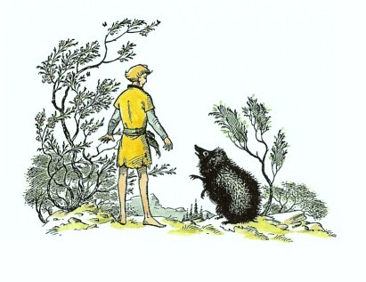
「おはよう。」とシャスタがいいました。「だけど、ぼく、おとなりさんなんかじゃないよ。このへんにきたのは、まるではじめてなんだ。」
「ええ？」とハリネズミは、けげんそうにいいました。
「ぼくは、ほら、アーケン国から山をこえてきたんだ。」
「ああ、アーケン国ですか。」とハリネズミ。「そりゃあ、ずいぶん遠いところだ。わたしなんか一度だっていったことがありませんよ。」
「それから、たぶん、」とシャスタ。「野蛮なカロールメン人たちが、ちょうど今ごろアンバードを攻めているっていう話を、きっとだれかがきいているはずだと思うんだけど。」
「まさか、そんな！」とハリネズミ。「まあ、考えてもごらんなさい、カロールメンといったら砂漠を越して何百キロも何千キロもさきの、まさにこの世のはてだっていうじゃありませんか。」
「きみが考えているほど、そんな遠くじゃないんだ。」とシャスタ。「それでアンバードが攻められているのをなんとかならないかなあ。きみたちの一の王にそのことを知らせなけりゃいけないんじゃないか？」
「もちろん、そりゃあなんとかしなけりゃあね。」とハリネズミ。「でも、なにせ、わたしはこれから昼寝にいこうとしたところでね。おや、こんにちは、おとなりさん！」
そのあいさつは、その小道のはたからひょいと顔を出したビスケット色のものすごく大きなウサギにむかっていったのでした。ハリネズミは、今シャスタからきいたばかりのことをすぐウサギに話しました。するとウサギは、それは大へんなニュースだ、だれかがだれかにその話をつたえて、なんとかしなければ、とあいづちをうちました。
そして、事はそのようにはこびました。頭の上の枝からくるもの、足もとの地面の中の小さなすみかからくるものというぐあいに、刻々と動物たちが集まってきて、とうとうウサギが五ひき、リスが一ぴき、カササギが二羽、ヤギ足のフォーンがひとり、ハツカネズミが一ぴきの集まりになり、みんながいちどきにしゃべりはじめ、全員がハリネズミの意見に賛成しました。ほんとうのところ、ナルニアの小さな森の住人たちは、魔女も冬もなくなり、一の王ピーターがケア・パラベルで世を治めている黄金時代に、なんの心配もなくしあわせにくらしているため、みんな少しばかりむとんじゃくになっていたのです。
しかし、やがて、もっと気のきいたふたりのものがこの小さな森にやってきました。ひとりは赤小人（つまり赤毛族の小人）で、名まえはダフルだとわかりました。もうひとりは雄鹿で、ぱっちりと開いたうるむような目で、お腹には斑点があり、二本の指でも折れそうな細くてしなやかな足をした美しい気品のある動物でした。
「なんだと！」小人は、そのニュースをきくなりどなりました。「それならそれで、なんだってみんなおしゃべりなんかして、ただ突っ立っているんだ？アンバードに敵襲だと！さっそく、ケア・パラベルに急報だ。軍隊を召集するんだ。ナルニアはリューン王を助けにいかなけりゃいかん。」
「ああ、」とハリネズミがいいました。「だけど、一の王は、ケア・パラベルにはおられないんですよ。北方の巨人たちをこらしめに出かけられたんですよ。そう、巨人といえば、おとなりさんたち、わたしは思い出すんですけどね──」
「使いにはだれがいくかね？」と小人が話をさえぎりました。「このなかで、わたしより早いものはだれかね？」
「わたしが早い。」と雄鹿がいいました。なんとおつたえしようか？カロールメンの軍は何人です？」
「ラバダシ王子をかしらに二百人。そして......」しかしその時にはもう、雄鹿の足は四本いちどに地面をけってとび出し、あっという間にその白い尾は、ずっと遠くの木の間に消えていきました。
「どこへいくつもりだろう？」とウサギ。「ケア・パラベルには一の王はいないのに、ねえ。」
「ルーシィ女王を探すさ。」とダフル。「そうすれば──おや！どうかしたのかな、この人間さんは？だいぶ青ざめてるぞ。こりゃあ、ぶったおれそうだ。きっと、死ぬほど腹ぺこなんだな。お若いの、いつ食べたまんまかね？」
「きのうの朝だよ。」とシャスタはよわよわしい声でいいました。
「さあさあ、それじゃあ、こっちへきなさい。」と小人は、すぐに、太くて小さな腕をシャスタの腰にまわして、抱えるようにしました。「おい、おとなりさんたち、みんな気がきかなかったな！さあ、お若いの、いっしょにいきましょう。朝ごはんだ！しゃべってるよりましだよ。」
小人は、じぶんをせめるようにぶつぶつひとりごとをいいながら、大あわてでシャスタをささえるようにして、ゆるい斜面を森の奥の方へひっぱっていきました。この時のシャスタにとっては、うんざりするくらいその道が遠く感じられ、森をぬけて木立ちのない山腹に出たときには、足ががくがくふるえていました。そこには、戸のあいた小さな家があって、煙突からは煙が出ていました。戸口までくると、ダフルは大声で呼びました。
「おーい、きょうだいたち！ 朝ごはんのお客だぞ。」
そういうそばから、ジュージューという油のやける音といっしょに、なんともいえないいいにおいがしてきました。そのにおいは、みなさんならきっと知っておいででしょうが、シャスタには生まれてはじめてのにおいでした。それは、ベーコンと卵とキノコをいっしょにフライパンでいためているにおいだったのです。
「そら、頭に気をつけて、」と小人がいったときには、もうシャスタが戸の低いくぐりにひたいをぶつけていました。「さあ、」小人はいいました。「おすわりなさい。あんたにはテーブルがちょっと低すぎるけど、椅子も低いですからね。そう、それでよろし。さあ、これがおかゆ──これがクリームいれ──ほれ、スプーン。」
シャスタがおかゆを食べおわらぬうちに、小人のふたりのきょうだい（名まえはロージンとブリクルサムといいます）が、ベーコンと卵とキノコをもった皿や、ミルクやトーストをテーブルの上にならべました。
どれもこれも、カロールメンの料理とはぜんぜんちがうので、シャスタにはなにもかもめずらしく思われました。シャスタは、キツネ色のうすく切ったものが何かさえも知りませんでした。なにしろ、トーストをまだ見たこともなかったのです。トーストにぬってある黄色のやわらかなものが何かも知りませんでした。カロールメンでは、たいていの場合、バターのかわりに油をぬっていたのです。それに、家そのものが、アルシーシュのうす暗い、むっとする魚くさい小屋とも、また柱の立ちならぶ、じゅうたんを敷きつめた、タシバーンの宮殿の広間ともまるでちがっていました。屋根は大そう低く、すべてが木でできていて、カッコウ時計があり、赤と白の格子縞のテーブルかけと、野の花をさした花びんがあり、厚いガラスのはまった窓には、どれも小さな白いカーテンがついています。小人の茶碗や皿やナイフやフォークを使わなければならないのが、えらくやっかいでした。つまり、お皿に少ししかのらないために、何度もおかわりしなければならず、シャスタの皿やコップにはしょっちゅうおかわりをよそうことになり、そのたびに小人たちは、「バターをどうぞ、」とか「コーヒーをもう一杯、」とか、「キノコをもう少し、」とか、「卵のいためたのなどはいかが、」などというのでした。そして、みんながもうこれ以上は食べられないというほどいっぱい食べおわったとき、三人の小人は、だれが洗いものをするかをくじ引きで決め、それにあたったのはロージンでした。そこでダフルとブリクルサムは、シャスタを外に連れだして、小屋の壁ぎわにあるベンチに腰をおろし、みんな足をなげだして、満足そうなため息をつき、ふたりの小人はパイプに火をつけました。もう草の露は消えて、日の光が暖かでした。これでそよ風がなかろうものなら、まったく暑すぎるような陽気でした。
「ところでお客さん、」とダフルがいいました。「この国のだいたいをお目にかけましょう。ここからは、ナルニアの南部がほとんど見わたせるんですよ。この景色は、わたしたちのちょっとした自慢のたねでしてね。あんたのはるか左手の方、そら、その丘のむこうの方にちょうど見えるのが西部の山脈ですよ。それから右手の遠くに見える円い丘が、石舞台の丘、そのさきに見えるのが──」
話をつづけようとしたダフルは、シャスタのいびきをきいてだまってしまいました。夜どおしの旅をしてきたつかれと、おいしい朝ごはんのおかげで、シャスタはぐっすり眠ってしまったのです。親切な小人たちは、それに気がつくと、シャスタを起こさないようにおたがいに目くばせをし、シャスタがそれほどつかれていなければ目をさましたであろうと思われるくらい長い間、ひそひそ話をしたりうなずきあったりしてから、立ちあがって、しのび足でそこを立ちさりました。
シャスタは、ほとんど一日じゅう、よく眠っていましたが、夕ごはんにまにあうころに目をさましました。その家のベッドは、どれもシャスタには小さすぎましたが、小人たちは、床の上にヒースでとてもいいベッドをこしらえてくれましたので、シャスタは、一晩じゅう、寝返りもうたず、夢も見ないで眠ることができました。あくる朝、みんなが朝ごはんをすませたちょうどその時、外からかん高いはっとする音がきこえました。
「ラッパだ！」小人たちはいっせいに叫んで、外にとびだしました。
ラッパがふたたび鳴りひびきました。タシバーンの角笛のようにばかに大きくひびくいかめしい音ではなく、そうかといって、リューン王の狩りの角笛のようにあかるく楽しいひびきでもなく、シャスタのはじめてきく澄んだ鋭く勇ましい音でした。音は森の方から東にむかって進んできました。やがてそのひびきにまじって、馬のひづめの音がきこえてきました。そしてまもなく、隊列の先頭が見えはじめました。
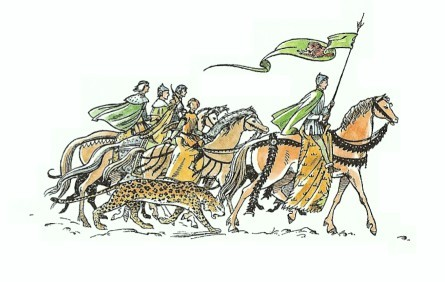
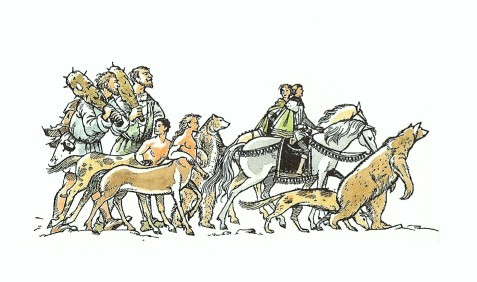
最初に姿を見せたのはベリダン卿で、緑色の地に赤いライオンをうがいたナルニアの大国旗をかかげ、栗毛の馬に乗っていました。シャスタは、すぐにそのひとに気がつきました。そのあとに三人のひとがつづき、そのうちのふたりは立派な軍馬にまたがり、もうひとりは小馬にまたがって、くつわをならべてやってきました。軍馬のふたりは、エドマンド王と、金髪の貴婦人で、このひとはかぶとをかぶってくさりかたびらを身にまとい、肩には弓をかけ、腰には矢のたくさんはいったえびらを下げて、とても陽気な顔つきをしていました（「ルーシィ女王だ。」とダフルがささやきました）。小馬に乗ったもうひとりはコーリンです。そのあとから本隊がやってきました。ふつうの馬に乗っている兵士たちもいますし、ものいう馬（この馬たちは、ナルニアが戦争にはいったというような特別の場合には、人が乗っても気にかけませんでした）に乗った兵士たちもいました。それにセントールたち、いかめしく手ごわそうなクマたち、大きなものいう犬たち、そして、しんがりには六人の味方の巨人がいました。ナルニアには、いい巨人たちもいるのです。しかし、シャスタは、その巨人たちが正しい方の味方だとは知りつつも、そっちの方をなかなか見られませんでした。物事には、なれるまでにとても時間がかかることもあるのです。王と女王がちょうど小屋の前にさしかかり、小人たちが低く頭をさげておじぎをしかけた時、エドマンド王が呼びかけました。
「では、おのおのがた、少し休んでお茶といたそう。」たちまちみんなはざわざわとして、馬からおりたり、食料袋を開いたり、話しあったりしはじめました。その時、コーリン王子がシャスタのところへかけよってきて、シャスタの両手をつかんで叫びました。
「やあ！ きみ、ここにいたのか！ じゃあ、無事だったんだね？よかったな。何かしてあそぼうじゃないか。なんて運がいんだろう。ぼくたち、昨日の朝、ケア・パラベルの港についたばかりなんだ。そして、ぼくたちがいちばん最初に会ったのが雄鹿のチャビィで、アンバードが攻められている話を全部知らせてくれたんだ。きみは、それじゃあ......」
「王子のお友だちはだれかな？」と馬からおりたばかりのエドマンド王がいいました。
「わかりませんか、陛下？」とコーリン。「ぼくとそっくりの、ほら、陛下がタシバーンでぼくとまちがえた男の子ですよ。」
「まあ、よく似てること。」とルーシィ女王が声をあげました。「まるでふたごのように。まあ、なんてすばらしいんでしょう。」
「陛下、どうかきいてください。」とシャスタはエドマンド王にいいました。「ぼくは裏切り者なんかではありません。ほんとうです。陛下のご計画をきいてしまいましたけれど、しょうがなかったのです。それを敵に話そうなんて夢にも思ったことはありません。」
「そなたが裏切り者なぞではないことは、もうわたしも知っている。」とエドマンドは、手をシャスタの頭においていいました。「しかし、もう裏切り者だと思われたくなかったら、ほかの人に知られたくないような話をしているのをきかぬようにすることだね。だが、もうよろしい。」
それからしばらくの間、みんなががやがやと話したり動きまわったりして、シャスタは、ちょっとコーリンやエドマンドやルーシィの姿を見うしないました。しかしコーリンは、そういつまでも目だたぬようにおとなしくしてらいれる少年ではありません。ほどなくシャスタは、エドマンド王が大声をあげているのを耳にしました。
「ライオンのたてがみにかけて、王子よ、それはひどすぎる！もう少しおとなしくできまいか。殿下は、わたしの軍隊全部をあわたせよりも血の気が多すぎるわ！あんたがわたしの指揮のもとにいるより、スズメバチが一連隊いるほうがまだましというものだ。」
シャスタが多勢の人の間をくぐりぬけて見るとそこには、とても怒ったエドマンド王と、ちょっとはずかしそうにしているコーリンがおり、地面には見たことのない小人がしかめ面をしてすわっていました。そしてふたりのフォーンが、その小人のよろいを脱がせていました。
「あの薬をもってきていたらよかったのに。」とルーシィ女王がいいました。「このくらい、すぐになおせたのですけど。一の王が、戦いにはそのようなものをやたらにもち歩くではない、非常の場合のためにとっておくように、ときつく申しておりますゆえ。」
事のおこりはこうでした。コーリンがシャスタと話しおわってからすぐ、王子は隊の中にいたソーンバットという小人にひじを引っぱられたのです。
「なんだい、ソーンバット。」とコーリンはいいました。
「王子殿下、」とソーンバットは、王子をわきに引っぱっていいました。「今日の進軍で、山道をぬけて、やがて殿下のお父上の城に着きます。夜になる前に、ひと戦あると思います。」
「そうさ。」とコーリンがいいました。「すごいじゃないか！」
「すごいかどうかはともかく、」とソーンバットはいいました。「わたしは、殿下が戦いにまきこれないように見張るようにと、エドマンド王からきつく申しつかっております。王子殿下は、ただ戦いをごらんになっていればよろしいのです。お年のゆかぬ殿下は、それで十分でございます。」
「なんだと、ばかばかしい！」とコーリンはおこりだしました。「ぼくはだんぜん戦うぞ。ルーシィ女王だって射手に加わるじゃないか。」
「女王陛下は、お心のままになされましょう。」とソーンバットはいいました。「けれどもあなたは、わたしがお守りすることになっております。わたしがもうよろしいと申しあげるまでは、わが小馬はおまえのそばを離れぬ──首半分といえども前には出ぬ──とおごそかに王子さまらしく、ちかってくださらなければ、陛下のおことばどおり、わたくしと手首をしばりあわせて、まるでふたりの捕虜のようにいっしょにまいらねばなりませぬ。」
「しばってみろ、なぐりたおしてやるぞ。」とコーリンはいいました。
「どうぞ、殿下のお手並みを拝見しましょう。」と小人がいいました。このことばは、コーリンのような少年にとってはてきめんでした。あっというまに、コーリンと小人の猛烈な組うちがはじまったのです。コーリンの腕のほうが長く、背もずっと高いのですが、小人の方が年もいっており、がんじょうなので、勝負は五分五分でした。そして勝負が決まらぬうち（足場の悪い山腹は、勝負にもっともまずい場所です）、運の悪いことに、ソーンバットがごろごろ石に足をとられて、まっさかさまにころんで鼻を打ち、おきあがろうとしたときに、足首をくじいていることに気がついたのです。それがまたひどいくじきかたで、少なくとも二週間は、歩くことも馬に乗ることもできそうにありませんでした。
「王子、じぶんのふるまいをよく考えなさい。」とエドマンド王はいいました。「いま戦いのはじまろうというときに、立派な戦士をひとり失ったのですぞ。」
「陛下、わたしがソーンバットのかわりに戦います。」とコーリンはいいました。
「ばかなことを、」とエドマンド。「そなたの勇気をうたがうものはないが、子どもが戦いに加わるのは、味方をあぶなくさせるだけですぞ。」
ちょうどその時、王はなにかほかのことで呼ばれて、そちらの方へいきました。コーリンは、その間に小人によくあやまると、シャスタのところへかけよってさやきました。
「早く、ここに空いてる小馬があるし、小人の脱いだよろいもあるよ。だれも気がつかないうちに着てしまうんだ。」
「そしてどうするんです？」とシャスタ。
「だって、そうすれば戦いに出られるにきまってるじゃないか！いやかい？」
「ああ──ええ、もちろん。」とシャスタはいいました。けれども、そんなことになろうとは考えてもみなかったので、背骨がちくちく痛むようなへんな気もちでした。
「そう、それでいい。」とコーリンがいいました。「頭にかぶって。こんどは刀をさげる帯だ。だけど、ぼくたち列のうしろの方にいて、ネズミのようにおとなしくしてなければだめだよ。戦がはじまったらしめたものだ。みんないそがしくて、ぼくたちのことなんか見ちゃいないさ。」
13 アンバードの戦い
十一時ごろには、全軍はふたたび山脈を左手に見ながら、西の方へ馬を進めていきました。コーリンとシャスタは、列のいちばんうしろから、巨人をすぐ目の前にしてついていきました。ルーシィとエドマンドとベリダンは、戦いの計画に夢中になっていましたが、それでもルーシィが一度口に出しました。「それはそうと、あのいたずら王子はどこにいるんでしょう？」しかしエドマンド王は、「前の方にはいないようだが、それだけでも結構なことだ。ほっとけばいいさ。」とこたえました。
シャスタは、じぶんのしてきた冒険のあらましを話し、馬の乗りかたを馬から教わったので、それで手綱の使いかたがわからないのだと説明しました。コーリンは、タシバーンからこっそり船を出したときのことをシャスタにすっかり話してきかせながら、手綱のとりかたを教えました。
「それで、スーザン女王はどこにおられるんです？」
「ケア・パラベルだよ。」とコーリンはいいました。「ルーシィ女王は、男か少なくとも少年のように元気がいいけれど、スーザン女王はそうじゃないんだよ。もっと、ふつうのおとなの女のひとみたいなんだ。弓はとても上手だけれど、戦さには出ないのさ。」
みんなの進んでいく山腹の道はだんだん狭くなり、右手の谷間もしだいに深くなってきました。とうとう崖のふちを一列になって進むようになりました。シャスタは、昨夜、じぶんがなにも知らずに同じことをしていたのだと思うと、ぞっと身ぶるいがしてきました。「だけど、もちろん、ぼくはぜったいに安全だったんだ。」とシャスタは思いました。「ライオンがぼくの左がわばかりを歩いていたのは、そのためだったんだ。ずーっとぼくと崖っぷちの間にいたんだな。」
やがて、道は崖から遠ざかって、左手に、南の方に曲がり、道の両がわには、深い森がつづいていました。一行は、その急な道を上へ上へとのぼりました。もしもあたりに何もなかったとしたら、その頂上からの眺めはさぞすばらしかったでしょうが、まわりがすっかり森になっているために、たまに、森の梢の上に岩山の頂が見えたり、ワシが一羽、二羽、青空高くまうのが見えたりするだけでした。
「あいつら、戦さのにおいをかぎつけているんだ。」とコーリンが鳥を指さしていいました。「もうじきわが軍が、やつらのための餌をつくることになるのをちゃんと知ってるんだ。」
シャスタは、なんていやな話だろうと思いました。
全軍が山道のいちばんせばまったところをすぎると、道はずっと低くくだり、ふたたびあたりが開けたところに出て、シャスタの眼下には、アーケン国ぜんたいが青くかすんでひろがり、そのむこうは砂漠かと思われるほどでした（シャスタにはそう感じられたのです）。しかし、もうあと二時間もすれば沈むと思われる夕日の光に目をさえぎられて、シャスタはいろいろなものがはっきりと見わけられませんでした。
ここで部隊は一時とまり、長く一列に並んでから、いろいろと隊の組かえをしました。いままでシャスタは気がつかなかったのですが、ネコ族（ヒョウやピューマやその同類です）を主力とする、とてもどう猛な顔つきをしたものいうけものたちの分隊があって、その分隊が部隊の左翼をうけもつことになり、足をふみならし、うなり声をあげながら、そちらに移動しました。巨人たちは右翼を受けもつように命令され、そちらへ移動する前に、いままで背中にしょってきたものをおろして、しばらく腰をおろしていました。シャスタは、巨人たちが運んできてこれからはこうとしているものを見て、長ぐつだとわかりましたが、それは見るからに恐ろしい、スパイクを打った重い長ぐつでした。それから巨人たは、すごく大きなこん棒を肩にになうと、戦闘配置へと前進しました。ルーシィ女王のいる弓矢隊の位置はうしろの方になり、射手たちは、まず弓をしなわせ、びゅーん、びゅーんと音をさせて弓弦をためしました。どこを見ても、だれもが帯をしめなおしたり、かぶとをかぶったり、刀をぬいたり、マントを投げすてたりしているのが見られます。今はもう、話をするものもいません。とてもおごそかで、不気味なひとときでした。「もうどうにもならないぞ。ほんとに、もうどうにもならないぞ。」とシャスタは思いました。
すると、やがて前方のはるかかなたから、何か物音がきこえてきました。多勢の人の叫び声と、どしーん、どしーんとつづくひびきでした。
「城門破りのつちの音だ。」とコーリンが小声でいいました。「やつらが城門をたたきこわそうとしているんだ。」
いまはコーリンまでがとても真剣な顔つきになっていました。
「なぜエドマンド王は出発しないんだろう？」とコーリンがいいました。「こうして待ってるのはやりきれないや。寒いしさ。」
シャスタは、じぶんがびくびくしているのがわからなければいいと思いながら、うなずきました。
いよいよ、ラッパの音！ 行動開始です。馬は早駆け、旗は風になびきます。部隊が低い丘の上に出ると、突然眼下に、門を正面にした塔の立ちならぶ小さな城の全景が見えました。あいにく堀はありませんでしたが、門はもちろん閉ざされており、城門の落とし格子もおりていました。城壁の上には、城を守る兵士たちの顔が、白く点々と見えます。城壁の下の方には、馬からおりたカロールメンの者たちが五十人ほど、大きな木の幹を、くり返しくり返し城門めがけてゆり動かしています。しかし、急に戦況が一変しました。ラバダシの部下の主力は、馬からおりて、いまにも城門に攻めかかるところだったのですが、ラバダシは、ナルニア人が丘の頂きから破竹のいきおいでくだってくるのを見たのです。このカロールメンの者たちは、おどろくほどよく訓練されていたにちがいありません。シャスタは、敵の一隊があっというまに全員ふたたび馬にうちまたがり、くるりとむきをかえるや、こちらにむかって進んでくるのを見ました。
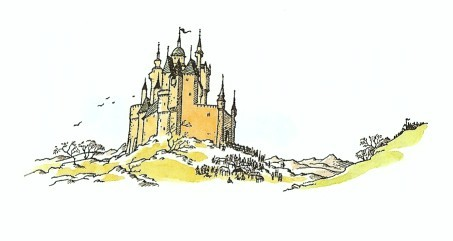
さあ、早駆けです。二つの軍勢のへだたりは、しだいにちぢまっていきます。どんどん早くなります。刀という刀は抜きはなたれ、楯という楯は鼻先にかまえられ、口々に祈りをとなえ、歯はことごとくくいしばられています。シャスタは、すっかり恐ろしくなりました。しかし、シャスタの心に急にこういう気もちがわいてきました。「もしここでこわがったら、一生、戦いのたびにこわがるようになるぞ。がんばるか、だめになるかだ。」
しかし、二つの軍勢がとうとうぶつかったときには、シャスタには、いったい何がどうなったのか、さっぱりわからなくなりました。おそろしい混乱と、ぞっとするような音だけだったのです。シャスタの刀は、まもなく手からすっぽり落とされてしまいました。手綱は、どうしたものかもつれてしまいました。シャスタは、じぶんがくらからすべり落ちそうなのを感じました。そこへ、槍がシャスタめがけてつき出され、これをよけようと頭を下げたとたん、シャスタは馬からまっさかさまにころげ落ち、左の指の関節を、だれかのよろいにいやというほどぶつけました。そして、それから──。
しかし、シャスタの目から見た戦さのようすを書いたってしょうがないでしょう。シャスタは戦いというものをほとんど知りませんし、その戦いでのじぶんの役目さえよくわかっていないのですから。そこで何がおこったかを、みなさんにほんとうによくわかってもらうには、みなさんを、そこから何キロかはなれた、あのおおいしげった木の下の静かな池に見いりながらブレーとフインとアラビスといっしょに腰をおろしている、南の国境の仙人のところへおつれした方がよいでしょう。
それというのは、この池こそ、仙人がじぶんの隠れ家の緑の築地の外の世界で何がおこっているかを知ろうとするときに見る、鏡の池なのです。タシバーンよりもずっと南の町の通りでおこったことや、遠い七子島にある赤間が港にどんな船が入港してきたか、街灯あと野から西の大森林で、どんな泥棒や野獣たちが暴れまわっているかなど、その時々のできごとがうつし出されるのを、仙人は、その池の鏡にまざまざと見ることができるのです。そして、この日仙人は、食べることも飲むことも忘れて、一日じゅう池からはなれようとしませんでした。アーケン国に大事件がおころうとしているのを知っていたからです。アラビスや馬たちも、池をじっと見つめていました。その池が魔法の池だということは、みなにもわかりました。そこには木や空がうつらずに、底の方に、こんとんとして何か色のついたものが、たえず動いているのです。けれども、ブレーやフインやアラビスには、何ひとつはっきりとは見えませんでした。仙人だけにはそれが見え、じぶんの見たものをつぎからつぎに二人に話してきかせました。シャスタがはじめての戦いに加わる少し前から、仙人はこのような話しだしていました。
「嵐が峰の山あいに、ワシが一羽......二羽......三羽、輪をえがいてまっているのが見える。そのうちの一羽は、ワシの中でもいちばんの年かさじゃ。あのワシはいつも、戦さがはじまろうとする時にしか出てこない。あのワシがときどきアンバードをうかがいにいったり、あるいは東の方にいったり、あちこちぐるぐるまわりながら飛んでいるのが見える。ああ、ラバダシとその部下たちが一日じゅう何をやっていたかが、やっとわかったぞ。あの者たちは、大きな木を切りたおし、枝をはらって、それを城門破りの槌に使うために、今、森から運んでくるところじゃ。昨夜の襲撃に失敗したので、何か考えたものと見える。ラバダシがもう少し利口なら、部下たちにはしごを作らせるだろうにな。しかし、それには時間もかかろうし、ラバダシは短気者じゃからな。だが、なんというばか者じゃろう！ラバダシのこんどの計画は早さとすきをつくことにあったはずだがら、最初の襲撃に成功しなかったら、すぐタシバーンにひき返さずばなるまいに。今、あの者たちは、城門破りの槌を目的のところに運んできた。リューン王の部下たちは、城壁からはげしく矢を射かけておる。カロールメンの兵が五人、たおれたぞ。だが、もうそれ以上はたおれぬようじゃ。頭の上に楯をかかげておるでな。ラバダシが今、何か命令をしておるわい。つきしたがっているのは、ラバダシがもっともたのみとする貴族たち、東の地方からきたどう猛なタルカーンじゃな。その者たちの顔が見える。トルムント城のコラジン、それにアズルー、クラマシ、唇のひんまがったイルガマス、それから、まっ赤なひげの背の高いタルカーンがひとり......」
「たてがみにかけて、それはわたしの前の主人のアンラジンです！」とブレーがいいました。
「しいっ、」とアラビス。
「今、槌を打ちはじめた。わしの目に見えるごとく、音もきこえたならば、さぞ大きな音であろうな。ひと突き、またひと突き、あれではどのような城門も、いつまでももちこたえられぬじゃろう。だが、待てよ！嵐が峰の方で何かあったとみえて、鳥もどがおどろいておる。何かが群れをなしてくるぞ。いま少しまて......まだ見えない......ああ、見えてきた。東の方の尾根すじは騎兵たちでまっ黒じゃ。風があの旗をなびかせて見せてくれればよいにな。どこのものたちかわからぬが、今、騎兵たちは尾根を越えた。おお！旗が見えたわい。ナルニアじゃ、ナルニアじゃ！赤いライオンの旗じゃ。まっしぐらに丘をくだっておるわ。エドマンド王が見えるぞ。弓矢隊のうしろに女のひとがひとり見えるが......おお！」
「どうしました？」とフインが息をとめたずねました。
「部下のネコたちが、左翼から全員突撃にうつったぞ。」
「ネコですって？」とアラビス。
「大きなネコやヒョウのたぐいじゃ。」とじれったそうに仙人がいいました。「見える。見える。ネコたちは輪をつくって、乗り手のおりた馬たちにむかっていくぞ。うむ、うまい先制攻撃だ。カロールメンの馬たちは、もはや恐ろしさに狂いはねておるわ。ネコたちは馬の群れと入り乱れたぞ。だが、ラバダシは陣形をたてなおし、百人ほどの部下たちを馬に乗せた。ナルニア人たちにむかってくるぞ。両軍の隊列のへただりは百メートルほどにすぎぬ。五十メートルじゃ。エドマンド王が見える、ベリダン卿も見えるぞ。ナルニアの軍の中に、いとけない子どもがふたりおる。王はまたどうして、あのような子どもらを戦に加えたものじゃろう？わずか十メートルじゃ......両軍はぶつかった。ナルニア軍の右手の巨人たちは、すばらしいはたらきぶりじゃ......だが、ひとりたおれたなあ......目を射ぬかれたようじゃ。軍の中央は入り乱れてごちゃごちゃじゃ。左翼軍の方がよう見える。ふたりの少年がまたいるぞ。なんたることじゃ！ひとりはコーリン王子じゃ。もうひとりは、二つの豆のように王子にそっくりじゃ。そなたたちのシャスタじゃな。コーリンは一人前に戦っておるぞ。カロールメンの者をひとり倒した。ああ、中央のあたりが少し見えるようになった。ラバダシとエドマンドがぶつかりあうところじゃったが、いきおいでまたはなれてしまった──」
「シャスタはどうしてます？」とアラビスがたずねました。
「おろか者め！」と仙人がうなるようにいいました。「かわいそうに、あの小さな無鉄砲なばか者め、やることが何もわかっていないのじゃ。楯がなんのやくにもたっていないぞ。からだの横がまる出しじゃ。刀の使いかたも、まったく知っとらん。おお、やっとわかったようじゃ。やたにふりまわしとる......じぶんの乗っている小馬の頭を斬り落としそうじゃ。気をつけんと、やがてそうなるぞ。ほれ、刀が手からうち落とされたわ。子どもを戦さに出すなぞ、まるで人殺し同然じゃ、五分間と生きておれんじゃろう。それ、頭をかがめ、このおろかものめ──おお、落ちた！」
「殺されたのですか？」三つの声が息をのんでたずねました。
「なんとも、わからん。」と仙人がいいました。「ネコたちは、なかなかやりおるわ。乗り手のない馬どもは、みなもう死んでしもうたか逃げたかどちらかじゃ。カロールメンのものたちは、もう馬に乗って退却できぬぞ。さあ、ネコたちが合戦のまっただなかに帰ってきたぞ。槌を打っとる兵たちにとびかかっておるわい。槌が地面に落ちた。おお、いいぞ！いいぞ！門がなかから開かれた。いよいよ出撃じゃろう。最初の三人がとび出してきたわ。まんなかがリューン王、その両がわがダールとダーリンの兄弟じゃ。そのあとからは、トランとシャール、それにコールが弟のコリンといっしょにつづくぞ。十人──二十人──およそ三十人、出てきたぞ。カロールメン勢がじりじり押しもどされよるわ。エドマンド王の刀さばきはみごとじゃ。いま、なで斬りでコラジンの首をはねたぞ。カロールメンのものたちが多勢武器をすてて森へ逃げていくわ。残った者たちはおいつめられた。巨人たちが右から、ネコたちが左から、そしてリューン王がうしろから追いつめてくるからな。カロールメン軍は、もうほんのひとにぎりになって戦いながら、じりじりとしりぞいていく。ブレー、そなたの主人だったタルカーンもやられたぞ。リューン王とアズルーが組みうちをしとる。王が勝ちそうじゃ──優勢じゃぞ──そら、王が勝った。アズルーがたおれた。エドマンド王もたおれたぞ──いや、またおきあがった。王の相手はラバダシじゃ。ふたりの戦っているのは、ちょうど城門の入口じゃ。カロールメンのもの数人が降参したぞ。ダーリンはイルガムートをやりおった。ラバダシがどうなったのか、ようわからぬ。城壁にもたれておるが、たぶん、死んだのじゃろう。だがしかとはわからん。クラマシとエドマンド王はまだ戦っておるが、ほかでは戦いがおさまった。クラマシが降参したぞ。戦いはおわった。カロールメン勢の完全なまけじゃ。」
シャスタは馬から落ちたとき、じぶんはもうだめだとすっかりあきらめてしまったのです。しかし、馬というものは、いくら戦いのさなかでも案外ひとを踏んだりしないものです。とても恐ろしい思いのうちに十分間ほどたちました。シャスタがふと気がついてみると、じぶんの間近にはもうあたりを踏んだりはねたりしていた馬の姿も見当らず、きこえてくる音も（まだ、ずいぶんいろいろな物音がしてはいましたが）、もう戦いの音ではありませんでした。シャスタは起きあがってあたりを見わたしました。いくらシャスタが戦いのことを知らないとはいっても、アーケン国とナルニアのひとたちが勝ったことはすぐにわかりました。カロールメンの人の生き残りといえば、捕虜ばかりです。城門は大きく開かれて、リューン王とエドマンド王が、城門破りの槌をはさんで手を握りあっていました。貴族たちの一群と、そのまわりにいる勇士たちの間から、息もつけないほど興奮した、しかしいかにもうれしそうな話し声がわきおこっていました。すると突然、その声はいっせいに笑いのどよめきとなってひろがりました。
シャスタは、どうにも動かないからだをやっと起こすと、何がそんなにおかしいのかと、その方にかけよって見ました。すると、たいへん奇妙なながめがシャスタの目にとまりました。あわれにもラバダシが、城壁につるしあげれたようになっているのです。地面から六十センチくらいのところで、足をやたらにばたばたさせていました。ラバダシのくさりかたびらは、どうしたのか物にひっかかって、腕の下の部分がひどく引っつりあがり、顔の中ほどまでずりあがっています。ちょっと見たところ、それはちょうど、小さすぎるシャツにむりをして首を通そうとしたときのかっこうそっくりでした。いったい、どうしてそんなことになったのか、あとになってあれこれ考えた結果をまとめてみますと（もちろん、このできごとは、とうぶんの間、みんなの話の種になったのですが）、戦いがはじまったばかりのとき、巨人のひとりがスパイクを打った長ぐつでラバダシを踏みつけようとして、やりそこなったのです。やりそこねたというのは、巨人はもともとラバダシを踏みつぶしてしまうつもりだったのが、そうはいかなかったのです。けれども、ぜんぜん失敗だったわけではなく、スパイクの一つが、ちょうどわたしたちがふつうのシャツを引き裂くように、くさりかたびらを引き裂きました。ですから、ラバダシが城門でエドマンドとむかいあったときには、もうそのくさりかたびらには穴があいていたのです。そして、エドマンド王がラバダシを城壁に追いつめていったとき、ラバダシは乗馬台に跳びあがって、そこからエドマンドにおそいかかろうと身構えたのでした。しかし、その場所に立つと、ほかの人たちより高いところにわざわざじぶんの身をさらすことになり、ナルニア軍の矢のいい的になると気がついて、もういちど下に跳びおりようとしました。そしてラバダシは、みえをきろうとして──たしかに、みえをきるにはきったのです──跳びおりざま、みるからにもったいぶった、いかにもすごみきった口調で、「タシの神の稲妻が天上からお見まい申すぞ」と叫びました。ところが、目の前はおおぜいの人でいっぱいで、跳びおりようにもすきまがなく、横ざまに跳びおりなければなりませんでした。それがまたおあつらえむきに、くさりかたびらの裂け目が城壁にある鉤にぴたりとひっかかったのです（昔、この鉤には、馬をつなぐ輪がはまっていたのです）。そして、まるで洗濯ものをほしたようにぶらさがってしまい、みんな大笑いとなったのでした。
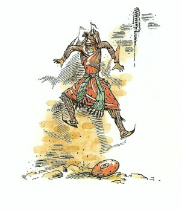
「エドマンド、わたしをおろしてくれ。」とラバダシはわめきたてました。「わたしをおろして、王らしく、男らしく戦え。それができぬような腰ぬけなら、ただちにわたしを殺すがよい。」
「よかろう。」とエドマンド王がいいかけますと、リューン王がそれをさえぎりました。
「はばかりながら陛下、」とリューン王はエドマンドにいいました。「それはおやめなされ。」そして、ラバダシの方にむいていいました。「王子よ、もしそなたが一週間前にそのように勝負を申し込まれていたなら、エドマンドのお国では、上は一の王から、下はいちばん小さなものいうネズミにいたるまで、だれひとりそれをことわりはしなかったであろう。じゃが、宣戦の布告もなく、この平和な時にアンバードを攻めたということは、そなたが裏切り者であってもはや騎士ではなく、名誉ある者のよく刀を交える相手でもなく、首つり役人のむちでもうけるにふさわしい者にほかならぬ。おのおのがた、王子をおろしてしばりあげ、のちほどいかにするかを申しわたすまで、なにかつれていくがよい。」
たくましいいくつかの手がラバダシの刀をもぎとり、そして城の中に連れこみましたが、その間じゅう、ラバダシはどなったり、おどしたり、ののしったり、泣きわめいたりしました。ラバダシは、苦しいことに耐えるのは平気でしたが、笑いものにされることにはがまんできなかったのです。タシバーンでは、ラバダシは、だれからもおそれられていましたから。
ちょうどそのとき、コーリンがシャスタのところへかけより、手をつかんでリューン王のところへひっぱっていきました。「いましたよ、父上、ここにいましたよ。」とコーリンが叫びました。
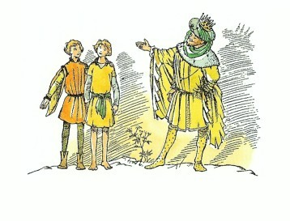
「さよう、とうとうまいったか。」と王は、声を大きくしていいました。「そなたはいいつけに真向からそむき、戦いに加わっておったのだな。父の心を傷ます不孝者め！そなたのような年には、手に太刀をとるよりも、しりにむちでも当ててた方がよほど似あうぞ！よいか！」とはいえ、コーリンをふくめて、そこにいならぶひとびとは、王がシャスタをたいへん誇りに思っているのがわかりました。
「陛下、どうかもう、それ以上はお叱りなされますな。」とダーリン卿がいいました。「陛下のご気性をうけついでおられぬようでは、とののご子息ではありますまい。王子がもし、このたびとは正反対のあやまちをおかしたというのでおとがめになるようでしたら、陛下はもっとおなげきになられるでしょう。」
「よし、よし、」と王は不満そうにいいました。「このたびだけは許してつかわそう。さて、それでは......」
さてそれから起こったことは、生まれてこのかた一度もなかったほど、シャスタをおどろかせました。シャスタはいきなり、力いっぱいリューン王に抱きしめられて、両頬にキスをされたのです。そして、王はふたたびシャスタをすわらせてからいいました。「子どもたち、ここにいっしょに立って、宮殿じゅうのものに見てもらいなさい。どうじゃな、おのおのがた、ふたりをよく見なされ。これでもうたがうものがおありかな？」
シャスタは、なぜみんながじぶんとコーリンをじっと見ているのか、なぜみんながそんなにうれしそうにいいそやすのか、まださっぱりわかりませんでした。
14 ブレーが利口な馬になったわけ
さあ、こんどはアラビスと馬たちのところへもどってみましょう。池を注意深く見まもっていた仙人は、たおれたシャスタが立ちあがったのも見ましたし、リューン王にどんなにやさしく迎えられたかも見ましたので、アラビスや馬たちに、シャスタは殺されなかったばかりか、たいした傷も負わなかったと教えてやることができました。けれども、仙人は見ることはできても、きくことはできないので、だれが何をしゃべっているのかわかりませんし、もう戦もおわってみんなが話をしはじめた今は、これ以上池を見ているまでもありませんでした。
あくる朝、仙人が家の中にいる間に、アラビスと馬たちは、これからどうしようと相談しあいました。
「もうわたしは、ここにこうしているのはたくさんですわ。」とフインがいいました。「あの仙人は、わたしたちにとてもよくしてくださるし、わたしもそれにはたいへん感謝しております。けれど、こう一日じゅう食べてばかりいて、運動もしないのでは、子どもにかわれる小馬みたいにふとってくるばかりですわ。ナルニアへ出かけようではありませんか。」
「いや、今日はやめましょうよ。フイン姫。」とブレーがいいました。「わたしは、何事も急ぐのはいやでしてね。そのうちに、ということにしましょう。どうでしょう？」
「わたしたち、ともかくシャスタに会って、さよならをいって......それに......それにあやまらなければ。」とアラビスがいいました。
「そのとおり！」とブレーがたいへん力をこめていいました。「わたしも、ちょうどそういおうと思っていたところですよ。」
「ええ、もちろんですわ。」とフインもいいました。「シャスタはアンバードにいると思いますわ。わたしたち、シャスタのところへいって、お別れをいわなければならないのは当然ですわ。それに、わたしたちのいく道の途中ですもの。すぐに出発したらいいと思いますわ。だいいち、わたしたちみんな、ナルニアへいこうとしていたのでしょう？」
「そう思うわ。」とアラビスはいいました。アラビスは、むこうについたら、いったい何をしたらいいのかと考えはじめ、いくらかさびしくなってきました。
「そのとおり、そのとおり。」とブレーはあわてていました。「けれども、なにも急ぐことはないと思いますよ。ね、わかるでしょう？」
「いいえ、ちっとも、」とフイン。「どうして、あなたはいきたくないんですの？」
「そ、そ、それは......ブルー、フー」とブレーは口ごもりました。「それはですね、いいですか、あなた......それはとても重大なことですよ......じぶんのふるさとへ帰るっていうことは......あのすばらしい社会へもどるんですからね......みんなにいい印象をあたえるということはぜったいに必要ですよ......これじゃあ、まだ本当のわたしたちらしく見えないでしょう？ね？」
フインは、馬らしい笑いかたでふきだしました。「しっぽのことでしょ、ブレーさん。やっとわかりましたわ。あなたのしっぽがもういちど生えそろうまで待つつもりなのね！ナルニアでは、みんなしっぽを長くしているかどうかも知っていませんのに。ブレーさん、あなたはまるでタシバーンのタルキーナのようにみえ坊なのね！」
「あなたはばかよ、ブレー。」とアラビス。
「いや、タルキーナ。ライオンのたてがみにかけて、わたしはそんなのじゃありません。」とブレーは、気にさわったようにいいました。「ただわたしは、じぶんのことと、仲間の馬を、それ相応に尊重しているのです。それだけのことですよ。」
「ブレー。」とアラビスは、刈ったしっぽのことなどにはあまり興味がなさそうにいいました。「ずいぶん前からききたいと思っていたけれど、あなたはなぜ、誓うときにいつも『ライオンにかけて』とか、『ライオンのたてがみにかけて』とかいうの？あなたはライオンをいやがってたはずよ。」
「そのとおりです。」とブレーがこたえました。「しかし、わたしのいってるライオンとは、あの魔女と冬を追いはらったナルニアの偉大な救い主のアスランのことですよ。ナルニア人は、みんなあの方にかけて誓うのです。」
「でも、それはほんとのライオンでしょう？」
「いや、いや、もちろんちがいますとも。」ブレーは、ちょっとびくっとしたような口調でいいました。
「タシバーンできく話では、どれもそれはライオンだっていってるわ。」とアラビスはいいかえしました。「それに、ライオンじゃないのなら、なぜあなたはライオンって呼ぶの？」
「そうですね、あなたの年ではちょっとわからないでしょうね。」とブレー。「わたしだってナルニアをはなれたのはほんの小馬のときでしたから、じぶんでもすっかわりわかっているわけではないのです。」
（このときブレーは、緑の築地に背をむけて話しており、アラビスとフインは、ブレーにむかいあっていました。ブレーは目を半ば閉じて、かなりえらそうな話しかたをしていました。そのためブレーは、フインとアラビスの顔の表情が変わったのに気がつきませんでした。フインとアラビスがぽかんと口をあけ、目を見開いたのもむりはありません。ブレーが話している間に、ものすごく大きなライオンが外からおどりあがって、緑の築地にうまく重心をとって乗っているのを見たのです。それは、ただふつうのライオンよりもあかるい黄色で、これまでにフインやアラビスが見たどのライオンよりも大きく、美しく、そしてひとをおそれさすものがありました。ライオンは、すぐに築地の内がわに跳びおりると、うしろからブレーに近づいてきました。音ひとつたてません。そして、フインもアラビスも、まるでこおりついたように、声をたてることもできませんでした）。
「もちろん、」とブレーはつづけました。「タシバーンのひとびとがライオンだといっているのは、ライオンのように強いとか、ライオンのようにどう猛（もちろん、わたしたちの敵にとってです）だとかいうくらいのいみでいっているのでしょう。まあ、その程度のことですよ。アラビスさん、あなたのような小さな女の子だって、それがほんとのライオンだと考えるなんてばかばかしいことぐらいはわかりますよね。まったく失礼な話ですよ。もしそれがライオンだとしたら、わたしたちと変わらないけものだってことですからね。やれやれ！」（そういって、ブレーは笑いだしました）「もしそれがライオンだというなら、四つの足があって、しっぽがあって、ほおひげが......ああっ、うー、フー、フー、助けてー！」
それというのは、ブレーがちょうど「ひげ」といったそのとき、アスランのひげのさきがブレーの耳をくすぐったからです。ブレーは、矢のように囲いのむこうすみにすっとびましたが、そこでこちらをむきました。築地は、ブレーが跳び越すには高すぎて、もうそれよりさきへは逃げられなかったのです。アラビスとフインはあとずさりをしはじめました。おそろしい沈黙の一瞬でした。
そのときフインが、がたがたふるえながらも奇妙な声で小さくいなないて、ライオンのところへ駆けよりました。
「どうぞ、」とフインはいいました。「あなたはたいそう美しくていらっしゃいます。よろしければ、わたしを召しあがってください。ひとにやしなってもらうより、あなたに食べられた方がよいのです。」
「やさしいわがむすめよ。」というと、アスラン、はフインのひきつったビロードのような鼻づらにキスをしました。「あなたは、いずれまもなくわたしのところへやってくるとわかっていた。あなたに喜びがおとずれよう。」
それからアスランは頭を上げ、声を高めていいました。
「さて、ブレー。あわれな自慢やの腰ぬけ馬よ、ここへくるがよい。もっと近くによれ、わが子よ、勇気をだしそこなったことは勇気をだしてやりなおせ。わたしにさわってごらん。においをかいでごらん。これがわたしの前足だ。これがしっぽだ。これがほおひげだ。わたしはほんもののけものだよ。」
「アスランさま、」とブレーはふるえる声でいいました。「ああ、わたしは愚か者でした。」
「若いうちにそれに気がつく馬は運のいい馬だ。人間もそのとおり。わがむすめ、アラビスよ、近くにくるがよい。そら、わたしの前足はビロードのようだ。こんどは引き裂いたりしないよ。」
「こんどは、とおっしゃいますと？」とアラビスがいいました。
「あなたに傷を負わせたのはわたしだ。」とアスランがいいました。「あなたが旅の間じゅうに会ったライオンは、このわたしだけだったのだ。わたしがなぜあなたを引き裂いたかわかるかな？」
「いいえ、ぞんじません。」
「あなたの背中のかき傷、その裂け口、そのうずき、その血は、あなたが薬をのませて眠らせたために、あなたの継母のどれいが背中にうけた笞のあと、裂け口、うずき、そして血とおなじものなのだ。あなたはおなじ思いを味わわなければならなかったのだ。」
「はい、わかりました。どうか......」
「いってごらん。」とアスラン。
「わたしのせいで、あのむすめにもっと悪いことでもおこりましょうか？」
「わが子よ、」とライオンがいいました。「わたしはあなたの話をしているのだ。あのむすめの話ではない。わたしはだれにでも、その人自身の話しかしないのだよ。」そして、ライオンは首をふると、くだけたあかるい声になっていいました。
「かわいい子らよ、楽しくおすごし。また近いうちに会おう。だが、その前に、ひとりだれかが訪ねてくるだろう。」ライオンは築地の上までひと跳びであがって、姿を消しました。
おかしなことに、アスランがいってしまうと、アラビスもフインもブレーも、おたがいにアスランのことを話そうとはしませんでした。みんなそれぞれ、静かな草の上を別々の方向にはなれて、ゆっくり歩きまわりながら、おもいおもいの考えにふけりました。
三十分ほどすると、二頭の馬は、仙人の用意したごちそうを食べに家の裏てに呼ばれていき、アラビスひとり、まだ思いにふけりながら歩いていますと、門の外から耳をつんざくようなラッパの音がして、はっとおどろきました。
「どなた？」とアラビスがいいました。
「アーケン国のコル王子殿下。」と外の声がいいました。
アラビスは、錠をはずして門をあけ、見知らぬひとびとを通すために少しうしろへさがりました。
矛槍をもった兵士ふたりが、まずはじめにはいってきて、入口の両がわに立ちました。そのあとに先ぶれとラッパ手がはいってきました。
「アーケン国のコル王子殿下が、アラビス姫にお目にかかりにこられました。」と先ぶれがいいました。それから、先ぶれとラッパ手がわきへ引きさがって一礼し、兵士たちが敬礼するなかを、王子そのひとがはいってきました。お供はみな引きさがり、王子のうしろで戸が閉められました。
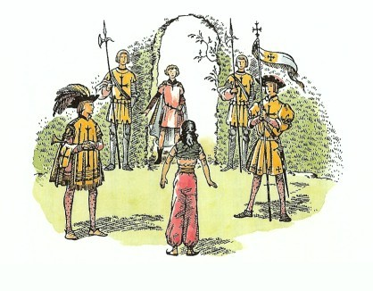
王子は頭を下げましたが、王子にしてははなはだぎこちない礼のしかたでした。アラビスはカロールメン式（わたしたちのやりかたとはまるでちがいます）に礼を返しましたが、もちろん、アラビスはそのやりかたを習っていただけあって、たいそうみごとなものでした。それからアラビスは顔をあげて、この王子がどんなひとかと見ました。
まだ少年といえる年ごろでした。少年は、頭になにもかぶらずに、ほとんど針金ほどの細さの黄金の環をその金髪にはめていました。王子の上着はハンカチーフのように薄い白の亜麻布でできているので、下に着ているあかるい赤い上着が、すけて見えていました。エナメル塗りの刀のつかの上においた左手には、ほうたいが巻いてありました。
アラビスは、二度めにその顔を見るや、息をのんでいいました。「まあ！シャスタじゃない！」
シャスタは、たちまちまっ赤になって、大急ぎで話しはじめました。「アラビス、きいてほしいんだ。ぼくがこんなかっこうをしてきたのは（それにラッパ手だとかなんかも）、ぼくが別な人間だと思わせたり、見せびらかしたり、そういうばかなことをするためだと思わないんでほしいんだ。だって、ぼくにとっては、あの古い服のままできた方がずっとよかったんだけれど、みんな焼かれてしまったし、それに、おとうさんがいうのに......」
「あなたのおとうさんですって？」とアラビス。
「どうもリューン王が、ぼくのおとうさんらしいんだ。」とシャスタ。「よく考えれば、ぼくにもわかったはずなんだ。コーリンがぼくにそっくりだもの。ぼくたちは、ふたごだったんだ。ああ、それにぼくの名はシャスタではなくて、コルなんだよ。」
「コルの方がシャスタよりすてきな名よ。」とアラビス。
「アーケン国では、兄弟の名まえはそういうふうになるんだ。」とシャスタ（というより、今はもうコル王子と呼ぶべきでしょう）がいいました。「ダールとダーリン、コールとコリンというようにね。そして、ぼくはコーリンときょうだいだから、コルなんだ。」
「シャスタ......じゃなかった、コル、」とアラビス。「いえ、だまって、わたし、すぐあなたにいわなければならいなことがあるの。わたし、いままで強情っぱりでごめんなさいね。でも、あなたが王子におなりになる前に、わたしは変わったのよ。ほとんうよ。あなたが引き返してきて、ライオンにむかっていったときなの。」
「あのライオンは、ほんとうはきみを殺そうとしたのじゃなかったんだ。」とコル王子はいいました。
「ええ、知っているわ。」とアラビスはうなずいていいました。ふたりとも、おたがいに相手がアスランのことを知っていることがわかり、しばらく押しだまって、まじめな顔つきになりました。
アラビスは、ふとコル王子のほうたいをした手のことを思いだしました。「そうだわ！」とアラビスは叫びました。「忘れていたわ！戦いに出たのね。それは傷？」
「なに、ほんのかすり傷です。」とコル王子は、はじめて少しばかり貴公子らしい口調を使いました。けれど、すぐにコルは笑いだしていいました。「ほんとのことをいうと、これはちゃんとした傷じゃあないのさ。へまなやつなら戦場の近くにいかないでもやるような、ほんのこぶしの皮のすりむきさ。」
「それでも、あなたは戦いに加わったのですもの。」とアラビス。「きっと、すばらしかったでしょうね。」
「考えていたのとはまるでちがうんだ。」とコル。
「でもシャ──あら、コルね、──あなたはまだリューン王のことも、どうしてあなたのことがわかったのかも話してないわ。」
「それじゃ、腰をおろそう、」とコル王子。「とても長い話だから。それはそうと、おとうさんはとてもいいひとだよ。もしおとうさんが王ではなかったとしても、おとうさんだとわかったときのうれしさは、おんなじか、ほとんどちがわなかったと思うな。だけど、教育だとか、いろいろいといやなことが待っているのさ。そうだ、きみは話をききたがっていたんだね。じつは、コーリンとぼくはふたごだったんだ。そして、ぼくたちが生まれて一週間してから、みながナルニアの年をとったかしこいセントールのところへ、祝福とかなんとかをうけに連れていったらしいんだ。そのセントールは、ほかの多くのセントールたちとおなじように、予言者だったんだ。たぶん、きみはまだセントールに会ったことはないね？昨日の戦いにもなんにんかいたよ。それはすばらしいひとたちだった。だけど、ぼくはまだセントールたちといっしょだと気が楽だとはいえないな。ねえ、アラビス。この北方の国々には、なれなければならないものがずいぶんたくさんあるようだね。」
「ええ、あるわね。でも、お話をつづけてよ。」とアラビス。
「それでね。セントールはコーリンとぼくを見ると、すぐにぼくを見つめて、いつかこの子はまさに亡びるまぎわのアーケン国を救うことになるだろう、といったそうだ。これをきいたぼくの父も母も、もちろん大よろこびだった。けれど、その話をきいたよろこばないものがいた。前に父の大法官をつとめていたバール卿という男だ。その男は何か悪いことをして......使いこめとかなんとかいうことばだったけれど、ぼくにはそのところがよくわからなかったんだ......それで父は、その男を宮殿から追い出さなければならなくなった。けれども、宮殿から追い出しただけで別にばつもくわえず、アーケン国にずっと住むことも許していたんだって。それだのに、その男はしんそこから悪いやつで、その後ティスロックにやとわれて、秘密の情報をたくさんタシバーンにおくっていた。だから、ぼくがアーケン国を非常の時から救うことになるという話をきいたとたんに、ぼくを追いはらわなければならないと決心したんだ。そこで、そいつは、うまくぼくをさらい出すと（どうやってさらったかははっきりわからないけれど）、まがり矢川にそって、海岸へ馬でくだっていったそうだ。そいつは、前もってすっかり手筈をととのえておいたから、じぶんの手下を乗り組ませた船がそこに待ちかまえていて、ぼくを乗せるとすぐ海にこぎ出した。父が気がついた時はもうおそかったけれど、それでも大急ぎであとを追いかけたんだ。父が海岸についたときは、バール卿はもう海に乗り出したあとだったけれど、船の姿はまだ見えていたそうだ。父が戦船の一つに乗りこんだのは、それから二十分とたたないうちだった。

その追跡は、たいしたものだったらしいな。バール卿のガレオン船を追って六日たち、七日めにその船との戦いとなったんだ。朝の十時から日のくれるまでつづいた大海戦だったそうだ（昨日の夕がた、その話をずいぶんきかされたよ）。味方の勢が、とうとうその船を分捕った。だけど、ぼくはその船にいなかった。バール卿自身も戦死していた。その手下のひとりがいうには、その朝早く、もう追いつかれることがはっきりすると、すぐにバール卿はぼくをじぶんの騎士のひとりに渡して、船につんであるボートで逃がしたというんだ。そして、そのボートは二度と見えなくなったそうだ。けれど、もちろんそのボートっていうのは、アスランが（どの話にもいつもアスランがそのかげにいるようだね）ちょうどぼくを拾いあげやすいように、アルシーシュのいる浜辺に乗りあげさせたものだったのさ。ぼくはその騎士の名が知りたいな。そのひとはぼくを死なせないようにするために、じぶんが飢え死にしたにちがいないんだからね。」
「アスランだったら、それはほかのひとの話だっておっしゃると思うわ。」とアラビスがいいました。
「それを忘れていたよ。」とコル。
「でものあの予言はどういうことになるんでしょう。」とアラビス。「それに、あなたがアーケン国を救うことになる危機って何かしらね。」
「それが、」とコルは、ひどく困ったようにいいました。「みんなはもう、ぼくがそれをやりとげたと思っているらしいんだ。」
アラビスは両手をたたきました。「ほんと、そうだわ！わたしってなんてばかでしょう。ほんとにすばらしかったわ！あのラバダシが二百騎をひきつれてまがり矢川を渡ったというのに、まだあなたの知らせがつかなかったのだから、あの時ほどアーケン国があぶなかったことはないわ。得意に思わなくてっ？」
「ぼく、ちょっとこわい気がするよ。」とコルはいいました。
「それじゃあ、あなたはこれからアンバードに住むわけね。」とアラビスは、少しうらやましそうにいいました。
「ああ！」とコルはいいました。「もう少しで、ぼくがきた用事を忘れるところだった。父ぎみはあなたにきていただいて、いっしょに住もうといっているんだ。父ぎみがいうには、宮廷には（なぜだか知らないけれど、みんな宮廷って呼んでいるんだ）、母ぎみがなくなられてから女のひとがずっといないんだそうだ。そうしようよ、アラビス。きっと、父ぎみを好きになると思うよ。それにコーリンもさ、ふたりともぼくみたいじゃないんだ。みんな、ちゃんとした育ちだからね。心配することはないよ......」
「ああ、やめてちょうだい、そんなこというとほんとのけんかになるわ。もちろん、いきますとも。」とアラビスがいいました。
「それじゃあ馬たちに会いにいこう。」とコル王子。
ふたたびであったブレーとコルのよろこびは、それはたいへんなものでした。ことに、ブレーはまだずいぶんしずんだ気もちでいたところだったものですから、アンバードにすぐ出発することに賛成しました。ブレーとフインはその翌日、ナルニアにむけて立つことになりました。四人はそろって仙人に心のこもった別れをつげて、またすぐに会う約束をしました。その翌日、朝もなかばのころには、もう出発していました。馬たちは、アラビスもコルも乗っていくものとばかり思っていましたが、コルが、みんなじぶんの力のかぎりをつくさなければならない戦いの時でもなければ、ナルニアでもアーケン国でも、ものいう馬に乗るひとはだれもいないことを、馬たちに話してきかせました。
その話から、あわれなブレーは、ナルニアのしきたりについてじぶんがいかに少ししか知らず、じぶんがどんなひどいまちがいをしでかすかもしれないと、あらためて思いしらされました。そのため、フインが楽しそうに歩いているのに、ブレーの方は足を運ぶごとにますます心が落ち着かなくなり、ますます気が弱くなっていきました。
「ブレー、元気を出せったら、」とコルがいいました。「きみよりぼくの方がずっとたいへんなんだよ。きみはこれから教育されるわけじゃない。きみが思うぞんぶんナルニアの丘を駆けたりころがったりしている間にも、ぼくの方は読み書きや、紋章学やダンス、歴史や音楽なんかを勉強しなければならないんだ。」
「でも、そこが問題なのですよ。」とブレーはうめき声でいいました。「ものいう馬がころがったりするでしょうか？もしその馬たちがしないと考えてごらんなさい。あれをやめなければならないなんて、とてもわたしにがまんできませんよ。フインさんはどう思いますか？」
「わたしはいずれにしてもしますよ。」とフインはいいました。「あなたがころがろうがころがるまいが、どの馬だって、ふたかけの角砂糖ほどにも気にとめやしませんわ。」
「お城はもう近いのですか？」とブレーがコルにいいました。
「このつぎの曲がり角をまわればね。」と王子。
「それじゃあ、」とブレー。「今ここで、思いきりひところびしてやろう。これが最後になるかもしれないからなあ。ちょっと待っててくださいよ。」
荒い息をはきながら、ワラビの葉をあちこちにくっつけてブレーがふたたび起きあがったのは、それから五分とたっていませんでした。
「さあ、これでいいですよ。」とブレーは深くしずんだ声でいいました。「指揮をとってください、コル王子。ナルニアさして、北の方さして。」
けれどもブレーは、長い間ゆくえ不明のとらわれの身が、いざ、ふるさとへもどり、自由になろうというのに、葬式にいく馬のようでした。
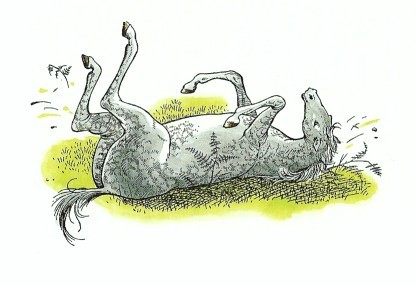
15 愚劣王ラバダシ
道がもう一つ曲がったところで林がつき、開けた緑の芝原のむこうに、北風をさえぎる高い裏山の森を背にして、アンバードの城が見えてきました。アンバードの城はいかにも古めかしく、その城壁は落ちついた赤茶色の石で築かれていました。
コルたちが城門までいきつかぬうちに、リューン王が出迎えに出てきました。王は、またとないほど古ぼけた衣服を着ていて、アラビスが考えていた王さまとは似ても似つかない格好をしていました。というのは、ちょうどリューン王は、猟犬係りをつれて犬小屋の見まわりから帰り、ちょっと犬くさい手を洗っただけのところだったのです。しかし、アラビスの手をとって一礼したときの王の態度は、いかにも王者らしい威儀にあふれていました。
「わが姫君、」と王はいいました。「あなたを心からお迎えいたしますぞ。もしわが妻がこの世にあったら、あなたをより楽しくもてなすことができたであろうが、わしでは、心ばかりでうまくはできぬ。きけばあなたは不遇の目にあい、父上の家を逃れてきたとのこと、さぞおつらいことであろう。あなたの冒険も、数々の武勇もすべてわが子コルからきていますぞ。」
「それはわたくしではなく、すべてコル自身のなさったことなのです。陛下。」とアラビス。「ほんとにコルは、わたくしを助けるためにライオンにとびかかっていったのですから。」
「え、なんですと？」とリューン王は顔をかがやかせていいました。「そんな話は、まだきいておらぬが。」
そこで、アラビスはその話をしました。コルは、その話をじぶんからいうわけにはいかないと思っていたものの、とてもその話を知ってもらいたかったのですが、今アラビスの話しているのをきいて、そんなにうれしいとも感じませんでしたし、実のところ、むしろばかばかしいような気がしました。しかし、コルの父リューン王は、それをきいて心から喜び、それからの二、三週間というものは、ひとごとにその話をしてきかせましたから、コルはそんな事件がなければよかったとさえ思ったくらいです。
それから王は、フインとブレーにむかって、アラビスに対するとおなじように礼儀正しく家族のことや、つかまえられる前にナルニアのどこに住んでいたかなど、いろいろとたずねました。フインもブレーも人間から──おとなの人間から、一人前に話かけられるというようなことが今までなかったものですから、どうもうまくしゃべることができませんでした、アラビスやコルとの間では平気なのですが。
まもなく、ルーシィ女王が城から出てきて、いっしょになりました。リューン王がアラビスにいいました。「姫よ、この女王陛下はわしらの愛する友だちで、今あなたの部屋べやをわしよりも上手にととのえてくださったところじゃ。」
「いかがですか、きてごらんになりませんか？」とルーシィは、アラビスにキスをしていいました。ふたりはすぐに仲よしになり、そしてさっそくつれだって、アラビスの寝室や今や、あるいはアラビスのために用意した衣服のことなど、女のひとたちがこういうときにいつも話ししあういろいろな話をしながら立ちさっていきました。
テラスの上での昼食のあと（昼食は小鳥のひやし肉とけもののひやし肉で作ったパイと、ぶどう酒とパンとチーズでした）、リューン王が眉毛をもしゃもしゃとこすり上げ、ためいきをつきながらいいました。「やれやれ、おのおのがた。あのラバダシというなさけない奴がいまだにとらわれの身で、わしらのところにいるのじゃが、こいつをなんとかせにゃならぬわい。」
ルーシィは王の右にすわり、アラビスは王の左にすわっていました。エドマンド王はテーブルの一方の端にすわり、ダーリン卿がもう一方の端にむかいあってすわりました。ダールにベリダン、そしてコールにコリンは、王と同じ側でした。
「陛下には、あいつの首を打ち落とす権利がじゅうぶんございます。」とベリダン。「あいつのおこなった襲撃は、まさにやみ打ちと同断でございます。」
「まさにそのとおりです。」とエドマンド王。「しかし裏切り者とて改心することがある。わたしはそういう者を知っています。」こういいながらエドマンドは、考えこむようすでした。
「ラバダシを殺すということは、ティスロックにむかって宣戦布告をするようなものです。」とダーリン。
「ティスロックごときがなんじゃ。」とリューン王。「かれの強みは数においてまさるだけのこと。数をたのんだとて、ぜったいに砂漠を横切ってこられまい。だが、わしは、冷静な気もちでひとを殺すことは（たとえ裏切り者であろうとも）、性にあわぬわい。戦いの最中にあの者の首を打ち落とすなら、どうということはないが、しかし、それとはちがうでのう。」
「わたくしの考えといたしましては、」とルーシィ。「陛下はもう一度だけあの者に機会をあたえてはいかがかとぞんじます。こんごはぜったいに正々堂々とやると誓わせて、解き放ってやっては。あの者とて、あるいは約束を守らぬでもないでしょう。」
「悪ザルでも正直になろうというものさ。いもうとよ。」とエドマンド「だが、ライオンの名にかけて、もしふたたび約束をやぶったなら、そのときにこそ、われらのうちだれかがきゃつの首を一刀両断に打ち落としてくれるであろう。」
「ひとつこころみるとしよう。」と王はいいました。そして、従者のひとりにむかい、「とりこをつれてまいれ。」
ラバダシは鎖につながれて、みなの前に引き出されました。その顔つきは、だれの目にも、くさい土牢の中で、のまずくわずの一夜を明かしたかのように見えました。しかし実際には、ラバダシの閉じ込められていた部屋はとても居ごこちのよい部屋で、しかも上等な食事があたえられていたのです。しかしこの男は、心のそこからふてくされていましたので、食べ物にふれようともせず、一晩じゅう、足をふみならしたり、わめいたり、あくたいをついたりしていましたので、顔つきがよかろうはずがありません。
「殿下にいまさら申すまでもないが、」とリューン王がいいました。「国法にのっとり、かつ思慮ある政策にもとづき、われらは、いかなる人間が他の人間に対して有する権利にもまして、そなたの首をちょうだいする権利を有するのじゃ。しかしながら、そなたの若さと、おそらくはどれいと暴君の国でえたものと思われる礼儀も作法もしらぬ育ちの悪さとに免じ、そなたをそのまま無事にがしてつかわそう。ただし、条件がある。その第一は......」
「この蛮族イヌめ！」とラバダシがはき出すようにいいました。「きさまはいったいこのおれが、きさまのいう条件などをきくと思っているのか？フン！育ちがどうのと大きなことをぬかすが、おれの知ったことか。鎖につながれた人間相手には、勝ってなことがいえるわい。このいまいましいなわをほどいて、おれに剣を渡すがいい。その上でだれなりと、おれに議論をふっかける気があれば、やってみろ。」
ほとんどすべての貴族たちがさっと立ちあがり、コーリンが叫びました。
「父ぎみ、あいつをたたきのめしていいでしょうか？」
「しずかに！ おのおのがた！」とリューン王がいいました。「このようなかんしゃくもちのたわごと如きに気をたかぶらせずに、もっと落着きめされ。すわりなさい、コーリン。でなくば、この席を去れ。では、殿下、もう一度わしの条件をきいてもらおう。」
「野蛮人や魔法使いから条件などききたくないわ。」とラバダシ。「何びともおれの髪の毛一本ふれることはならんぞ。いささかなりとも、このおれにはずかしめをあたえてみよ。ナルニア人とアーケン人の血で海をこしらえてくれるわい。今とてティスロックの復しゅうは恐ろしいぞ。殺すなら殺してみよ。この北の国々を焼きほろぼし、苦しめつくすそのさいごのさまは、このさき千年の間、世の恐ろしい語りぐさとなるであろう。見ておれ！見ておれ！見ておれ！タシの神の稲妻が天上から見舞うぞ！」
「天上から落ちるまえに、また鉤にひっかかるんじゃないか？」とコーリン。
「つつしみなさい、コーリン。」と王。「そなたより強い相手でないものに対し、あざけりのことばを口にすることはならぬ。強い者にむかってならよろしいが。」
「おろかもののラバダシ......。」とルーシィがため息をつきました。
つぎの瞬間、コルは、テーブルについていたひとたちがみんな立ちあがり、じっと身うごきもしなくなったのを見て、どうしたのだろうとふしぎに思いました。しかし、たちまちそのわけがわかりました。だれも気がつかぬうちに、アスランがきていたのです。ラバダシは、じぶんとじぶんを責めてる者たちの間に、巨大なライオンの姿がゆっくりと分けいってきたとき、びっくり仰天しました。
「ラバダシよ。」とアスランがいいました。「よくきけ、あんたの運命はいよいよせまった。しかし、まだ逃れるすべはある。あんたの誇り（誇るに足るものをおもちかな？）をすてなさい。あんたの怒り（あんたに悪いことをしたひとがあったかな？）を忘れなさい。そしてこのりっぱな王たちのお慈悲をすなおにうけなさい。」
するとラバダシは、目玉をぐりぐりさせ、口をフカのように大きくあけて、歯をむき出し、ぞっとするような陰気な笑いを浮かべたまま、両方の耳を上下に動かしました（いっしょうけんめいやれば、だれにでもできます）。カロールメンではラバダシがこのしくざをすると、いつもききめがありました。ラバダシがこういう顔をしてみせると、勇士たちはふるえあがり、なみのひとたちは地面に打ち伏し、そして気の弱いひとたちのうちには気絶してしまう者もありました。しかしラバダシは、じぶんの命令とあればひとを生きゆでにすることもできるということを知っている相手でなければ、そう簡単におどしがきくものでないということがわかっていなかったのです。かれのしかめ面も、このアーケン国では通用しませんでした。実のところ、ルーシィはその顔を見て、ラバダシが気分が悪くなったのではないかしらと思っただけでした。
「悪魔！ 悪魔！ 悪魔！」と王子は金切り声を出しました。「おまえを知っているぞ。おまえは、ナルニアのいまわしい悪魔だ。神々の敵だ。この薄気味悪いばけものめ、おれさまを知っているか。おれさまは、ぜったいにして侵すべからざるタシの神の子孫だ。おまえには、タシの神のたたりがあるぞ。サソリの形をした稲妻がおまえにふりそそぐぞ。ナルニアの山々はこっぱみじんだ。そして......」
「気をつけよ、ラバダシ。」とアスランは静かにいいました。「あんたの運命はいよいよせまった。そら、もう戸口まできた。かけがねがはずされたぞ。」
「天よ、落ちよ。」とラバダシが絶叫しました。「地よ、裂けよ。血と炎で世界をほろぼせ。しかし、よいか。おれはあくまでやめないぞ。この蛮人の女王を、イヌ畜生のむすめを、髪の毛をひっつかんでわが宮殿までひきずっていくまでは......」
「時がきた！」とアスランがいいました。そして、みなが笑いだしたのを見たラバダシは、恐怖のどん底に落ちました。みんな笑いださずにはおれなかったのです。ラバダシ、ずうっと耳を動かしつづけていたのですが、アスランが「時がきた！」といったとんたに、その耳の形が変わりはじめたのです。耳はだんだん長くなり、さきがとんがってきて、灰色の毛でおおわれてしまいました。そして、一同がどこかで見たような耳だと思っているうちに、こんどはラバダシの顔が、変化しはじめました。顔はだんだん長くのび、上の部分が厚くなり、目は大きく、そして鼻は顔の中にむかって沈んでいき（あるいは、顔の方がふくれあがってきて、全体が鼻のようになったのでしょうか）、その顔には、くまなく毛がはえてきたのです。そして、腕は長くのびて前にたれ、手のさきが地面につくと、その指さきは、もはや指ではなくひづめにかわっていました。かれは四つ足で立ち、着ていたものも消えてなくなりました。一同はますます声をあげて笑いつづけました（笑わずにはいられなかったのです）。なぜなら今までのラバダシは、ほんとにもうまちがいなく、ロバになってしまったからです。おそるべきことに、ラバダシは人間の姿でなくなった後も、ほんのすこしの間は人間のことばでしゃべっていたのですが、じぶんのすがたが変わってしまったことに気がついて、こう叫びました──
「ああ、ロバはやめてくれ！ おねがいだから！せめて馬ならいいんだが......うまならいいんだが......う、う......いいん......ウイーン、ウイーン。」こうして人間のことばはロバのいななきに変わってしまったのです。
「さあ、ラバダシ、よくきくがよい。」とアスランがいいました。「正義には情がともなうであろう。あんたはいつまでもロバでいることはないぞ。」
ロバは、もちろん、このことばをきくために耳を前の方にかたむけました。そして、そのようすがまたとてもおかしかったものですから、みんなはいっそう大きな声で笑いました。
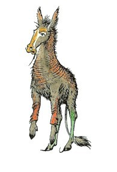
「あんたはタシの神に願った。」とアスランはいいました。「したがって、あんたの姿は、タシの神殿においてもとどおりになるだろう。今年の秋の大祭に、あんたはタシバーンのタシの神の祭壇の前に立たねばならぬ。そして、そこで、タシバーンのあらゆるひとびとの見ている中で、あんたからロバの姿がはがされ、タシバーンのひとびとは、あんたがラバダシ王子であることを知ることになろう。しかし、あんたのいのちがあるかぎり、あんたがもし十五キロ以上タシバーンの大神殿から離れたならば、その時はたちどころに、ふたたびロバの姿になるぞ。そして、ふたたびこの姿にもどったときは、もはやそのさき人間にはもどるまい。」
しばらくの沈黙ののち、みなはわれにかえって、まるでゆめからさめたようにたがいに顔を見あわせました。アスランは立ちさっていました。けれども、あたりや草の上は輝きにみち、みなの心にはよろこびがあふれていました。ですから、アスランの出現はゆめではなかったことがわかりました。それに、なによりもまず、目の前にロバがちゃとんいるのですから。
リューン王は、たぐいなくやさしい心のもち主でしたから、じぶんのかたきがこのような情けない姿になっているのを見て、心の怒りをすっかり忘れさりました。
「殿下よ、」と王はいいました。「このような大事にあいなって、なんともお気のどくのいたりじゃ。わしらが手によってなったことでないことは、殿下ご自身がごぞんじのとおり。もちろん、わしらはよろんこでアスランの教えた......そのう......治療法をおこなうため、殿下をタシバーンまでお送りする手配をいたしますぞ。最上の家畜輸送船──もっとも新鮮なニンジンとアザミの葉──ただ今の殿下にかなうかぎりの満足がいくようにいたしますぞ。」
しかし、ロバは耳がきこえなくなるほど大きな声でいななき、護衛のひとりをねらいうちにけりましたので、この親切な申し出をありがたくないと思っていることが明らかでした。
さてここで、ラバダシの話をはやく切りあげるため、王子が結局どうなったかを申しあげましょう。ラバダシは（ロバは、といいましょうか）、船で首尾よくタシバーンに送りかえされ、秋の大祭にタシの神殿にひき出されて、ふたたび人間の姿にもどりました。しかし、もちろん、四千人から五千人ものひとびとがロバから人間へ変化していくありさまを見ていましたので、この出来事をないしょにしておくことはできない相談でした。そして、ティスロックの死後、ラバダシがそのあとを継いでティスロック王となってからは、カロールメンではいまだかつてない平和好きな王としてすごしました。どうしてかといえば、タシバーンから十五キロ以上遠くにいく勇気はなかったので、みずから戦争に出ることができなかったからです。それに、王は、じぶんの部下のタルカーンたちが、じぶんをさしおいて、戦争でてがらをたてることを好みませんでした。かれらに、ティスロック王朝をうばわれたくなかったのです。このように、原因は身勝手からきているのですが、それでも、カロールメンの周囲のすべての小さな国々にとって、まことにありがたいことでした。ところで王国のひとびとは、王がロバだったことをいつまでも忘れませんでした。この王が国を治めている間、面とむかっては、ひとびとは平和王ラバダシと呼びましたが、王の死後や王のいないところでは、愚劣王ラバダシと呼びました。カロールメンのことがよくかかれている歴史の本（近所の図書館をさがしてごらんなさい）を読めば、きっと愚劣王ラバダシの名で出ていますよ。そして、カロールメンの学校では、今でもとんでもないばかげたことをしでかした者は、よくラバダシ二世といわれます。
ところで、アンバードでは、これからほんとうの楽しみごとがはじまろうという前に、ラバダシをうまくかたづけることができたので、みんな大よろこびでした。ほんとうの楽しみごとというのは、その夜、月の光に加えてさらに何十ものちょうちんをともした城の前の芝生の上で、盛大に開かれた祝宴なのです。ブドウ酒はこぼれ、話は花をさかせ、冗談がとびかううち、やがて静かにとつげられると、王室づきの詩人がふたりの胡弓弾きとともに人々の円陣のまんなかにあゆみ出ました。アラビスとコルは、どうせ退屈なことがはじまるのだろうと思いました。なぜなら、このふたりが知っている詩というのは、みなさんももうごぞんじのあのカロールメン調の詩だけだったからです。ところが、ひとたび胡弓がひとゆみかきならされたとたんに、ふたりは頭の中に火矢が打ち上げられたように感じました。詩人はむかしのすぐれた語りもの、うるわしのオルビンの歌をうたい、いかにしてオルビンが巨人二つ根と戦ってこれを石に変え（二つ根山はこうしてできたのです──この巨人には首が二つありました）、めでたくリルン姫を花嫁にむかえたかをうたってきかせました。うたいおわっても、みんなもう一度はじめからとせがむのでした。つぎにブレーが、歌はうたえませんが、ザリンドレーの戦いの物語を話しました。それからルーシィが、あの衣装だんすの話をくりかえし（アラビスとコルを除いては、みなもうなん度もきいた話ですが、それでももう一度とみながたのんだのです）、どうやってルーシィ、エドマンド王、スーザン女王、それに一の王ピーターがはじめてナルニアにやってきたかを物語りました。
まもなく、おそかれはやかれきたるべき時がきて、リューン王が、若いひとたちはもうやすむ時間だと告げました。「よいか、コル王子よ、」と王はつけ加えました。「あすは、わしといっしょにきて城の隅々まで見てまわり、城の強いところと弱いところを調べるのじゃ。わしがこの世を去った後は、その方が主としてこの城を守ることとなるのじゃからな。」
「しかし父ぎみ、そのときはコーリンが王となるのではありませんか。」とコル。
「そうではない、若者よ。」とリューン王がいいました。「そなたこそわしの世継ぎじゃ。王冠はそなたのものぞ。」
「しかし、わたしはそれを望みません。」とコル。「わたしは、そんなことよりも──」
「コル、そなたやわしが望もうと望むまいと、かかわりのないこと。法の定めがそうなっておるのじゃ。」
「しかし、もしわたしたちがふたごなら、ふたりの年は同じではありませんか。」
「いや、」と王は笑いながらいいました。「ふたごとて、どちらかが先に生まれるはずじゃ。そなたはコーリンよりまる二十分年上であるぞ。そしてそなたは、コーリンにくらべてさして差はないにせよ、まさっていると思うがのう。」そして、コーリンの方におどけた目つきを送りました。
「けれど父ぎみ、どちらかお好きな方をつぎの代の王にすることはできないのですか？」
「それはならぬ。王は法のもとにあるのじゃ。王は法によって存在するのじゃ。番兵が持ち場をはなれられぬごとく、そなたも王位からのがれる力はもたぬ。」
「やれやれ、」とコル「わたしはちっともなりくたないのに。ね、コーリン、ほんとうにすまないな。わたしがあらわれたために、コーリンが王の座につけなくなるようになろうとは、ゆめにも思わなかった。」
「ばんざーい！ ばんざーい！」とコーリン。「王さまにならなくてすむんだ。王さまにならなくてすむんだ。いつまでも王子でいられるんだ。王子さまっていうのは、いつも楽しくしていられるんだぞ。」
「コル、そなたのおとうとのいうとおり、いやそれ以上であるぞ。」とリューン王。「なぜならば、はげしい攻め戦さではいつも先頭に立ち、必死の逃げ戦さではいつもしんがりをつとめ、そして国内に飢きんがあれば（つまらぬことがつづく年にはよくあることじゃが）、国民のだれよりも貧しい食べ物を食べながらも、だれよりりっぱな衣服を着てだれより大声で笑ってみせる、これが王というものなのじゃ。」
ふたりの少年が寝るために二階にあがってから、コルはコーリンになんとかならないものだろうかとたずねました。するとコーリンがいいました。
「そんなこともう一度いってみろ。ぼく、なぐりたおしちゃうぞ。」
それからのあたりは、なにごとにも、二度といいあいをすることはありませんでした、といってこの話がおしまいになればよいのですが、どうもそれでは本当のことにはならないようです。本当のことをいえば、コルとコーリンは、少年がふたりよればいつもやるように、口げんかやつかいみあいをしました。そして、ふたりのつかいみあいのすえは（はじめっからのときもありますが）いつもコルがなぐりたおされてしまうのでした。なせなら、ふたりが大きくなって剣士になったときは、コルの方が実戦ではおそれられたのですが、拳闘にかけては、コルばかりでなく、北の国々のだれひとりコーリンにかなう者はなかったのです。ですから、王子は、鉄拳コーリンと呼ばれるようになり、また、ものいうクマだったのに野生のクマの習性にもどってしまった、嵐が峰山頂のはなれグマをたおすという大手柄をもたてたのです。ある冬のこと、コーリンは、雪のふりつむ嵐が峰をナルニアに面した側にあるクマの洞穴までのぼり、このクマと時計係りなしで三十三回戦の拳闘をやりあった末、とうとうクマは目がふさがって、改心いたしました。
アラビスもしょっちゅうコルと口げんかをしましたが（つかみあいまでしたらしいのです）、しかし、いつもふたりは仲なおりしました。このように、けんかをしては仲なおりということになれっこになったふたりは、何年かたっておとなになってから、いっそ結婚した方がそれがやりやすいというわけで、結婚することになりました。そしてリューン王が世を去った後、ふたりはアーケン国のりっぱな王と王妃になりました。アーケン国でもっとも名高い王であるラム大王は、ふたりの間に生まれた子どもです。ブレーとフインは、ナルニアでながく楽しい生涯を送り、それぞれちがう相手とですが結婚もしました。そして、何か月に一度は、ブレーとフインはいっしょに、あるいはどちらかが、むかしの友をたずねて、峠をこえてアンバードの城にやってくるのでした。